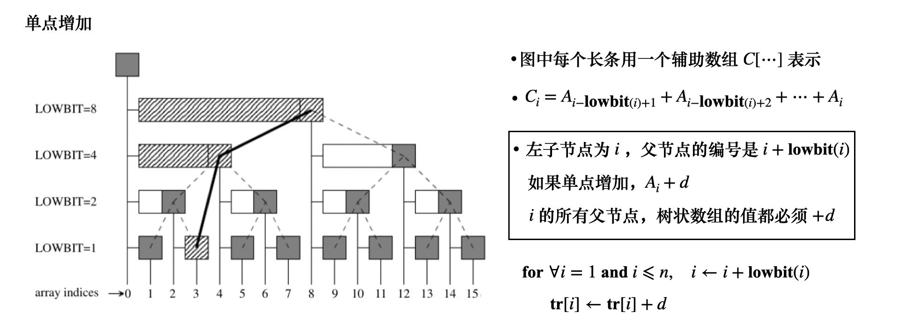
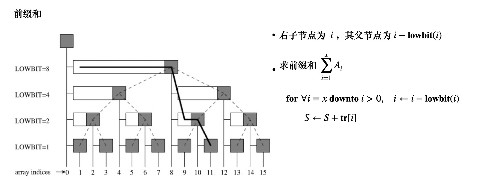
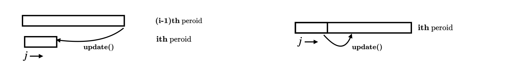
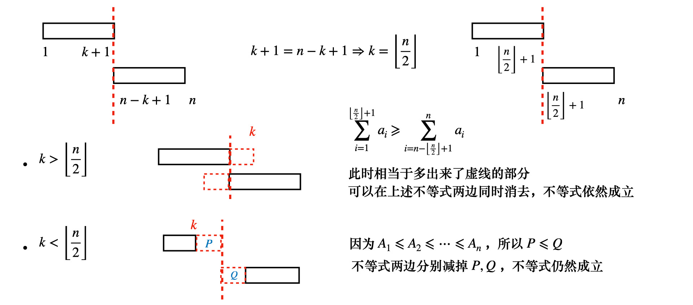

<!DOCTYPE html><html lang="zh-CN" data-theme="light"><head><meta charset="UTF-8"><meta http-equiv="X-UA-Compatible" content="IE=edge"><meta name="viewport" content="width=device-width,initial-scale=1"><title>处理的技巧：差分（一） | 算法小站</title><meta name="keywords" content="dp,线段树,差分,树状数组"><meta name="author" content="zhangminchen,fogsail_chen@163.com"><meta name="copyright" content="zhangminchen"><meta name="format-detection" content="telephone=no"><meta name="theme-color" content="#ffffff"><meta http-equiv="Cache-Control" content="no-transform"><meta http-equiv="Cache-Control" content="no-siteapp"><meta name="description" content="差分数组是一种解决序列问题很好用的工具，可以将区间增加转换成为单点增加，其中差分数组可以用树状数组，也可以用线段树来维护"><meta property="og:type" content="article"><meta property="og:title" content="处理的技巧：差分（一）"><meta property="og:url" content="https://www.fogsail.net/2021/03/06/20210306/index.html"><meta property="og:site_name" content="算法小站"><meta property="og:description" content="差分数组是一种解决序列问题很好用的工具，可以将区间增加转换成为单点增加，其中差分数组可以用树状数组，也可以用线段树来维护"><meta property="og:locale" content="zh_CN"><meta property="og:image" content="https://www.fogsail.net/img/algo-01.png"><meta property="article:published_time" content="2021-03-06T14:07:01.000Z"><meta property="article:modified_time" content="2021-03-09T03:55:22.952Z"><meta property="article:author" content="zhangminchen"><meta property="article:tag" content="dp"><meta property="article:tag" content="线段树"><meta property="article:tag" content="差分"><meta property="article:tag" content="树状数组"><meta name="twitter:card" content="summary"><meta name="twitter:image" content="https://www.fogsail.net/img/algo-01.png"><link rel="shortcut icon" href="/img/favicon.png"><link rel="canonical" href="https://www.fogsail.net/2021/03/06/20210306/"><link rel="preconnect" href="//cdn.jsdelivr.net"><link rel="preconnect" href="//www.google-analytics.com" crossorigin=""><link rel="preconnect" href="//hm.baidu.com"><link rel="preconnect" href="//s4.cnzz.com"><link rel="preconnect" href="//zz.bdstatic.com"><meta name="google-site-verification" content="EMoSEE-nLoAdIHWBDmdYpa0t4XBCF8aLYOM3ayoI0pI"><meta name="msvalidate.01" content="A5D49B867EF1BB3C062DA0149A0A2E1E"><meta name="baidu-site-verification" content="code-CXWS4dziOB"><meta name="360-site-verification" content="445d65d249d766c9b185e94639306645"><link rel="manifest" href="/img/pwa/manifest.json"><meta name="msapplication-TileColor" content="#fff"><link rel="apple-touch-icon" sizes="180x180" href="/img/pwa/apple-touch-icon.png"><link rel="icon" type="image/png" sizes="32x32" href="/img/pwa/32.png"><link rel="icon" type="image/png" sizes="16x16" href="/img/pwa/16.png"><link rel="mask-icon" href="/img/pwa/safari-pinned-tab.svg" color="#5bbad5"><link rel="stylesheet" href="/css/index.css"><link rel="stylesheet" href="https://cdn.jsdelivr.net/npm/@fortawesome/fontawesome-free/css/all.min.css" media="print" onload='this.media="all"'><link rel="stylesheet" href="https://cdn.jsdelivr.net/npm/node-snackbar/dist/snackbar.min.css" media="print" onload='this.media="all"'><link rel="stylesheet" href="https://cdn.jsdelivr.net/npm/instantsearch.js@2.10.5/dist/instantsearch.min.css" media="print" onload='this.media="all"'><script src="https://cdn.jsdelivr.net/npm/instantsearch.js@2.10.5/dist/instantsearch.min.js" defer></script><script>var _hmt=_hmt||[];!function(){var e=document.createElement("script");e.src="https://hm.baidu.com/hm.js?eefa70020af0829b6b4b9a6151d8a943";var t=document.getElementsByTagName("script")[0];t.parentNode.insertBefore(e,t)}()</script><script async src="https://www.googletagmanager.com/gtag/js?id=UA-114571328-1"></script><script>function gtag(){dataLayer.push(arguments)}window.dataLayer=window.dataLayer||[],gtag("js",new Date),gtag("config","UA-114571328-1")</script><script async data-pjax="data-pjax" src="https://s4.cnzz.com/z_stat.php?id=1279649349&amp;web_id=1279649349"></script><script>var GLOBAL_CONFIG={root:"/",algolia:{appId:"8QVTR8UQ0E",apiKey:"88abbbe5c86d52be951acbbc689ab2ab",indexName:"fogsail-blog",hits:{per_page:6},languages:{input_placeholder:"搜索文章",hits_empty:"找不到您查询的内容：${query}",hits_stats:"找到 ${hits} 条结果，用时 ${time} 毫秒"}},localSearch:void 0,translate:void 0,noticeOutdate:void 0,highlight:{plugin:"highlighjs",highlightCopy:!0,highlightLang:!0},copy:{success:"复制成功",error:"复制错误",noSupport:"浏览器不支持"},relativeDate:{homepage:!1,post:!1},runtime:"",date_suffix:{just:"刚刚",min:"分钟前",hour:"小时前",day:"天前",month:"个月前"},copyright:{limitCount:100,languages:{author:"作者: zhangminchen",link:"链接: ",source:"来源: 算法小站",info:"著作权归作者所有。商业转载请联系作者获得授权，非商业转载请注明出处。"}},lightbox:"fancybox",Snackbar:{chs_to_cht:"你已切换为繁体",cht_to_chs:"你已切换为简体",day_to_night:"你已切换为深色模式",night_to_day:"你已切换为浅色模式",bgLight:"#49b1f5",bgDark:"#121212",position:"bottom-left"},source:{jQuery:"https://cdn.jsdelivr.net/npm/jquery@latest/dist/jquery.min.js",justifiedGallery:{js:"https://cdn.jsdelivr.net/npm/justifiedGallery/dist/js/jquery.justifiedGallery.min.js",css:"https://cdn.jsdelivr.net/npm/justifiedGallery/dist/css/justifiedGallery.min.css"},fancybox:{js:"https://cdn.jsdelivr.net/npm/@fancyapps/fancybox@latest/dist/jquery.fancybox.min.js",css:"https://cdn.jsdelivr.net/npm/@fancyapps/fancybox@latest/dist/jquery.fancybox.min.css"}},isPhotoFigcaption:!1,islazyload:!1,isanchor:!1},saveToLocal={set:function(t,e,a){const i=864e5*a,s={value:e,expiry:(new Date).getTime()+i};localStorage.setItem(t,JSON.stringify(s))},get:function(t){const e=localStorage.getItem(t);if(!e)return;const a=JSON.parse(e);if(!((new Date).getTime()>a.expiry))return a.value;localStorage.removeItem(t)}};const getScript=t=>new Promise((e,a)=>{const i=document.createElement("script");i.src=t,i.async=!0,i.onerror=a,i.onload=i.onreadystatechange=function(){const t=this.readyState;t&&"loaded"!==t&&"complete"!==t||(i.onload=i.onreadystatechange=null,e())},document.head.appendChild(i)})</script><script id="config_change">var GLOBAL_CONFIG_SITE={isPost:!0,isHome:!1,isHighlightShrink:!1,isToc:!0,postUpdate:"2021-03-09 11:55:22"}</script><noscript><style>#nav{opacity:1}.justified-gallery img{opacity:1}#post-meta time,#recent-posts time{display:inline!important}</style></noscript><script>!function(){window.activateDarkMode=function(){document.documentElement.setAttribute("data-theme","dark"),null!==document.querySelector('meta[name="theme-color"]')&&document.querySelector('meta[name="theme-color"]').setAttribute("content","#0d0d0d")},window.activateLightMode=function(){document.documentElement.setAttribute("data-theme","light"),null!==document.querySelector('meta[name="theme-color"]')&&document.querySelector('meta[name="theme-color"]').setAttribute("content","#ffffff")};const e=saveToLocal.get("theme");"dark"===e?activateDarkMode():"light"===e&&activateLightMode();const t=saveToLocal.get("aside-status");void 0!==t&&("hide"===t?document.documentElement.classList.add("hide-aside"):document.documentElement.classList.remove("hide-aside"))}()</script><style>.app-refresh{position:fixed;top:-2.2rem;left:0;right:0;z-index:99999;padding:0 1rem;font-size:15px;height:2.2rem;transition:all .3s ease}.app-refresh-wrap{display:flex;color:#fff;height:100%;align-items:center;justify-content:center}.app-refresh-wrap a{color:#fff;text-decoration:underline;cursor:pointer}</style><meta name="generator" content="Hexo 5.3.0"></head><body><div id="sidebar"><div id="menu-mask"></div><div id="sidebar-menus"><div class="author-avatar"></div><div class="site-data"><div class="data-item is-center"><div class="data-item-link"><a href="/archives/"><div class="headline">文章</div><div class="length-num">124</div></a></div></div><div class="data-item is-center"><div class="data-item-link"><a href="/tags/"><div class="headline">标签</div><div class="length-num">90</div></a></div></div><div class="data-item is-center"><div class="data-item-link"><a href="/categories/"><div class="headline">分类</div><div class="length-num">29</div></a></div></div></div><hr><div class="menus_items"><div class="menus_item"><a class="site-page" href="/"><i class="fa-fw fas fa-home"></i> <span>首页</span></a></div><div class="menus_item"><a class="site-page" href="/archives/"><i class="fa-fw fas fa-archive"></i> <span>所有文章</span></a></div><div class="menus_item"><a class="site-page" href="/tags/"><i class="fa-fw fas fa-tags"></i> <span>标签</span></a></div><div class="menus_item"><a class="site-page" href="/categories/"><i class="fa-fw fas fa-folder-open"></i> <span>分类</span></a></div><div class="menus_item"><a class="site-page" href="javascript:void(0);" rel="external nofollow noreferrer"><i class="fa-fw fas fa-list"></i> <span>娱乐</span><i class="fas fa-chevron-down expand"></i></a><ul class="menus_item_child"><li><a class="site-page" href="/games/"><i class="fa-fw fas fa-gamepad"></i> <span>游戏</span></a></li><li><a class="site-page" href="/movies/"><i class="fa-fw fas fa-video"></i> <span>电影</span></a></li><li><a class="site-page" href="/books/"><i class="fa-fw fas fa-book"></i> <span>读书</span></a></li></ul></div><div class="menus_item"><a class="site-page" href="/link/"><i class="fa-fw fas fa-link"></i> <span>友链</span></a></div></div></div></div><div class="post" id="body-wrap"><header class="post-bg" id="page-header" style="background-image:url(/img/algo-01.png)"><nav id="nav"><span id="blog_name"><a id="site-name" href="/">算法小站</a></span><div id="menus"><div id="search-button"><a class="site-page social-icon search"><i class="fas fa-search fa-fw"></i> <span>搜索</span></a></div><div class="menus_items"><div class="menus_item"><a class="site-page" href="/"><i class="fa-fw fas fa-home"></i> <span>首页</span></a></div><div class="menus_item"><a class="site-page" href="/archives/"><i class="fa-fw fas fa-archive"></i> <span>所有文章</span></a></div><div class="menus_item"><a class="site-page" href="/tags/"><i class="fa-fw fas fa-tags"></i> <span>标签</span></a></div><div class="menus_item"><a class="site-page" href="/categories/"><i class="fa-fw fas fa-folder-open"></i> <span>分类</span></a></div><div class="menus_item"><a class="site-page" href="javascript:void(0);" rel="external nofollow noreferrer"><i class="fa-fw fas fa-list"></i> <span>娱乐</span><i class="fas fa-chevron-down expand"></i></a><ul class="menus_item_child"><li><a class="site-page" href="/games/"><i class="fa-fw fas fa-gamepad"></i> <span>游戏</span></a></li><li><a class="site-page" href="/movies/"><i class="fa-fw fas fa-video"></i> <span>电影</span></a></li><li><a class="site-page" href="/books/"><i class="fa-fw fas fa-book"></i> <span>读书</span></a></li></ul></div><div class="menus_item"><a class="site-page" href="/link/"><i class="fa-fw fas fa-link"></i> <span>友链</span></a></div></div><div id="toggle-menu"><a class="site-page"><i class="fas fa-bars fa-fw"></i></a></div></div></nav><div id="post-info"><h1 class="post-title">处理的技巧：差分（一）</h1><div id="post-meta"><div class="meta-firstline"><span class="post-meta-date"><i class="fa-fw post-meta-icon far fa-calendar-alt"></i><span class="post-meta-label">发表于</span><time datetime="2021-03-06T14:07:01.000Z" title="undefined 2021-03-06 22:07:01">2021-03-06</time></span><span class="post-meta-categories"><span class="post-meta-separator">|</span><i class="fas fa-inbox fa-fw post-meta-icon"></i><a class="post-meta-categories" href="/categories/%E7%AE%97%E6%B3%95%E8%AE%BE%E8%AE%A1%E7%AD%96%E7%95%A5/">算法设计策略</a></span></div><div class="meta-secondline"></div></div></div></header><main class="layout" id="content-inner"><div id="post"><article class="post-content" id="article-container"><h2 id="树状数组维护差分序列">树状数组维护差分序列</h2><p><br></p><p><strong>差分的性质</strong><br><span class="katex"><span class="katex-mathml"><math xmlns="http://www.w3.org/1998/Math/MathML"><semantics><mrow><msub><mi>b</mi><mi>i</mi></msub></mrow><annotation encoding="application/x-tex">b_i</annotation></semantics></math></span><span class="katex-html" aria-hidden="true"><span class="base"><span class="strut" style="height:.84444em;vertical-align:-.15em"></span><span class="mord"><span class="mord mathnormal">b</span><span class="msupsub"><span class="vlist-t vlist-t2"><span class="vlist-r"><span class="vlist" style="height:.31166399999999994em"><span style="top:-2.5500000000000003em;margin-left:0;margin-right:.05em"><span class="pstrut" style="height:2.7em"></span><span class="sizing reset-size6 size3 mtight"><span class="mord mathnormal mtight">i</span></span></span></span><span class="vlist-s">​</span></span><span class="vlist-r"><span class="vlist" style="height:.15em"><span></span></span></span></span></span></span></span></span></span> 为原序列<span class="katex"><span class="katex-mathml"><math xmlns="http://www.w3.org/1998/Math/MathML"><semantics><mrow><msub><mi>a</mi><mi>i</mi></msub></mrow><annotation encoding="application/x-tex">a_i</annotation></semantics></math></span><span class="katex-html" aria-hidden="true"><span class="base"><span class="strut" style="height:.58056em;vertical-align:-.15em"></span><span class="mord"><span class="mord mathnormal">a</span><span class="msupsub"><span class="vlist-t vlist-t2"><span class="vlist-r"><span class="vlist" style="height:.31166399999999994em"><span style="top:-2.5500000000000003em;margin-left:0;margin-right:.05em"><span class="pstrut" style="height:2.7em"></span><span class="sizing reset-size6 size3 mtight"><span class="mord mathnormal mtight">i</span></span></span></span><span class="vlist-s">​</span></span><span class="vlist-r"><span class="vlist" style="height:.15em"><span></span></span></span></span></span></span></span></span></span> 的差分序列，则</p><p><span class="katex-display"><span class="katex"><span class="katex-mathml"><math xmlns="http://www.w3.org/1998/Math/MathML" display="block"><semantics><mrow><msub><mi>b</mi><mi>i</mi></msub><mo>=</mo><mrow><mo fence="true">{</mo><mtable rowspacing="0.3599999999999999em" columnalign="left left" columnspacing="1em"><mtr><mtd><mstyle scriptlevel="0" displaystyle="false"><mrow><msub><mi>a</mi><mi>i</mi></msub><mo>−</mo><msub><mi>a</mi><mrow><mi>i</mi><mo>−</mo><mn>1</mn></mrow></msub></mrow></mstyle></mtd><mtd><mstyle scriptlevel="0" displaystyle="false"><mrow></mrow></mstyle></mtd><mtd><mstyle scriptlevel="0" displaystyle="false"><mrow><mi>i</mi><mo>∈</mo><mo stretchy="false">[</mo><mn>2</mn><mo separator="true">,</mo><mi>n</mi><mo stretchy="false">]</mo></mrow></mstyle></mtd></mtr><mtr><mtd><mstyle scriptlevel="0" displaystyle="false"><msub><mi>a</mi><mn>1</mn></msub></mstyle></mtd><mtd><mstyle scriptlevel="0" displaystyle="false"><mrow></mrow></mstyle></mtd><mtd><mstyle scriptlevel="0" displaystyle="false"><mrow><mi>i</mi><mo>=</mo><mn>1</mn></mrow></mstyle></mtd></mtr></mtable></mrow></mrow><annotation encoding="application/x-tex">b_i= \begin{cases} a_i - a_{i-1} &amp;&amp; i \in [2, n] \\ a_1 &amp;&amp; i = 1 \end{cases}</annotation></semantics></math></span><span class="katex-html" aria-hidden="true"><span class="base"><span class="strut" style="height:.84444em;vertical-align:-.15em"></span><span class="mord"><span class="mord mathnormal">b</span><span class="msupsub"><span class="vlist-t vlist-t2"><span class="vlist-r"><span class="vlist" style="height:.31166399999999994em"><span style="top:-2.5500000000000003em;margin-left:0;margin-right:.05em"><span class="pstrut" style="height:2.7em"></span><span class="sizing reset-size6 size3 mtight"><span class="mord mathnormal mtight">i</span></span></span></span><span class="vlist-s">​</span></span><span class="vlist-r"><span class="vlist" style="height:.15em"><span></span></span></span></span></span></span><span class="mspace" style="margin-right:.2777777777777778em"></span><span class="mrel">=</span><span class="mspace" style="margin-right:.2777777777777778em"></span></span><span class="base"><span class="strut" style="height:3.0000299999999998em;vertical-align:-1.25003em"></span><span class="minner"><span class="mopen delimcenter" style="top:0"><span class="delimsizing size4">{</span></span><span class="mord"><span class="mtable"><span class="col-align-l"><span class="vlist-t vlist-t2"><span class="vlist-r"><span class="vlist" style="height:1.69em"><span style="top:-3.69em"><span class="pstrut" style="height:3.008em"></span><span class="mord"><span class="mord"><span class="mord mathnormal">a</span><span class="msupsub"><span class="vlist-t vlist-t2"><span class="vlist-r"><span class="vlist" style="height:.31166399999999994em"><span style="top:-2.5500000000000003em;margin-left:0;margin-right:.05em"><span class="pstrut" style="height:2.7em"></span><span class="sizing reset-size6 size3 mtight"><span class="mord mathnormal mtight">i</span></span></span></span><span class="vlist-s">​</span></span><span class="vlist-r"><span class="vlist" style="height:.15em"><span></span></span></span></span></span></span><span class="mspace" style="margin-right:.2222222222222222em"></span><span class="mbin">−</span><span class="mspace" style="margin-right:.2222222222222222em"></span><span class="mord"><span class="mord mathnormal">a</span><span class="msupsub"><span class="vlist-t vlist-t2"><span class="vlist-r"><span class="vlist" style="height:.311664em"><span style="top:-2.5500000000000003em;margin-left:0;margin-right:.05em"><span class="pstrut" style="height:2.7em"></span><span class="sizing reset-size6 size3 mtight"><span class="mord mtight"><span class="mord mathnormal mtight">i</span><span class="mbin mtight">−</span><span class="mord mtight">1</span></span></span></span></span><span class="vlist-s">​</span></span><span class="vlist-r"><span class="vlist" style="height:.208331em"><span></span></span></span></span></span></span></span></span><span style="top:-2.25em"><span class="pstrut" style="height:3.008em"></span><span class="mord"><span class="mord"><span class="mord mathnormal">a</span><span class="msupsub"><span class="vlist-t vlist-t2"><span class="vlist-r"><span class="vlist" style="height:.30110799999999993em"><span style="top:-2.5500000000000003em;margin-left:0;margin-right:.05em"><span class="pstrut" style="height:2.7em"></span><span class="sizing reset-size6 size3 mtight"><span class="mord mtight">1</span></span></span></span><span class="vlist-s">​</span></span><span class="vlist-r"><span class="vlist" style="height:.15em"><span></span></span></span></span></span></span></span></span></span><span class="vlist-s">​</span></span><span class="vlist-r"><span class="vlist" style="height:1.19em"><span></span></span></span></span></span><span class="arraycolsep" style="width:1em"></span><span class="col-align-l"><span class="vlist-t vlist-t2"><span class="vlist-r"><span class="vlist" style="height:1.69em"><span style="top:-3.69em"><span class="pstrut" style="height:3.008em"></span><span class="mord"></span></span><span style="top:-2.25em"><span class="pstrut" style="height:3.008em"></span><span class="mord"></span></span></span><span class="vlist-s">​</span></span><span class="vlist-r"><span class="vlist" style="height:1.19em"><span></span></span></span></span></span><span class="arraycolsep" style="width:.5em"></span><span class="col-align-c"><span class="vlist-t vlist-t2"><span class="vlist-r"><span class="vlist" style="height:1.69em"><span style="top:-3.69em"><span class="pstrut" style="height:3.008em"></span><span class="mord"><span class="mord mathnormal">i</span><span class="mspace" style="margin-right:.2777777777777778em"></span><span class="mrel">∈</span><span class="mspace" style="margin-right:.2777777777777778em"></span><span class="mopen">[</span><span class="mord">2</span><span class="mpunct">,</span><span class="mspace" style="margin-right:.16666666666666666em"></span><span class="mord mathnormal">n</span><span class="mclose">]</span></span></span><span style="top:-2.25em"><span class="pstrut" style="height:3.008em"></span><span class="mord"><span class="mord mathnormal">i</span><span class="mspace" style="margin-right:.2777777777777778em"></span><span class="mrel">=</span><span class="mspace" style="margin-right:.2777777777777778em"></span><span class="mord">1</span></span></span></span><span class="vlist-s">​</span></span><span class="vlist-r"><span class="vlist" style="height:1.19em"><span></span></span></span></span></span></span></span><span class="mclose nulldelimiter"></span></span></span></span></span></span></p><ul><li>差分序列的前缀和等于原序列<p><span class="katex-display"><span class="katex"><span class="katex-mathml"><math xmlns="http://www.w3.org/1998/Math/MathML" display="block"><semantics><mrow><msub><mi>a</mi><mi>i</mi></msub><mo>=</mo><munderover><mo>∑</mo><mrow><mi>j</mi><mo>=</mo><mn>1</mn></mrow><mi>i</mi></munderover><msub><mi>b</mi><mi>j</mi></msub></mrow><annotation encoding="application/x-tex">a_i = \sum_{j = 1}^{i} b_j</annotation></semantics></math></span><span class="katex-html" aria-hidden="true"><span class="base"><span class="strut" style="height:.58056em;vertical-align:-.15em"></span><span class="mord"><span class="mord mathnormal">a</span><span class="msupsub"><span class="vlist-t vlist-t2"><span class="vlist-r"><span class="vlist" style="height:.31166399999999994em"><span style="top:-2.5500000000000003em;margin-left:0;margin-right:.05em"><span class="pstrut" style="height:2.7em"></span><span class="sizing reset-size6 size3 mtight"><span class="mord mathnormal mtight">i</span></span></span></span><span class="vlist-s">​</span></span><span class="vlist-r"><span class="vlist" style="height:.15em"><span></span></span></span></span></span></span><span class="mspace" style="margin-right:.2777777777777778em"></span><span class="mrel">=</span><span class="mspace" style="margin-right:.2777777777777778em"></span></span><span class="base"><span class="strut" style="height:3.2254460000000007em;vertical-align:-1.4137769999999998em"></span><span class="mop op-limits"><span class="vlist-t vlist-t2"><span class="vlist-r"><span class="vlist" style="height:1.8116690000000006em"><span style="top:-1.872331em;margin-left:0"><span class="pstrut" style="height:3.05em"></span><span class="sizing reset-size6 size3 mtight"><span class="mord mtight"><span class="mord mathnormal mtight" style="margin-right:.05724em">j</span><span class="mrel mtight">=</span><span class="mord mtight">1</span></span></span></span><span style="top:-3.050005em"><span class="pstrut" style="height:3.05em"></span><span><span class="mop op-symbol large-op">∑</span></span></span><span style="top:-4.3000050000000005em;margin-left:0"><span class="pstrut" style="height:3.05em"></span><span class="sizing reset-size6 size3 mtight"><span class="mord mtight"><span class="mord mathnormal mtight">i</span></span></span></span></span><span class="vlist-s">​</span></span><span class="vlist-r"><span class="vlist" style="height:1.4137769999999998em"><span></span></span></span></span></span><span class="mspace" style="margin-right:.16666666666666666em"></span><span class="mord"><span class="mord mathnormal">b</span><span class="msupsub"><span class="vlist-t vlist-t2"><span class="vlist-r"><span class="vlist" style="height:.311664em"><span style="top:-2.5500000000000003em;margin-left:0;margin-right:.05em"><span class="pstrut" style="height:2.7em"></span><span class="sizing reset-size6 size3 mtight"><span class="mord mathnormal mtight" style="margin-right:.05724em">j</span></span></span></span><span class="vlist-s">​</span></span><span class="vlist-r"><span class="vlist" style="height:.286108em"><span></span></span></span></span></span></span></span></span></span></span></p></li></ul><p><strong><a target="_blank" rel="noopener external nofollow noreferrer" href="https://www.acwing.com/problem/content/248/">Acwing242</a></strong><br>根据差分序列的性质，我们用树状数组维护差分序列</p><ul><li>初始化树状数组，<span class="katex"><span class="katex-mathml"><math xmlns="http://www.w3.org/1998/Math/MathML"><semantics><mrow><mtext mathvariant="bold">tr</mtext><mo stretchy="false">[</mo><mi>i</mi><mo stretchy="false">]</mo><mo>=</mo><mi>A</mi><mo stretchy="false">[</mo><mi>i</mi><mo stretchy="false">]</mo><mo>−</mo><mi>A</mi><mo stretchy="false">[</mo><mi>i</mi><mo>−</mo><mn>1</mn><mo stretchy="false">]</mo></mrow><annotation encoding="application/x-tex">\textbf{tr}[i] = A[i] - A[i-1]</annotation></semantics></math></span><span class="katex-html" aria-hidden="true"><span class="base"><span class="strut" style="height:1em;vertical-align:-.25em"></span><span class="mord text"><span class="mord textbf">tr</span></span><span class="mopen">[</span><span class="mord mathnormal">i</span><span class="mclose">]</span><span class="mspace" style="margin-right:.2777777777777778em"></span><span class="mrel">=</span><span class="mspace" style="margin-right:.2777777777777778em"></span></span><span class="base"><span class="strut" style="height:1em;vertical-align:-.25em"></span><span class="mord mathnormal">A</span><span class="mopen">[</span><span class="mord mathnormal">i</span><span class="mclose">]</span><span class="mspace" style="margin-right:.2222222222222222em"></span><span class="mbin">−</span><span class="mspace" style="margin-right:.2222222222222222em"></span></span><span class="base"><span class="strut" style="height:1em;vertical-align:-.25em"></span><span class="mord mathnormal">A</span><span class="mopen">[</span><span class="mord mathnormal">i</span><span class="mspace" style="margin-right:.2222222222222222em"></span><span class="mbin">−</span><span class="mspace" style="margin-right:.2222222222222222em"></span></span><span class="base"><span class="strut" style="height:1em;vertical-align:-.25em"></span><span class="mord">1</span><span class="mclose">]</span></span></span></span><br><span class="katex"><span class="katex-mathml"><math xmlns="http://www.w3.org/1998/Math/MathML"><semantics><mrow><mtext mathvariant="bold">add</mtext><mo stretchy="false">(</mo><mi>i</mi><mo separator="true">,</mo><msub><mi>A</mi><mi>i</mi></msub><mo>−</mo><msub><mi>A</mi><mrow><mi>i</mi><mo>−</mo><mn>1</mn></mrow></msub><mo stretchy="false">)</mo></mrow><annotation encoding="application/x-tex">\textbf{add}(i, A_i-A_{i-1})</annotation></semantics></math></span><span class="katex-html" aria-hidden="true"><span class="base"><span class="strut" style="height:1em;vertical-align:-.25em"></span><span class="mord text"><span class="mord textbf">add</span></span><span class="mopen">(</span><span class="mord mathnormal">i</span><span class="mpunct">,</span><span class="mspace" style="margin-right:.16666666666666666em"></span><span class="mord"><span class="mord mathnormal">A</span><span class="msupsub"><span class="vlist-t vlist-t2"><span class="vlist-r"><span class="vlist" style="height:.31166399999999994em"><span style="top:-2.5500000000000003em;margin-left:0;margin-right:.05em"><span class="pstrut" style="height:2.7em"></span><span class="sizing reset-size6 size3 mtight"><span class="mord mathnormal mtight">i</span></span></span></span><span class="vlist-s">​</span></span><span class="vlist-r"><span class="vlist" style="height:.15em"><span></span></span></span></span></span></span><span class="mspace" style="margin-right:.2222222222222222em"></span><span class="mbin">−</span><span class="mspace" style="margin-right:.2222222222222222em"></span></span><span class="base"><span class="strut" style="height:1em;vertical-align:-.25em"></span><span class="mord"><span class="mord mathnormal">A</span><span class="msupsub"><span class="vlist-t vlist-t2"><span class="vlist-r"><span class="vlist" style="height:.311664em"><span style="top:-2.5500000000000003em;margin-left:0;margin-right:.05em"><span class="pstrut" style="height:2.7em"></span><span class="sizing reset-size6 size3 mtight"><span class="mord mtight"><span class="mord mathnormal mtight">i</span><span class="mbin mtight">−</span><span class="mord mtight">1</span></span></span></span></span><span class="vlist-s">​</span></span><span class="vlist-r"><span class="vlist" style="height:.208331em"><span></span></span></span></span></span></span><span class="mclose">)</span></span></span></span></li><li>区间<span class="katex"><span class="katex-mathml"><math xmlns="http://www.w3.org/1998/Math/MathML"><semantics><mrow><mo stretchy="false">[</mo><mi>l</mi><mo separator="true">,</mo><mi>r</mi><mo stretchy="false">]</mo><mo>+</mo><mi>d</mi></mrow><annotation encoding="application/x-tex">[l, r] + d</annotation></semantics></math></span><span class="katex-html" aria-hidden="true"><span class="base"><span class="strut" style="height:1em;vertical-align:-.25em"></span><span class="mopen">[</span><span class="mord mathnormal" style="margin-right:.01968em">l</span><span class="mpunct">,</span><span class="mspace" style="margin-right:.16666666666666666em"></span><span class="mord mathnormal" style="margin-right:.02778em">r</span><span class="mclose">]</span><span class="mspace" style="margin-right:.2222222222222222em"></span><span class="mbin">+</span><span class="mspace" style="margin-right:.2222222222222222em"></span></span><span class="base"><span class="strut" style="height:.69444em;vertical-align:0"></span><span class="mord mathnormal">d</span></span></span></span> （区间内所有的数都加<span class="katex"><span class="katex-mathml"><math xmlns="http://www.w3.org/1998/Math/MathML"><semantics><mrow><mi>d</mi></mrow><annotation encoding="application/x-tex">d</annotation></semantics></math></span><span class="katex-html" aria-hidden="true"><span class="base"><span class="strut" style="height:.69444em;vertical-align:0"></span><span class="mord mathnormal">d</span></span></span></span>）<br><span class="katex"><span class="katex-mathml"><math xmlns="http://www.w3.org/1998/Math/MathML"><semantics><mrow><mtext mathvariant="bold">add</mtext><mo stretchy="false">(</mo><mi>l</mi><mo separator="true">,</mo><mi>d</mi><mo stretchy="false">)</mo><mo separator="true">,</mo><mtext mathvariant="bold">add</mtext><mo stretchy="false">(</mo><mi>r</mi><mo>+</mo><mn>1</mn><mo separator="true">,</mo><mo>−</mo><mi>d</mi><mo stretchy="false">)</mo></mrow><annotation encoding="application/x-tex">\textbf{add}(l, d), \textbf{add}(r+1, -d)</annotation></semantics></math></span><span class="katex-html" aria-hidden="true"><span class="base"><span class="strut" style="height:1em;vertical-align:-.25em"></span><span class="mord text"><span class="mord textbf">add</span></span><span class="mopen">(</span><span class="mord mathnormal" style="margin-right:.01968em">l</span><span class="mpunct">,</span><span class="mspace" style="margin-right:.16666666666666666em"></span><span class="mord mathnormal">d</span><span class="mclose">)</span><span class="mpunct">,</span><span class="mspace" style="margin-right:.16666666666666666em"></span><span class="mord text"><span class="mord textbf">add</span></span><span class="mopen">(</span><span class="mord mathnormal" style="margin-right:.02778em">r</span><span class="mspace" style="margin-right:.2222222222222222em"></span><span class="mbin">+</span><span class="mspace" style="margin-right:.2222222222222222em"></span></span><span class="base"><span class="strut" style="height:1em;vertical-align:-.25em"></span><span class="mord">1</span><span class="mpunct">,</span><span class="mspace" style="margin-right:.16666666666666666em"></span><span class="mord">−</span><span class="mord mathnormal">d</span><span class="mclose">)</span></span></span></span></li><li>询问修改后下标为<span class="katex"><span class="katex-mathml"><math xmlns="http://www.w3.org/1998/Math/MathML"><semantics><mrow><mi>x</mi></mrow><annotation encoding="application/x-tex">x</annotation></semantics></math></span><span class="katex-html" aria-hidden="true"><span class="base"><span class="strut" style="height:.43056em;vertical-align:0"></span><span class="mord mathnormal">x</span></span></span></span> 的值，执行<br><span class="katex"><span class="katex-mathml"><math xmlns="http://www.w3.org/1998/Math/MathML"><semantics><mrow><mtext mathvariant="bold">sum</mtext><mo stretchy="false">(</mo><mi>x</mi><mo stretchy="false">)</mo></mrow><annotation encoding="application/x-tex">\textbf{sum}(x)</annotation></semantics></math></span><span class="katex-html" aria-hidden="true"><span class="base"><span class="strut" style="height:1em;vertical-align:-.25em"></span><span class="mord text"><span class="mord textbf">sum</span></span><span class="mopen">(</span><span class="mord mathnormal">x</span><span class="mclose">)</span></span></span></span></li></ul><figure class="highlight bash"><table><tr><td class="gutter"><pre><span class="line">1</span><br><span class="line">2</span><br><span class="line">3</span><br><span class="line">4</span><br><span class="line">5</span><br><span class="line">6</span><br><span class="line">7</span><br><span class="line">8</span><br><span class="line">9</span><br><span class="line">10</span><br><span class="line">11</span><br><span class="line">12</span><br><span class="line">13</span><br><span class="line">14</span><br><span class="line">15</span><br><span class="line">16</span><br><span class="line">17</span><br><span class="line">18</span><br><span class="line">19</span><br><span class="line">20</span><br><span class="line">21</span><br><span class="line">22</span><br><span class="line">23</span><br><span class="line">24</span><br><span class="line">25</span><br><span class="line">26</span><br><span class="line">27</span><br><span class="line">28</span><br><span class="line">29</span><br><span class="line">30</span><br><span class="line">31</span><br><span class="line">32</span><br><span class="line">33</span><br><span class="line">34</span><br><span class="line">35</span><br><span class="line">36</span><br><span class="line">37</span><br><span class="line">38</span><br></pre></td><td class="code"><pre><span class="line">const int maxn = 100000 + 10;</span><br><span class="line">ll a[maxn], tr[maxn];</span><br><span class="line">int n, m;</span><br><span class="line"></span><br><span class="line">void add(int x, int d) &#123;</span><br><span class="line">    <span class="keyword">for</span> (int i = x; i &lt;= n; i += lowbit(i)) tr[i] += d;</span><br><span class="line">&#125;</span><br><span class="line"></span><br><span class="line">ll sum(int x) &#123;</span><br><span class="line">    ll ans = 0;</span><br><span class="line">    <span class="keyword">for</span> (int i = x; i; i -= lowbit(i)) ans += tr[i];</span><br><span class="line">    <span class="built_in">return</span> ans;</span><br><span class="line">&#125;</span><br><span class="line"></span><br><span class="line">int <span class="function"><span class="title">main</span></span>() &#123;</span><br><span class="line">    freopen(<span class="string">&quot;input.txt&quot;</span>, <span class="string">&quot;r&quot;</span>, stdin);</span><br><span class="line">    scanf(<span class="string">&quot;%d%d&quot;</span>, &amp;n, &amp;m);</span><br><span class="line">    <span class="keyword">for</span> (int i = 1; i &lt;= n; i++) scanf(<span class="string">&quot;%lld&quot;</span>, &amp;a[i]);</span><br><span class="line"></span><br><span class="line">    // prework</span><br><span class="line">    <span class="keyword">for</span> (int i = 1; i &lt;= n; i++) add(i, a[i]-a[i-1]);</span><br><span class="line"></span><br><span class="line">    // solve</span><br><span class="line">    <span class="keyword">while</span> (m--) &#123;</span><br><span class="line">        char cmd[2];</span><br><span class="line">        scanf(<span class="string">&quot;%s&quot;</span>, cmd);</span><br><span class="line">        <span class="keyword">if</span> (cmd[0] == <span class="string">&#x27;Q&#x27;</span>) &#123;</span><br><span class="line">            int x;</span><br><span class="line">            scanf(<span class="string">&quot;%d&quot;</span>, &amp;x);</span><br><span class="line">            <span class="built_in">printf</span>(<span class="string">&quot;%lld\n&quot;</span>, sum(x));</span><br><span class="line">        &#125;</span><br><span class="line">        <span class="keyword">else</span> &#123;</span><br><span class="line">            int l, r, d;</span><br><span class="line">            scanf(<span class="string">&quot;%d%d%d&quot;</span>, &amp;l, &amp;r, &amp;d);</span><br><span class="line">            add(l, d), add(r+1, -d);</span><br><span class="line">        &#125;</span><br><span class="line">    &#125;</span><br><span class="line">&#125;</span><br></pre></td></tr></table></figure><h2 id="差分序列维护原序列部分和">差分序列维护原序列部分和</h2><p><span class="katex"><span class="katex-mathml"><math xmlns="http://www.w3.org/1998/Math/MathML"><semantics><mrow><msub><mi>a</mi><mi>x</mi></msub></mrow><annotation encoding="application/x-tex">a_x</annotation></semantics></math></span><span class="katex-html" aria-hidden="true"><span class="base"><span class="strut" style="height:.58056em;vertical-align:-.15em"></span><span class="mord"><span class="mord mathnormal">a</span><span class="msupsub"><span class="vlist-t vlist-t2"><span class="vlist-r"><span class="vlist" style="height:.151392em"><span style="top:-2.5500000000000003em;margin-left:0;margin-right:.05em"><span class="pstrut" style="height:2.7em"></span><span class="sizing reset-size6 size3 mtight"><span class="mord mathnormal mtight">x</span></span></span></span><span class="vlist-s">​</span></span><span class="vlist-r"><span class="vlist" style="height:.15em"><span></span></span></span></span></span></span></span></span></span> 的前缀和<span class="katex"><span class="katex-mathml"><math xmlns="http://www.w3.org/1998/Math/MathML"><semantics><mrow><mi>S</mi><mo>=</mo><msubsup><mo>∑</mo><mrow><mi>i</mi><mo>=</mo><mn>1</mn></mrow><mi>x</mi></msubsup><msub><mi>a</mi><mi>i</mi></msub></mrow><annotation encoding="application/x-tex">S = \sum_{i=1}^{x} a_i</annotation></semantics></math></span><span class="katex-html" aria-hidden="true"><span class="base"><span class="strut" style="height:.68333em;vertical-align:0"></span><span class="mord mathnormal" style="margin-right:.05764em">S</span><span class="mspace" style="margin-right:.2777777777777778em"></span><span class="mrel">=</span><span class="mspace" style="margin-right:.2777777777777778em"></span></span><span class="base"><span class="strut" style="height:1.104002em;vertical-align:-.29971000000000003em"></span><span class="mop"><span class="mop op-symbol small-op" style="position:relative;top:-.0000050000000000050004em">∑</span><span class="msupsub"><span class="vlist-t vlist-t2"><span class="vlist-r"><span class="vlist" style="height:.804292em"><span style="top:-2.40029em;margin-left:0;margin-right:.05em"><span class="pstrut" style="height:2.7em"></span><span class="sizing reset-size6 size3 mtight"><span class="mord mtight"><span class="mord mathnormal mtight">i</span><span class="mrel mtight">=</span><span class="mord mtight">1</span></span></span></span><span style="top:-3.2029em;margin-right:.05em"><span class="pstrut" style="height:2.7em"></span><span class="sizing reset-size6 size3 mtight"><span class="mord mtight"><span class="mord mathnormal mtight">x</span></span></span></span></span><span class="vlist-s">​</span></span><span class="vlist-r"><span class="vlist" style="height:.29971000000000003em"><span></span></span></span></span></span></span><span class="mspace" style="margin-right:.16666666666666666em"></span><span class="mord"><span class="mord mathnormal">a</span><span class="msupsub"><span class="vlist-t vlist-t2"><span class="vlist-r"><span class="vlist" style="height:.31166399999999994em"><span style="top:-2.5500000000000003em;margin-left:0;margin-right:.05em"><span class="pstrut" style="height:2.7em"></span><span class="sizing reset-size6 size3 mtight"><span class="mord mathnormal mtight">i</span></span></span></span><span class="vlist-s">​</span></span><span class="vlist-r"><span class="vlist" style="height:.15em"><span></span></span></span></span></span></span></span></span></span><br>如果用差分数组来维护</p><p><span class="katex-display"><span class="katex"><span class="katex-mathml"><math xmlns="http://www.w3.org/1998/Math/MathML" display="block"><semantics><mrow><mi>S</mi><mo>=</mo><munderover><mo>∑</mo><mrow><mi>i</mi><mo>=</mo><mn>1</mn></mrow><mi>x</mi></munderover><munderover><mo>∑</mo><mrow><mi>j</mi><mo>=</mo><mn>1</mn></mrow><mi>i</mi></munderover><msub><mi>b</mi><mi>j</mi></msub><mo>=</mo><munderover><mo>∑</mo><mrow><mi>i</mi><mo>=</mo><mn>1</mn></mrow><mi>x</mi></munderover><mo stretchy="false">(</mo><mi>x</mi><mo>−</mo><mi>i</mi><mo>+</mo><mn>1</mn><mo stretchy="false">)</mo><mo>⋅</mo><msub><mi>b</mi><mi>i</mi></msub></mrow><annotation encoding="application/x-tex">S = \sum_{i=1}^{x} \sum_{j=1}^{i} b_j = \sum_{i=1}^{x} (x-i+1)\cdot b_i</annotation></semantics></math></span><span class="katex-html" aria-hidden="true"><span class="base"><span class="strut" style="height:.68333em;vertical-align:0"></span><span class="mord mathnormal" style="margin-right:.05764em">S</span><span class="mspace" style="margin-right:.2777777777777778em"></span><span class="mrel">=</span><span class="mspace" style="margin-right:.2777777777777778em"></span></span><span class="base"><span class="strut" style="height:3.2254460000000007em;vertical-align:-1.4137769999999998em"></span><span class="mop op-limits"><span class="vlist-t vlist-t2"><span class="vlist-r"><span class="vlist" style="height:1.6513970000000002em"><span style="top:-1.872331em;margin-left:0"><span class="pstrut" style="height:3.05em"></span><span class="sizing reset-size6 size3 mtight"><span class="mord mtight"><span class="mord mathnormal mtight">i</span><span class="mrel mtight">=</span><span class="mord mtight">1</span></span></span></span><span style="top:-3.050005em"><span class="pstrut" style="height:3.05em"></span><span><span class="mop op-symbol large-op">∑</span></span></span><span style="top:-4.3000050000000005em;margin-left:0"><span class="pstrut" style="height:3.05em"></span><span class="sizing reset-size6 size3 mtight"><span class="mord mtight"><span class="mord mathnormal mtight">x</span></span></span></span></span><span class="vlist-s">​</span></span><span class="vlist-r"><span class="vlist" style="height:1.277669em"><span></span></span></span></span></span><span class="mspace" style="margin-right:.16666666666666666em"></span><span class="mop op-limits"><span class="vlist-t vlist-t2"><span class="vlist-r"><span class="vlist" style="height:1.8116690000000006em"><span style="top:-1.872331em;margin-left:0"><span class="pstrut" style="height:3.05em"></span><span class="sizing reset-size6 size3 mtight"><span class="mord mtight"><span class="mord mathnormal mtight" style="margin-right:.05724em">j</span><span class="mrel mtight">=</span><span class="mord mtight">1</span></span></span></span><span style="top:-3.050005em"><span class="pstrut" style="height:3.05em"></span><span><span class="mop op-symbol large-op">∑</span></span></span><span style="top:-4.3000050000000005em;margin-left:0"><span class="pstrut" style="height:3.05em"></span><span class="sizing reset-size6 size3 mtight"><span class="mord mtight"><span class="mord mathnormal mtight">i</span></span></span></span></span><span class="vlist-s">​</span></span><span class="vlist-r"><span class="vlist" style="height:1.4137769999999998em"><span></span></span></span></span></span><span class="mspace" style="margin-right:.16666666666666666em"></span><span class="mord"><span class="mord mathnormal">b</span><span class="msupsub"><span class="vlist-t vlist-t2"><span class="vlist-r"><span class="vlist" style="height:.311664em"><span style="top:-2.5500000000000003em;margin-left:0;margin-right:.05em"><span class="pstrut" style="height:2.7em"></span><span class="sizing reset-size6 size3 mtight"><span class="mord mathnormal mtight" style="margin-right:.05724em">j</span></span></span></span><span class="vlist-s">​</span></span><span class="vlist-r"><span class="vlist" style="height:.286108em"><span></span></span></span></span></span></span><span class="mspace" style="margin-right:.2777777777777778em"></span><span class="mrel">=</span><span class="mspace" style="margin-right:.2777777777777778em"></span></span><span class="base"><span class="strut" style="height:2.929066em;vertical-align:-1.277669em"></span><span class="mop op-limits"><span class="vlist-t vlist-t2"><span class="vlist-r"><span class="vlist" style="height:1.6513970000000002em"><span style="top:-1.872331em;margin-left:0"><span class="pstrut" style="height:3.05em"></span><span class="sizing reset-size6 size3 mtight"><span class="mord mtight"><span class="mord mathnormal mtight">i</span><span class="mrel mtight">=</span><span class="mord mtight">1</span></span></span></span><span style="top:-3.050005em"><span class="pstrut" style="height:3.05em"></span><span><span class="mop op-symbol large-op">∑</span></span></span><span style="top:-4.3000050000000005em;margin-left:0"><span class="pstrut" style="height:3.05em"></span><span class="sizing reset-size6 size3 mtight"><span class="mord mtight"><span class="mord mathnormal mtight">x</span></span></span></span></span><span class="vlist-s">​</span></span><span class="vlist-r"><span class="vlist" style="height:1.277669em"><span></span></span></span></span></span><span class="mopen">(</span><span class="mord mathnormal">x</span><span class="mspace" style="margin-right:.2222222222222222em"></span><span class="mbin">−</span><span class="mspace" style="margin-right:.2222222222222222em"></span></span><span class="base"><span class="strut" style="height:.74285em;vertical-align:-.08333em"></span><span class="mord mathnormal">i</span><span class="mspace" style="margin-right:.2222222222222222em"></span><span class="mbin">+</span><span class="mspace" style="margin-right:.2222222222222222em"></span></span><span class="base"><span class="strut" style="height:1em;vertical-align:-.25em"></span><span class="mord">1</span><span class="mclose">)</span><span class="mspace" style="margin-right:.2222222222222222em"></span><span class="mbin">⋅</span><span class="mspace" style="margin-right:.2222222222222222em"></span></span><span class="base"><span class="strut" style="height:.84444em;vertical-align:-.15em"></span><span class="mord"><span class="mord mathnormal">b</span><span class="msupsub"><span class="vlist-t vlist-t2"><span class="vlist-r"><span class="vlist" style="height:.31166399999999994em"><span style="top:-2.5500000000000003em;margin-left:0;margin-right:.05em"><span class="pstrut" style="height:2.7em"></span><span class="sizing reset-size6 size3 mtight"><span class="mord mathnormal mtight">i</span></span></span></span><span class="vlist-s">​</span></span><span class="vlist-r"><span class="vlist" style="height:.15em"><span></span></span></span></span></span></span></span></span></span></span></p><p>也就是说</p><p><span class="katex-display"><span class="katex"><span class="katex-mathml"><math xmlns="http://www.w3.org/1998/Math/MathML" display="block"><semantics><mrow><mi>S</mi><mo stretchy="false">(</mo><mi>x</mi><mo stretchy="false">)</mo><mo>=</mo><mo stretchy="false">(</mo><mi>x</mi><mo>+</mo><mn>1</mn><mo stretchy="false">)</mo><munderover><mo>∑</mo><mrow><mi>i</mi><mo>=</mo><mn>1</mn></mrow><mi>x</mi></munderover><msub><mi>b</mi><mi>i</mi></msub><mo>−</mo><munderover><mo>∑</mo><mrow><mi>i</mi><mo>=</mo><mn>1</mn></mrow><mi>x</mi></munderover><mi>i</mi><mo>⋅</mo><msub><mi>b</mi><mi>i</mi></msub></mrow><annotation encoding="application/x-tex">S(x) = (x+1) \sum_{i=1}^{x} b_i - \sum_{i=1}^{x} i \cdot b_i</annotation></semantics></math></span><span class="katex-html" aria-hidden="true"><span class="base"><span class="strut" style="height:1em;vertical-align:-.25em"></span><span class="mord mathnormal" style="margin-right:.05764em">S</span><span class="mopen">(</span><span class="mord mathnormal">x</span><span class="mclose">)</span><span class="mspace" style="margin-right:.2777777777777778em"></span><span class="mrel">=</span><span class="mspace" style="margin-right:.2777777777777778em"></span></span><span class="base"><span class="strut" style="height:1em;vertical-align:-.25em"></span><span class="mopen">(</span><span class="mord mathnormal">x</span><span class="mspace" style="margin-right:.2222222222222222em"></span><span class="mbin">+</span><span class="mspace" style="margin-right:.2222222222222222em"></span></span><span class="base"><span class="strut" style="height:2.929066em;vertical-align:-1.277669em"></span><span class="mord">1</span><span class="mclose">)</span><span class="mspace" style="margin-right:.16666666666666666em"></span><span class="mop op-limits"><span class="vlist-t vlist-t2"><span class="vlist-r"><span class="vlist" style="height:1.6513970000000002em"><span style="top:-1.872331em;margin-left:0"><span class="pstrut" style="height:3.05em"></span><span class="sizing reset-size6 size3 mtight"><span class="mord mtight"><span class="mord mathnormal mtight">i</span><span class="mrel mtight">=</span><span class="mord mtight">1</span></span></span></span><span style="top:-3.050005em"><span class="pstrut" style="height:3.05em"></span><span><span class="mop op-symbol large-op">∑</span></span></span><span style="top:-4.3000050000000005em;margin-left:0"><span class="pstrut" style="height:3.05em"></span><span class="sizing reset-size6 size3 mtight"><span class="mord mtight"><span class="mord mathnormal mtight">x</span></span></span></span></span><span class="vlist-s">​</span></span><span class="vlist-r"><span class="vlist" style="height:1.277669em"><span></span></span></span></span></span><span class="mspace" style="margin-right:.16666666666666666em"></span><span class="mord"><span class="mord mathnormal">b</span><span class="msupsub"><span class="vlist-t vlist-t2"><span class="vlist-r"><span class="vlist" style="height:.31166399999999994em"><span style="top:-2.5500000000000003em;margin-left:0;margin-right:.05em"><span class="pstrut" style="height:2.7em"></span><span class="sizing reset-size6 size3 mtight"><span class="mord mathnormal mtight">i</span></span></span></span><span class="vlist-s">​</span></span><span class="vlist-r"><span class="vlist" style="height:.15em"><span></span></span></span></span></span></span><span class="mspace" style="margin-right:.2222222222222222em"></span><span class="mbin">−</span><span class="mspace" style="margin-right:.2222222222222222em"></span></span><span class="base"><span class="strut" style="height:2.929066em;vertical-align:-1.277669em"></span><span class="mop op-limits"><span class="vlist-t vlist-t2"><span class="vlist-r"><span class="vlist" style="height:1.6513970000000002em"><span style="top:-1.872331em;margin-left:0"><span class="pstrut" style="height:3.05em"></span><span class="sizing reset-size6 size3 mtight"><span class="mord mtight"><span class="mord mathnormal mtight">i</span><span class="mrel mtight">=</span><span class="mord mtight">1</span></span></span></span><span style="top:-3.050005em"><span class="pstrut" style="height:3.05em"></span><span><span class="mop op-symbol large-op">∑</span></span></span><span style="top:-4.3000050000000005em;margin-left:0"><span class="pstrut" style="height:3.05em"></span><span class="sizing reset-size6 size3 mtight"><span class="mord mtight"><span class="mord mathnormal mtight">x</span></span></span></span></span><span class="vlist-s">​</span></span><span class="vlist-r"><span class="vlist" style="height:1.277669em"><span></span></span></span></span></span><span class="mspace" style="margin-right:.16666666666666666em"></span><span class="mord mathnormal">i</span><span class="mspace" style="margin-right:.2222222222222222em"></span><span class="mbin">⋅</span><span class="mspace" style="margin-right:.2222222222222222em"></span></span><span class="base"><span class="strut" style="height:.84444em;vertical-align:-.15em"></span><span class="mord"><span class="mord mathnormal">b</span><span class="msupsub"><span class="vlist-t vlist-t2"><span class="vlist-r"><span class="vlist" style="height:.31166399999999994em"><span style="top:-2.5500000000000003em;margin-left:0;margin-right:.05em"><span class="pstrut" style="height:2.7em"></span><span class="sizing reset-size6 size3 mtight"><span class="mord mathnormal mtight">i</span></span></span></span><span class="vlist-s">​</span></span><span class="vlist-r"><span class="vlist" style="height:.15em"><span></span></span></span></span></span></span></span></span></span></span></p><ul><li>用两个树状数组<span class="katex"><span class="katex-mathml"><math xmlns="http://www.w3.org/1998/Math/MathML"><semantics><mrow><mtext mathvariant="bold">tr1</mtext><mo separator="true">,</mo><mtext mathvariant="bold">tr2</mtext></mrow><annotation encoding="application/x-tex">\textbf{tr1}, \textbf{tr2}</annotation></semantics></math></span><span class="katex-html" aria-hidden="true"><span class="base"><span class="strut" style="height:.8388800000000001em;vertical-align:-.19444em"></span><span class="mord text"><span class="mord textbf">tr1</span></span><span class="mpunct">,</span><span class="mspace" style="margin-right:.16666666666666666em"></span><span class="mord text"><span class="mord textbf">tr2</span></span></span></span></span> 分别维护序列<br><span class="katex"><span class="katex-mathml"><math xmlns="http://www.w3.org/1998/Math/MathML"><semantics><mrow><mo stretchy="false">{</mo><msub><mi>b</mi><mi>i</mi></msub><mo stretchy="false">}</mo><mo separator="true">,</mo><mo stretchy="false">{</mo><mi>i</mi><msub><mi>b</mi><mi>i</mi></msub><mo stretchy="false">}</mo></mrow><annotation encoding="application/x-tex">\{b_i\}, \{ib_i\}</annotation></semantics></math></span><span class="katex-html" aria-hidden="true"><span class="base"><span class="strut" style="height:1em;vertical-align:-.25em"></span><span class="mopen">{</span><span class="mord"><span class="mord mathnormal">b</span><span class="msupsub"><span class="vlist-t vlist-t2"><span class="vlist-r"><span class="vlist" style="height:.31166399999999994em"><span style="top:-2.5500000000000003em;margin-left:0;margin-right:.05em"><span class="pstrut" style="height:2.7em"></span><span class="sizing reset-size6 size3 mtight"><span class="mord mathnormal mtight">i</span></span></span></span><span class="vlist-s">​</span></span><span class="vlist-r"><span class="vlist" style="height:.15em"><span></span></span></span></span></span></span><span class="mclose">}</span><span class="mpunct">,</span><span class="mspace" style="margin-right:.16666666666666666em"></span><span class="mopen">{</span><span class="mord mathnormal">i</span><span class="mord"><span class="mord mathnormal">b</span><span class="msupsub"><span class="vlist-t vlist-t2"><span class="vlist-r"><span class="vlist" style="height:.31166399999999994em"><span style="top:-2.5500000000000003em;margin-left:0;margin-right:.05em"><span class="pstrut" style="height:2.7em"></span><span class="sizing reset-size6 size3 mtight"><span class="mord mathnormal mtight">i</span></span></span></span><span class="vlist-s">​</span></span><span class="vlist-r"><span class="vlist" style="height:.15em"><span></span></span></span></span></span></span><span class="mclose">}</span></span></span></span></li><li><span class="katex"><span class="katex-mathml"><math xmlns="http://www.w3.org/1998/Math/MathML"><semantics><mrow><mo stretchy="false">[</mo><mi>l</mi><mo separator="true">,</mo><mi>r</mi><mo stretchy="false">]</mo><mo>+</mo><mi>d</mi></mrow><annotation encoding="application/x-tex">[l, r] + d</annotation></semantics></math></span><span class="katex-html" aria-hidden="true"><span class="base"><span class="strut" style="height:1em;vertical-align:-.25em"></span><span class="mopen">[</span><span class="mord mathnormal" style="margin-right:.01968em">l</span><span class="mpunct">,</span><span class="mspace" style="margin-right:.16666666666666666em"></span><span class="mord mathnormal" style="margin-right:.02778em">r</span><span class="mclose">]</span><span class="mspace" style="margin-right:.2222222222222222em"></span><span class="mbin">+</span><span class="mspace" style="margin-right:.2222222222222222em"></span></span><span class="base"><span class="strut" style="height:.69444em;vertical-align:0"></span><span class="mord mathnormal">d</span></span></span></span>，转为单点增加<br><span class="katex"><span class="katex-mathml"><math xmlns="http://www.w3.org/1998/Math/MathML"><semantics><mrow><mtext mathvariant="bold">add</mtext><mo stretchy="false">(</mo><mtext mathvariant="bold">tr1</mtext><mo separator="true">,</mo><mi>l</mi><mo separator="true">,</mo><mi>d</mi><mo stretchy="false">)</mo></mrow><annotation encoding="application/x-tex">\textbf{add}(\textbf{tr1}, l, d)</annotation></semantics></math></span><span class="katex-html" aria-hidden="true"><span class="base"><span class="strut" style="height:1em;vertical-align:-.25em"></span><span class="mord text"><span class="mord textbf">add</span></span><span class="mopen">(</span><span class="mord text"><span class="mord textbf">tr1</span></span><span class="mpunct">,</span><span class="mspace" style="margin-right:.16666666666666666em"></span><span class="mord mathnormal" style="margin-right:.01968em">l</span><span class="mpunct">,</span><span class="mspace" style="margin-right:.16666666666666666em"></span><span class="mord mathnormal">d</span><span class="mclose">)</span></span></span></span>，<span class="katex"><span class="katex-mathml"><math xmlns="http://www.w3.org/1998/Math/MathML"><semantics><mrow><mtext mathvariant="bold">add</mtext><mo stretchy="false">(</mo><mtext mathvariant="bold">tr1</mtext><mo separator="true">,</mo><mi>r</mi><mo>+</mo><mn>1</mn><mo separator="true">,</mo><mo>−</mo><mi>d</mi><mo stretchy="false">)</mo></mrow><annotation encoding="application/x-tex">\textbf{add}(\textbf{tr1}, r+1, -d)</annotation></semantics></math></span><span class="katex-html" aria-hidden="true"><span class="base"><span class="strut" style="height:1em;vertical-align:-.25em"></span><span class="mord text"><span class="mord textbf">add</span></span><span class="mopen">(</span><span class="mord text"><span class="mord textbf">tr1</span></span><span class="mpunct">,</span><span class="mspace" style="margin-right:.16666666666666666em"></span><span class="mord mathnormal" style="margin-right:.02778em">r</span><span class="mspace" style="margin-right:.2222222222222222em"></span><span class="mbin">+</span><span class="mspace" style="margin-right:.2222222222222222em"></span></span><span class="base"><span class="strut" style="height:1em;vertical-align:-.25em"></span><span class="mord">1</span><span class="mpunct">,</span><span class="mspace" style="margin-right:.16666666666666666em"></span><span class="mord">−</span><span class="mord mathnormal">d</span><span class="mclose">)</span></span></span></span><br><span class="katex"><span class="katex-mathml"><math xmlns="http://www.w3.org/1998/Math/MathML"><semantics><mrow><mtext mathvariant="bold">add</mtext><mo stretchy="false">(</mo><mtext mathvariant="bold">tr2</mtext><mo separator="true">,</mo><mi>l</mi><mo separator="true">,</mo><mi>l</mi><mo>⋅</mo><mi>d</mi><mo stretchy="false">)</mo></mrow><annotation encoding="application/x-tex">\textbf{add}(\textbf{tr2}, l, l\cdot d)</annotation></semantics></math></span><span class="katex-html" aria-hidden="true"><span class="base"><span class="strut" style="height:1em;vertical-align:-.25em"></span><span class="mord text"><span class="mord textbf">add</span></span><span class="mopen">(</span><span class="mord text"><span class="mord textbf">tr2</span></span><span class="mpunct">,</span><span class="mspace" style="margin-right:.16666666666666666em"></span><span class="mord mathnormal" style="margin-right:.01968em">l</span><span class="mpunct">,</span><span class="mspace" style="margin-right:.16666666666666666em"></span><span class="mord mathnormal" style="margin-right:.01968em">l</span><span class="mspace" style="margin-right:.2222222222222222em"></span><span class="mbin">⋅</span><span class="mspace" style="margin-right:.2222222222222222em"></span></span><span class="base"><span class="strut" style="height:1em;vertical-align:-.25em"></span><span class="mord mathnormal">d</span><span class="mclose">)</span></span></span></span>，<span class="katex"><span class="katex-mathml"><math xmlns="http://www.w3.org/1998/Math/MathML"><semantics><mrow><mtext mathvariant="bold">add</mtext><mo stretchy="false">(</mo><mtext mathvariant="bold">tr2</mtext><mo separator="true">,</mo><mi>r</mi><mo>+</mo><mn>1</mn><mo separator="true">,</mo><mo>−</mo><mo stretchy="false">(</mo><mi>r</mi><mo>+</mo><mn>1</mn><mo stretchy="false">)</mo><mo>⋅</mo><mi>d</mi><mo stretchy="false">)</mo></mrow><annotation encoding="application/x-tex">\textbf{add}(\textbf{tr2}, r+1, -(r+1)\cdot d)</annotation></semantics></math></span><span class="katex-html" aria-hidden="true"><span class="base"><span class="strut" style="height:1em;vertical-align:-.25em"></span><span class="mord text"><span class="mord textbf">add</span></span><span class="mopen">(</span><span class="mord text"><span class="mord textbf">tr2</span></span><span class="mpunct">,</span><span class="mspace" style="margin-right:.16666666666666666em"></span><span class="mord mathnormal" style="margin-right:.02778em">r</span><span class="mspace" style="margin-right:.2222222222222222em"></span><span class="mbin">+</span><span class="mspace" style="margin-right:.2222222222222222em"></span></span><span class="base"><span class="strut" style="height:1em;vertical-align:-.25em"></span><span class="mord">1</span><span class="mpunct">,</span><span class="mspace" style="margin-right:.16666666666666666em"></span><span class="mord">−</span><span class="mopen">(</span><span class="mord mathnormal" style="margin-right:.02778em">r</span><span class="mspace" style="margin-right:.2222222222222222em"></span><span class="mbin">+</span><span class="mspace" style="margin-right:.2222222222222222em"></span></span><span class="base"><span class="strut" style="height:1em;vertical-align:-.25em"></span><span class="mord">1</span><span class="mclose">)</span><span class="mspace" style="margin-right:.2222222222222222em"></span><span class="mbin">⋅</span><span class="mspace" style="margin-right:.2222222222222222em"></span></span><span class="base"><span class="strut" style="height:1em;vertical-align:-.25em"></span><span class="mord mathnormal">d</span><span class="mclose">)</span></span></span></span></li><li><span class="katex"><span class="katex-mathml"><math xmlns="http://www.w3.org/1998/Math/MathML"><semantics><mrow><mo stretchy="false">[</mo><mi>l</mi><mo separator="true">,</mo><mi>r</mi><mo stretchy="false">]</mo></mrow><annotation encoding="application/x-tex">[l, r]</annotation></semantics></math></span><span class="katex-html" aria-hidden="true"><span class="base"><span class="strut" style="height:1em;vertical-align:-.25em"></span><span class="mopen">[</span><span class="mord mathnormal" style="margin-right:.01968em">l</span><span class="mpunct">,</span><span class="mspace" style="margin-right:.16666666666666666em"></span><span class="mord mathnormal" style="margin-right:.02778em">r</span><span class="mclose">]</span></span></span></span> 部分和，根据表达式<span class="katex"><span class="katex-mathml"><math xmlns="http://www.w3.org/1998/Math/MathML"><semantics><mrow><mi>S</mi><mo stretchy="false">(</mo><mi>r</mi><mo stretchy="false">)</mo><mo>−</mo><mi>S</mi><mo stretchy="false">(</mo><mi>l</mi><mo>−</mo><mn>1</mn><mo stretchy="false">)</mo></mrow><annotation encoding="application/x-tex">S(r)-S(l-1)</annotation></semantics></math></span><span class="katex-html" aria-hidden="true"><span class="base"><span class="strut" style="height:1em;vertical-align:-.25em"></span><span class="mord mathnormal" style="margin-right:.05764em">S</span><span class="mopen">(</span><span class="mord mathnormal" style="margin-right:.02778em">r</span><span class="mclose">)</span><span class="mspace" style="margin-right:.2222222222222222em"></span><span class="mbin">−</span><span class="mspace" style="margin-right:.2222222222222222em"></span></span><span class="base"><span class="strut" style="height:1em;vertical-align:-.25em"></span><span class="mord mathnormal" style="margin-right:.05764em">S</span><span class="mopen">(</span><span class="mord mathnormal" style="margin-right:.01968em">l</span><span class="mspace" style="margin-right:.2222222222222222em"></span><span class="mbin">−</span><span class="mspace" style="margin-right:.2222222222222222em"></span></span><span class="base"><span class="strut" style="height:1em;vertical-align:-.25em"></span><span class="mord">1</span><span class="mclose">)</span></span></span></span><br><span class="katex"><span class="katex-mathml"><math xmlns="http://www.w3.org/1998/Math/MathML"><semantics><mrow><mi>S</mi><mo stretchy="false">(</mo><mi>r</mi><mo stretchy="false">)</mo><mo>=</mo><mo stretchy="false">(</mo><mi>r</mi><mo>+</mo><mn>1</mn><mo stretchy="false">)</mo><mo>⋅</mo><mtext mathvariant="bold">sum</mtext><mo stretchy="false">(</mo><mtext mathvariant="bold">tr1</mtext><mo separator="true">,</mo><mi>r</mi><mo stretchy="false">)</mo><mo>−</mo><mtext mathvariant="bold">sum</mtext><mo stretchy="false">(</mo><mtext mathvariant="bold">tr2</mtext><mo separator="true">,</mo><mi>r</mi><mo stretchy="false">)</mo></mrow><annotation encoding="application/x-tex">S(r) = (r+1) \cdot \textbf{sum}(\textbf{tr1}, r) - \textbf{sum}(\textbf{tr2}, r)</annotation></semantics></math></span><span class="katex-html" aria-hidden="true"><span class="base"><span class="strut" style="height:1em;vertical-align:-.25em"></span><span class="mord mathnormal" style="margin-right:.05764em">S</span><span class="mopen">(</span><span class="mord mathnormal" style="margin-right:.02778em">r</span><span class="mclose">)</span><span class="mspace" style="margin-right:.2777777777777778em"></span><span class="mrel">=</span><span class="mspace" style="margin-right:.2777777777777778em"></span></span><span class="base"><span class="strut" style="height:1em;vertical-align:-.25em"></span><span class="mopen">(</span><span class="mord mathnormal" style="margin-right:.02778em">r</span><span class="mspace" style="margin-right:.2222222222222222em"></span><span class="mbin">+</span><span class="mspace" style="margin-right:.2222222222222222em"></span></span><span class="base"><span class="strut" style="height:1em;vertical-align:-.25em"></span><span class="mord">1</span><span class="mclose">)</span><span class="mspace" style="margin-right:.2222222222222222em"></span><span class="mbin">⋅</span><span class="mspace" style="margin-right:.2222222222222222em"></span></span><span class="base"><span class="strut" style="height:1em;vertical-align:-.25em"></span><span class="mord text"><span class="mord textbf">sum</span></span><span class="mopen">(</span><span class="mord text"><span class="mord textbf">tr1</span></span><span class="mpunct">,</span><span class="mspace" style="margin-right:.16666666666666666em"></span><span class="mord mathnormal" style="margin-right:.02778em">r</span><span class="mclose">)</span><span class="mspace" style="margin-right:.2222222222222222em"></span><span class="mbin">−</span><span class="mspace" style="margin-right:.2222222222222222em"></span></span><span class="base"><span class="strut" style="height:1em;vertical-align:-.25em"></span><span class="mord text"><span class="mord textbf">sum</span></span><span class="mopen">(</span><span class="mord text"><span class="mord textbf">tr2</span></span><span class="mpunct">,</span><span class="mspace" style="margin-right:.16666666666666666em"></span><span class="mord mathnormal" style="margin-right:.02778em">r</span><span class="mclose">)</span></span></span></span></li></ul><p><strong><a target="_blank" rel="noopener external nofollow noreferrer" href="https://www.acwing.com/problem/content/244/">Acwing243</a></strong></p><figure class="highlight bash"><table><tr><td class="gutter"><pre><span class="line">1</span><br><span class="line">2</span><br><span class="line">3</span><br><span class="line">4</span><br><span class="line">5</span><br><span class="line">6</span><br><span class="line">7</span><br><span class="line">8</span><br><span class="line">9</span><br><span class="line">10</span><br><span class="line">11</span><br><span class="line">12</span><br><span class="line">13</span><br><span class="line">14</span><br><span class="line">15</span><br><span class="line">16</span><br><span class="line">17</span><br><span class="line">18</span><br><span class="line">19</span><br><span class="line">20</span><br><span class="line">21</span><br><span class="line">22</span><br><span class="line">23</span><br><span class="line">24</span><br><span class="line">25</span><br><span class="line">26</span><br><span class="line">27</span><br><span class="line">28</span><br><span class="line">29</span><br><span class="line">30</span><br><span class="line">31</span><br><span class="line">32</span><br><span class="line">33</span><br><span class="line">34</span><br><span class="line">35</span><br><span class="line">36</span><br><span class="line">37</span><br><span class="line">38</span><br><span class="line">39</span><br><span class="line">40</span><br><span class="line">41</span><br><span class="line">42</span><br><span class="line">43</span><br><span class="line">44</span><br><span class="line">45</span><br><span class="line">46</span><br><span class="line">47</span><br></pre></td><td class="code"><pre><span class="line">const int maxn = 100000 + 10;</span><br><span class="line">ll tr1[maxn], tr2[maxn], a[maxn];</span><br><span class="line">int n, m;</span><br><span class="line"></span><br><span class="line">void add(ll tr[], int x, ll d) &#123;</span><br><span class="line">    <span class="keyword">for</span> (int i = x; i &lt;= n; i += lowbit(i)) tr[i] += d;</span><br><span class="line">&#125;</span><br><span class="line"></span><br><span class="line">ll sum(const ll tr[], int x) &#123;</span><br><span class="line">    ll res = 0;</span><br><span class="line">    <span class="keyword">for</span> (int i = x; i; i -= lowbit(i)) res += tr[i];</span><br><span class="line">    <span class="built_in">return</span> res;</span><br><span class="line">&#125;</span><br><span class="line"></span><br><span class="line">ll S(int x) &#123;</span><br><span class="line">    <span class="built_in">return</span> (x+1) * sum(tr1, x) - sum(tr2, x);</span><br><span class="line">&#125;</span><br><span class="line"></span><br><span class="line">int <span class="function"><span class="title">main</span></span>() &#123;</span><br><span class="line">    freopen(<span class="string">&quot;input.txt&quot;</span>, <span class="string">&quot;r&quot;</span>, stdin);</span><br><span class="line">    scanf(<span class="string">&quot;%d%d&quot;</span>, &amp;n, &amp;m);</span><br><span class="line">    <span class="keyword">for</span> (int i = 1; i &lt;= n; i++) scanf(<span class="string">&quot;%lld&quot;</span>, &amp;a[i]);</span><br><span class="line"></span><br><span class="line">    // prework</span><br><span class="line">    <span class="keyword">for</span> (int i = 1; i &lt;= n; i++) &#123;</span><br><span class="line">        add(tr1, i, a[i]-a[i-1]);</span><br><span class="line">        add(tr2, i, i * (a[i]-a[i-1]));</span><br><span class="line">    &#125;</span><br><span class="line"></span><br><span class="line">    // solve</span><br><span class="line">    <span class="keyword">while</span> (m--) &#123;</span><br><span class="line">        char cmd[2];</span><br><span class="line">        scanf(<span class="string">&quot;%s&quot;</span>, cmd);</span><br><span class="line">        <span class="keyword">if</span> (cmd[0] == <span class="string">&#x27;Q&#x27;</span>) &#123;</span><br><span class="line">            int l, r;</span><br><span class="line">            scanf(<span class="string">&quot;%d%d&quot;</span>, &amp;l, &amp;r);</span><br><span class="line">            ll res = S(r) - S(l-1);</span><br><span class="line">            <span class="built_in">printf</span>(<span class="string">&quot;%lld\n&quot;</span>, res);</span><br><span class="line">        &#125;</span><br><span class="line">        <span class="keyword">else</span> &#123;</span><br><span class="line">            int l, r, d;</span><br><span class="line">            scanf(<span class="string">&quot;%d%d%d&quot;</span>, &amp;l, &amp;r, &amp;d);</span><br><span class="line">            add(tr1, l, d), add(tr1, r+1, -d);</span><br><span class="line">            add(tr2, l, (ll)l*d), add(tr2, r+1, -(ll)(r+1)*d);</span><br><span class="line">        &#125;</span><br><span class="line">    &#125;</span><br><span class="line">&#125;</span><br></pre></td></tr></table></figure><h2 id="线段树维护差分序列">线段树维护差分序列</h2><p><strong><a target="_blank" rel="noopener external nofollow noreferrer" href="https://www.acwing.com/problem/content/247/">区间最大公约数问题</a></strong></p><p><span class="katex-display"><span class="katex"><span class="katex-mathml"><math xmlns="http://www.w3.org/1998/Math/MathML" display="block"><semantics><mtable rowspacing="0.24999999999999992em" columnalign="center" columnspacing="1em"><mtr><mtd><mstyle scriptlevel="0" displaystyle="true"><mrow><mtext mathvariant="bold">gcd</mtext><mo stretchy="false">(</mo><msub><mi>x</mi><mn>1</mn></msub><mo separator="true">,</mo><msub><mi>x</mi><mn>2</mn></msub><mo stretchy="false">)</mo><mo>=</mo><mtext mathvariant="bold">gcd</mtext><mo stretchy="false">(</mo><msub><mi>x</mi><mn>1</mn></msub><mo separator="true">,</mo><msub><mi>x</mi><mn>2</mn></msub><mo>−</mo><msub><mi>x</mi><mn>1</mn></msub><mo stretchy="false">)</mo></mrow></mstyle></mtd></mtr><mtr><mtd><mstyle scriptlevel="0" displaystyle="true"><mrow><mtext mathvariant="bold">gcd</mtext><mo stretchy="false">(</mo><msub><mi>x</mi><mi>l</mi></msub><mo separator="true">,</mo><msub><mi>x</mi><mrow><mi>l</mi><mo>+</mo><mn>1</mn></mrow></msub><mo separator="true">,</mo><msub><mi>x</mi><mrow><mi>l</mi><mo>+</mo><mn>2</mn></mrow></msub><mo>⋯</mo><msub><mi>x</mi><mi>n</mi></msub><mo stretchy="false">)</mo><mo>=</mo><mtext mathvariant="bold">gcd</mtext><mo stretchy="false">(</mo><msub><mi>x</mi><mi>l</mi></msub><mo separator="true">,</mo><msub><mi>x</mi><mrow><mi>l</mi><mo>+</mo><mn>1</mn></mrow></msub><mo>−</mo><msub><mi>x</mi><mi>l</mi></msub><mo separator="true">,</mo><msub><mi>x</mi><mrow><mi>l</mi><mo>+</mo><mn>2</mn></mrow></msub><mo>−</mo><msub><mi>x</mi><mrow><mi>l</mi><mo>+</mo><mn>1</mn></mrow></msub><mo>⋯</mo><mtext> </mtext><mo stretchy="false">)</mo></mrow></mstyle></mtd></mtr></mtable><annotation encoding="application/x-tex">\begin{gathered} \textbf{gcd}(x_1, x_2) = \textbf{gcd}(x_1, x_2 - x_1) \\ \textbf{gcd}(x_l, x_{l+1}, x_{l+2} \cdots x_n) = \textbf{gcd}(x_l, x_{l+1}-x_l, x_{l+2}-x_{l+1} \cdots ) \end{gathered}</annotation></semantics></math></span><span class="katex-html" aria-hidden="true"><span class="base"><span class="strut" style="height:3.0000000000000004em;vertical-align:-1.2500000000000002em"></span><span class="mord"><span class="mtable"><span class="col-align-c"><span class="vlist-t vlist-t2"><span class="vlist-r"><span class="vlist" style="height:1.7500000000000002em"><span style="top:-3.91em"><span class="pstrut" style="height:3em"></span><span class="mord"><span class="mord text"><span class="mord textbf">gcd</span></span><span class="mopen">(</span><span class="mord"><span class="mord mathnormal">x</span><span class="msupsub"><span class="vlist-t vlist-t2"><span class="vlist-r"><span class="vlist" style="height:.30110799999999993em"><span style="top:-2.5500000000000003em;margin-left:0;margin-right:.05em"><span class="pstrut" style="height:2.7em"></span><span class="sizing reset-size6 size3 mtight"><span class="mord mtight">1</span></span></span></span><span class="vlist-s">​</span></span><span class="vlist-r"><span class="vlist" style="height:.15em"><span></span></span></span></span></span></span><span class="mpunct">,</span><span class="mspace" style="margin-right:.16666666666666666em"></span><span class="mord"><span class="mord mathnormal">x</span><span class="msupsub"><span class="vlist-t vlist-t2"><span class="vlist-r"><span class="vlist" style="height:.30110799999999993em"><span style="top:-2.5500000000000003em;margin-left:0;margin-right:.05em"><span class="pstrut" style="height:2.7em"></span><span class="sizing reset-size6 size3 mtight"><span class="mord mtight">2</span></span></span></span><span class="vlist-s">​</span></span><span class="vlist-r"><span class="vlist" style="height:.15em"><span></span></span></span></span></span></span><span class="mclose">)</span><span class="mspace" style="margin-right:.2777777777777778em"></span><span class="mrel">=</span><span class="mspace" style="margin-right:.2777777777777778em"></span><span class="mord text"><span class="mord textbf">gcd</span></span><span class="mopen">(</span><span class="mord"><span class="mord mathnormal">x</span><span class="msupsub"><span class="vlist-t vlist-t2"><span class="vlist-r"><span class="vlist" style="height:.30110799999999993em"><span style="top:-2.5500000000000003em;margin-left:0;margin-right:.05em"><span class="pstrut" style="height:2.7em"></span><span class="sizing reset-size6 size3 mtight"><span class="mord mtight">1</span></span></span></span><span class="vlist-s">​</span></span><span class="vlist-r"><span class="vlist" style="height:.15em"><span></span></span></span></span></span></span><span class="mpunct">,</span><span class="mspace" style="margin-right:.16666666666666666em"></span><span class="mord"><span class="mord mathnormal">x</span><span class="msupsub"><span class="vlist-t vlist-t2"><span class="vlist-r"><span class="vlist" style="height:.30110799999999993em"><span style="top:-2.5500000000000003em;margin-left:0;margin-right:.05em"><span class="pstrut" style="height:2.7em"></span><span class="sizing reset-size6 size3 mtight"><span class="mord mtight">2</span></span></span></span><span class="vlist-s">​</span></span><span class="vlist-r"><span class="vlist" style="height:.15em"><span></span></span></span></span></span></span><span class="mspace" style="margin-right:.2222222222222222em"></span><span class="mbin">−</span><span class="mspace" style="margin-right:.2222222222222222em"></span><span class="mord"><span class="mord mathnormal">x</span><span class="msupsub"><span class="vlist-t vlist-t2"><span class="vlist-r"><span class="vlist" style="height:.30110799999999993em"><span style="top:-2.5500000000000003em;margin-left:0;margin-right:.05em"><span class="pstrut" style="height:2.7em"></span><span class="sizing reset-size6 size3 mtight"><span class="mord mtight">1</span></span></span></span><span class="vlist-s">​</span></span><span class="vlist-r"><span class="vlist" style="height:.15em"><span></span></span></span></span></span></span><span class="mclose">)</span></span></span><span style="top:-2.41em"><span class="pstrut" style="height:3em"></span><span class="mord"><span class="mord text"><span class="mord textbf">gcd</span></span><span class="mopen">(</span><span class="mord"><span class="mord mathnormal">x</span><span class="msupsub"><span class="vlist-t vlist-t2"><span class="vlist-r"><span class="vlist" style="height:.33610799999999996em"><span style="top:-2.5500000000000003em;margin-left:0;margin-right:.05em"><span class="pstrut" style="height:2.7em"></span><span class="sizing reset-size6 size3 mtight"><span class="mord mathnormal mtight" style="margin-right:.01968em">l</span></span></span></span><span class="vlist-s">​</span></span><span class="vlist-r"><span class="vlist" style="height:.15em"><span></span></span></span></span></span></span><span class="mpunct">,</span><span class="mspace" style="margin-right:.16666666666666666em"></span><span class="mord"><span class="mord mathnormal">x</span><span class="msupsub"><span class="vlist-t vlist-t2"><span class="vlist-r"><span class="vlist" style="height:.3361079999999999em"><span style="top:-2.5500000000000003em;margin-left:0;margin-right:.05em"><span class="pstrut" style="height:2.7em"></span><span class="sizing reset-size6 size3 mtight"><span class="mord mtight"><span class="mord mathnormal mtight" style="margin-right:.01968em">l</span><span class="mbin mtight">+</span><span class="mord mtight">1</span></span></span></span></span><span class="vlist-s">​</span></span><span class="vlist-r"><span class="vlist" style="height:.208331em"><span></span></span></span></span></span></span><span class="mpunct">,</span><span class="mspace" style="margin-right:.16666666666666666em"></span><span class="mord"><span class="mord mathnormal">x</span><span class="msupsub"><span class="vlist-t vlist-t2"><span class="vlist-r"><span class="vlist" style="height:.3361079999999999em"><span style="top:-2.5500000000000003em;margin-left:0;margin-right:.05em"><span class="pstrut" style="height:2.7em"></span><span class="sizing reset-size6 size3 mtight"><span class="mord mtight"><span class="mord mathnormal mtight" style="margin-right:.01968em">l</span><span class="mbin mtight">+</span><span class="mord mtight">2</span></span></span></span></span><span class="vlist-s">​</span></span><span class="vlist-r"><span class="vlist" style="height:.208331em"><span></span></span></span></span></span></span><span class="mspace" style="margin-right:.16666666666666666em"></span><span class="minner">⋯</span><span class="mspace" style="margin-right:.16666666666666666em"></span><span class="mord"><span class="mord mathnormal">x</span><span class="msupsub"><span class="vlist-t vlist-t2"><span class="vlist-r"><span class="vlist" style="height:.151392em"><span style="top:-2.5500000000000003em;margin-left:0;margin-right:.05em"><span class="pstrut" style="height:2.7em"></span><span class="sizing reset-size6 size3 mtight"><span class="mord mathnormal mtight">n</span></span></span></span><span class="vlist-s">​</span></span><span class="vlist-r"><span class="vlist" style="height:.15em"><span></span></span></span></span></span></span><span class="mclose">)</span><span class="mspace" style="margin-right:.2777777777777778em"></span><span class="mrel">=</span><span class="mspace" style="margin-right:.2777777777777778em"></span><span class="mord text"><span class="mord textbf">gcd</span></span><span class="mopen">(</span><span class="mord"><span class="mord mathnormal">x</span><span class="msupsub"><span class="vlist-t vlist-t2"><span class="vlist-r"><span class="vlist" style="height:.33610799999999996em"><span style="top:-2.5500000000000003em;margin-left:0;margin-right:.05em"><span class="pstrut" style="height:2.7em"></span><span class="sizing reset-size6 size3 mtight"><span class="mord mathnormal mtight" style="margin-right:.01968em">l</span></span></span></span><span class="vlist-s">​</span></span><span class="vlist-r"><span class="vlist" style="height:.15em"><span></span></span></span></span></span></span><span class="mpunct">,</span><span class="mspace" style="margin-right:.16666666666666666em"></span><span class="mord"><span class="mord mathnormal">x</span><span class="msupsub"><span class="vlist-t vlist-t2"><span class="vlist-r"><span class="vlist" style="height:.3361079999999999em"><span style="top:-2.5500000000000003em;margin-left:0;margin-right:.05em"><span class="pstrut" style="height:2.7em"></span><span class="sizing reset-size6 size3 mtight"><span class="mord mtight"><span class="mord mathnormal mtight" style="margin-right:.01968em">l</span><span class="mbin mtight">+</span><span class="mord mtight">1</span></span></span></span></span><span class="vlist-s">​</span></span><span class="vlist-r"><span class="vlist" style="height:.208331em"><span></span></span></span></span></span></span><span class="mspace" style="margin-right:.2222222222222222em"></span><span class="mbin">−</span><span class="mspace" style="margin-right:.2222222222222222em"></span><span class="mord"><span class="mord mathnormal">x</span><span class="msupsub"><span class="vlist-t vlist-t2"><span class="vlist-r"><span class="vlist" style="height:.33610799999999996em"><span style="top:-2.5500000000000003em;margin-left:0;margin-right:.05em"><span class="pstrut" style="height:2.7em"></span><span class="sizing reset-size6 size3 mtight"><span class="mord mathnormal mtight" style="margin-right:.01968em">l</span></span></span></span><span class="vlist-s">​</span></span><span class="vlist-r"><span class="vlist" style="height:.15em"><span></span></span></span></span></span></span><span class="mpunct">,</span><span class="mspace" style="margin-right:.16666666666666666em"></span><span class="mord"><span class="mord mathnormal">x</span><span class="msupsub"><span class="vlist-t vlist-t2"><span class="vlist-r"><span class="vlist" style="height:.3361079999999999em"><span style="top:-2.5500000000000003em;margin-left:0;margin-right:.05em"><span class="pstrut" style="height:2.7em"></span><span class="sizing reset-size6 size3 mtight"><span class="mord mtight"><span class="mord mathnormal mtight" style="margin-right:.01968em">l</span><span class="mbin mtight">+</span><span class="mord mtight">2</span></span></span></span></span><span class="vlist-s">​</span></span><span class="vlist-r"><span class="vlist" style="height:.208331em"><span></span></span></span></span></span></span><span class="mspace" style="margin-right:.2222222222222222em"></span><span class="mbin">−</span><span class="mspace" style="margin-right:.2222222222222222em"></span><span class="mord"><span class="mord mathnormal">x</span><span class="msupsub"><span class="vlist-t vlist-t2"><span class="vlist-r"><span class="vlist" style="height:.3361079999999999em"><span style="top:-2.5500000000000003em;margin-left:0;margin-right:.05em"><span class="pstrut" style="height:2.7em"></span><span class="sizing reset-size6 size3 mtight"><span class="mord mtight"><span class="mord mathnormal mtight" style="margin-right:.01968em">l</span><span class="mbin mtight">+</span><span class="mord mtight">1</span></span></span></span></span><span class="vlist-s">​</span></span><span class="vlist-r"><span class="vlist" style="height:.208331em"><span></span></span></span></span></span></span><span class="mspace" style="margin-right:.16666666666666666em"></span><span class="minner">⋯</span><span class="mspace" style="margin-right:.16666666666666666em"></span><span class="mclose">)</span></span></span></span><span class="vlist-s">​</span></span><span class="vlist-r"><span class="vlist" style="height:1.2500000000000002em"><span></span></span></span></span></span></span></span></span></span></span></span></p><ul><li>算法设计<p><span class="katex-display"><span class="katex"><span class="katex-mathml"><math xmlns="http://www.w3.org/1998/Math/MathML" display="block"><semantics><mtable rowspacing="0.24999999999999992em" columnalign="center" columnspacing="1em"><mtr><mtd><mstyle scriptlevel="0" displaystyle="true"><mrow><mtext mathvariant="bold">gcd</mtext><mo stretchy="false">(</mo><mo>⋯</mo><mtext> </mtext><mo stretchy="false">)</mo><mspace width="1em"><mtext>线段树维护</mtext></mrow></mstyle></mtd></mtr><mtr><mtd><mstyle scriptlevel="0" displaystyle="true"><mrow><mo stretchy="false">[</mo><msub><mi>x</mi><mi>l</mi></msub><mo>⋯</mo><msub><mi>x</mi><mi>r</mi></msub><mo stretchy="false">]</mo><mo>+</mo><mi>d</mi><mspace width="1em"><mtext>树状数组维护</mtext></mrow></mstyle></mtd></mtr></mtable><annotation encoding="application/x-tex">\begin{gathered} \textbf{gcd}(\cdots) \quad \text{线段树维护} \\ [x_l\cdots x_r] + d \quad \text{树状数组维护} \end{gathered}</annotation></semantics></math></span><span class="katex-html" aria-hidden="true"><span class="base"><span class="strut" style="height:3.0000000000000004em;vertical-align:-1.2500000000000002em"></span><span class="mord"><span class="mtable"><span class="col-align-c"><span class="vlist-t vlist-t2"><span class="vlist-r"><span class="vlist" style="height:1.7500000000000002em"><span style="top:-3.91em"><span class="pstrut" style="height:3em"></span><span class="mord"><span class="mord text"><span class="mord textbf">gcd</span></span><span class="mopen">(</span><span class="minner">⋯</span><span class="mspace" style="margin-right:.16666666666666666em"></span><span class="mclose">)</span><span class="mspace" style="margin-right:1em"></span><span class="mord text"><span class="mord cjk_fallback">线段树维护</span></span></span></span><span style="top:-2.41em"><span class="pstrut" style="height:3em"></span><span class="mord"><span class="mopen">[</span><span class="mord"><span class="mord mathnormal">x</span><span class="msupsub"><span class="vlist-t vlist-t2"><span class="vlist-r"><span class="vlist" style="height:.33610799999999996em"><span style="top:-2.5500000000000003em;margin-left:0;margin-right:.05em"><span class="pstrut" style="height:2.7em"></span><span class="sizing reset-size6 size3 mtight"><span class="mord mathnormal mtight" style="margin-right:.01968em">l</span></span></span></span><span class="vlist-s">​</span></span><span class="vlist-r"><span class="vlist" style="height:.15em"><span></span></span></span></span></span></span><span class="mspace" style="margin-right:.16666666666666666em"></span><span class="minner">⋯</span><span class="mspace" style="margin-right:.16666666666666666em"></span><span class="mord"><span class="mord mathnormal">x</span><span class="msupsub"><span class="vlist-t vlist-t2"><span class="vlist-r"><span class="vlist" style="height:.151392em"><span style="top:-2.5500000000000003em;margin-left:0;margin-right:.05em"><span class="pstrut" style="height:2.7em"></span><span class="sizing reset-size6 size3 mtight"><span class="mord mathnormal mtight" style="margin-right:.02778em">r</span></span></span></span><span class="vlist-s">​</span></span><span class="vlist-r"><span class="vlist" style="height:.15em"><span></span></span></span></span></span></span><span class="mclose">]</span><span class="mspace" style="margin-right:.2222222222222222em"></span><span class="mbin">+</span><span class="mspace" style="margin-right:.2222222222222222em"></span><span class="mord mathnormal">d</span><span class="mspace" style="margin-right:1em"></span><span class="mord text"><span class="mord cjk_fallback">树状数组维护</span></span></span></span></span><span class="vlist-s">​</span></span><span class="vlist-r"><span class="vlist" style="height:1.2500000000000002em"><span></span></span></span></span></span></span></span></span></span></span></span></p></li><li>初始化，令<span class="katex"><span class="katex-mathml"><math xmlns="http://www.w3.org/1998/Math/MathML"><semantics><mrow><msub><mi>b</mi><mi>i</mi></msub><mo>=</mo><msub><mi>a</mi><mi>i</mi></msub><mo>−</mo><msub><mi>a</mi><mrow><mi>i</mi><mo>−</mo><mn>1</mn></mrow></msub></mrow><annotation encoding="application/x-tex">b_i = a_i - a_{i-1}</annotation></semantics></math></span><span class="katex-html" aria-hidden="true"><span class="base"><span class="strut" style="height:.84444em;vertical-align:-.15em"></span><span class="mord"><span class="mord mathnormal">b</span><span class="msupsub"><span class="vlist-t vlist-t2"><span class="vlist-r"><span class="vlist" style="height:.31166399999999994em"><span style="top:-2.5500000000000003em;margin-left:0;margin-right:.05em"><span class="pstrut" style="height:2.7em"></span><span class="sizing reset-size6 size3 mtight"><span class="mord mathnormal mtight">i</span></span></span></span><span class="vlist-s">​</span></span><span class="vlist-r"><span class="vlist" style="height:.15em"><span></span></span></span></span></span></span><span class="mspace" style="margin-right:.2777777777777778em"></span><span class="mrel">=</span><span class="mspace" style="margin-right:.2777777777777778em"></span></span><span class="base"><span class="strut" style="height:.73333em;vertical-align:-.15em"></span><span class="mord"><span class="mord mathnormal">a</span><span class="msupsub"><span class="vlist-t vlist-t2"><span class="vlist-r"><span class="vlist" style="height:.31166399999999994em"><span style="top:-2.5500000000000003em;margin-left:0;margin-right:.05em"><span class="pstrut" style="height:2.7em"></span><span class="sizing reset-size6 size3 mtight"><span class="mord mathnormal mtight">i</span></span></span></span><span class="vlist-s">​</span></span><span class="vlist-r"><span class="vlist" style="height:.15em"><span></span></span></span></span></span></span><span class="mspace" style="margin-right:.2222222222222222em"></span><span class="mbin">−</span><span class="mspace" style="margin-right:.2222222222222222em"></span></span><span class="base"><span class="strut" style="height:.638891em;vertical-align:-.208331em"></span><span class="mord"><span class="mord mathnormal">a</span><span class="msupsub"><span class="vlist-t vlist-t2"><span class="vlist-r"><span class="vlist" style="height:.311664em"><span style="top:-2.5500000000000003em;margin-left:0;margin-right:.05em"><span class="pstrut" style="height:2.7em"></span><span class="sizing reset-size6 size3 mtight"><span class="mord mtight"><span class="mord mathnormal mtight">i</span><span class="mbin mtight">−</span><span class="mord mtight">1</span></span></span></span></span><span class="vlist-s">​</span></span><span class="vlist-r"><span class="vlist" style="height:.208331em"><span></span></span></span></span></span></span></span></span></span><ul><li>对差分序列<span class="katex"><span class="katex-mathml"><math xmlns="http://www.w3.org/1998/Math/MathML"><semantics><mrow><mi>b</mi><mo stretchy="false">[</mo><mn>1</mn><mo>⋯</mo><mi>n</mi><mo stretchy="false">]</mo></mrow><annotation encoding="application/x-tex">b[1\cdots n]</annotation></semantics></math></span><span class="katex-html" aria-hidden="true"><span class="base"><span class="strut" style="height:1em;vertical-align:-.25em"></span><span class="mord mathnormal">b</span><span class="mopen">[</span><span class="mord">1</span><span class="mspace" style="margin-right:.16666666666666666em"></span><span class="minner">⋯</span><span class="mspace" style="margin-right:.16666666666666666em"></span><span class="mord mathnormal">n</span><span class="mclose">]</span></span></span></span> 建立线段树维护<span class="katex"><span class="katex-mathml"><math xmlns="http://www.w3.org/1998/Math/MathML"><semantics><mrow><mtext mathvariant="bold">gcd</mtext></mrow><annotation encoding="application/x-tex">\textbf{gcd}</annotation></semantics></math></span><span class="katex-html" aria-hidden="true"><span class="base"><span class="strut" style="height:.8888799999999999em;vertical-align:-.19444em"></span><span class="mord text"><span class="mord textbf">gcd</span></span></span></span></span></li><li>同时初始化树状数组<span class="katex"><span class="katex-mathml"><math xmlns="http://www.w3.org/1998/Math/MathML"><semantics><mrow><mtext mathvariant="bold">add</mtext><mo stretchy="false">(</mo><mi>t</mi><mi>r</mi><mo stretchy="false">[</mo><mo>⋯</mo><mtext> </mtext><mo stretchy="false">]</mo><mo separator="true">,</mo><mi>i</mi><mo separator="true">,</mo><msub><mi>b</mi><mi>i</mi></msub><mo stretchy="false">)</mo></mrow><annotation encoding="application/x-tex">\textbf{add}(tr[\cdots], i, b_i)</annotation></semantics></math></span><span class="katex-html" aria-hidden="true"><span class="base"><span class="strut" style="height:1em;vertical-align:-.25em"></span><span class="mord text"><span class="mord textbf">add</span></span><span class="mopen">(</span><span class="mord mathnormal">t</span><span class="mord mathnormal" style="margin-right:.02778em">r</span><span class="mopen">[</span><span class="minner">⋯</span><span class="mspace" style="margin-right:.16666666666666666em"></span><span class="mclose">]</span><span class="mpunct">,</span><span class="mspace" style="margin-right:.16666666666666666em"></span><span class="mord mathnormal">i</span><span class="mpunct">,</span><span class="mspace" style="margin-right:.16666666666666666em"></span><span class="mord"><span class="mord mathnormal">b</span><span class="msupsub"><span class="vlist-t vlist-t2"><span class="vlist-r"><span class="vlist" style="height:.31166399999999994em"><span style="top:-2.5500000000000003em;margin-left:0;margin-right:.05em"><span class="pstrut" style="height:2.7em"></span><span class="sizing reset-size6 size3 mtight"><span class="mord mathnormal mtight">i</span></span></span></span><span class="vlist-s">​</span></span><span class="vlist-r"><span class="vlist" style="height:.15em"><span></span></span></span></span></span></span><span class="mclose">)</span></span></span></span></li></ul></li><li>对于命令<span class="katex"><span class="katex-mathml"><math xmlns="http://www.w3.org/1998/Math/MathML"><semantics><mrow><mi>C</mi><mtext> </mtext><mi>l</mi><mtext> </mtext><mi>r</mi><mtext> </mtext><mi>d</mi></mrow><annotation encoding="application/x-tex">C \ l \ r \ d</annotation></semantics></math></span><span class="katex-html" aria-hidden="true"><span class="base"><span class="strut" style="height:.69444em;vertical-align:0"></span><span class="mord mathnormal" style="margin-right:.07153em">C</span><span class="mspace"> </span><span class="mord mathnormal" style="margin-right:.01968em">l</span><span class="mspace"> </span><span class="mord mathnormal" style="margin-right:.02778em">r</span><span class="mspace"> </span><span class="mord mathnormal">d</span></span></span></span> 用线段树和树状数组同步维护<ul><li>树状数组<span class="katex"><span class="katex-mathml"><math xmlns="http://www.w3.org/1998/Math/MathML"><semantics><mrow><mtext mathvariant="bold">add</mtext><mo stretchy="false">(</mo><mi>l</mi><mo separator="true">,</mo><mi>d</mi><mo stretchy="false">)</mo><mo separator="true">,</mo><mtext> </mtext><mtext mathvariant="bold">add</mtext><mo stretchy="false">(</mo><mi>r</mi><mo>+</mo><mn>1</mn><mo separator="true">,</mo><mo>−</mo><mi>d</mi><mo stretchy="false">)</mo></mrow><annotation encoding="application/x-tex">\textbf{add}(l, d), \ \textbf{add}(r+1, -d)</annotation></semantics></math></span><span class="katex-html" aria-hidden="true"><span class="base"><span class="strut" style="height:1em;vertical-align:-.25em"></span><span class="mord text"><span class="mord textbf">add</span></span><span class="mopen">(</span><span class="mord mathnormal" style="margin-right:.01968em">l</span><span class="mpunct">,</span><span class="mspace" style="margin-right:.16666666666666666em"></span><span class="mord mathnormal">d</span><span class="mclose">)</span><span class="mpunct">,</span><span class="mspace"> </span><span class="mspace" style="margin-right:.16666666666666666em"></span><span class="mord text"><span class="mord textbf">add</span></span><span class="mopen">(</span><span class="mord mathnormal" style="margin-right:.02778em">r</span><span class="mspace" style="margin-right:.2222222222222222em"></span><span class="mbin">+</span><span class="mspace" style="margin-right:.2222222222222222em"></span></span><span class="base"><span class="strut" style="height:1em;vertical-align:-.25em"></span><span class="mord">1</span><span class="mpunct">,</span><span class="mspace" style="margin-right:.16666666666666666em"></span><span class="mord">−</span><span class="mord mathnormal">d</span><span class="mclose">)</span></span></span></span></li><li>线段树<span class="katex"><span class="katex-mathml"><math xmlns="http://www.w3.org/1998/Math/MathML"><semantics><mrow><mtext mathvariant="bold">change</mtext><mo stretchy="false">(</mo><mn>1</mn><mo separator="true">,</mo><mi>l</mi><mo separator="true">,</mo><mi>d</mi><mo stretchy="false">)</mo><mo separator="true">,</mo><mtext> </mtext><mtext mathvariant="bold">change</mtext><mo stretchy="false">(</mo><mn>1</mn><mo separator="true">,</mo><mi>r</mi><mo>+</mo><mn>1</mn><mo separator="true">,</mo><mo>−</mo><mi>d</mi><mo stretchy="false">)</mo></mrow><annotation encoding="application/x-tex">\textbf{change}(1, l, d), \ \textbf{change}(1, r+1, -d)</annotation></semantics></math></span><span class="katex-html" aria-hidden="true"><span class="base"><span class="strut" style="height:1em;vertical-align:-.25em"></span><span class="mord text"><span class="mord textbf">change</span></span><span class="mopen">(</span><span class="mord">1</span><span class="mpunct">,</span><span class="mspace" style="margin-right:.16666666666666666em"></span><span class="mord mathnormal" style="margin-right:.01968em">l</span><span class="mpunct">,</span><span class="mspace" style="margin-right:.16666666666666666em"></span><span class="mord mathnormal">d</span><span class="mclose">)</span><span class="mpunct">,</span><span class="mspace"> </span><span class="mspace" style="margin-right:.16666666666666666em"></span><span class="mord text"><span class="mord textbf">change</span></span><span class="mopen">(</span><span class="mord">1</span><span class="mpunct">,</span><span class="mspace" style="margin-right:.16666666666666666em"></span><span class="mord mathnormal" style="margin-right:.02778em">r</span><span class="mspace" style="margin-right:.2222222222222222em"></span><span class="mbin">+</span><span class="mspace" style="margin-right:.2222222222222222em"></span></span><span class="base"><span class="strut" style="height:1em;vertical-align:-.25em"></span><span class="mord">1</span><span class="mpunct">,</span><span class="mspace" style="margin-right:.16666666666666666em"></span><span class="mord">−</span><span class="mord mathnormal">d</span><span class="mclose">)</span></span></span></span></li></ul></li><li>对于命令<span class="katex"><span class="katex-mathml"><math xmlns="http://www.w3.org/1998/Math/MathML"><semantics><mrow><mi>Q</mi><mtext> </mtext><mi>l</mi><mtext> </mtext><mi>r</mi></mrow><annotation encoding="application/x-tex">Q \ l \ r</annotation></semantics></math></span><span class="katex-html" aria-hidden="true"><span class="base"><span class="strut" style="height:.8888799999999999em;vertical-align:-.19444em"></span><span class="mord mathnormal">Q</span><span class="mspace"> </span><span class="mord mathnormal" style="margin-right:.01968em">l</span><span class="mspace"> </span><span class="mord mathnormal" style="margin-right:.02778em">r</span></span></span></span><br><span class="katex"><span class="katex-mathml"><math xmlns="http://www.w3.org/1998/Math/MathML"><semantics><mrow><msub><mi>a</mi><mi>l</mi></msub><mo>=</mo><mtext mathvariant="bold">sum</mtext><mo stretchy="false">(</mo><mi>l</mi><mo stretchy="false">)</mo><mo separator="true">,</mo><mi>r</mi><mi>e</mi><mi>s</mi><mo>←</mo><mtext mathvariant="bold">query</mtext><mo stretchy="false">(</mo><mn>1</mn><mo separator="true">,</mo><mi>l</mi><mo>+</mo><mn>1</mn><mo separator="true">,</mo><mi>r</mi><mo stretchy="false">)</mo></mrow><annotation encoding="application/x-tex">a_l = \textbf{sum}(l), res \leftarrow \textbf{query}(1, l+1, r)</annotation></semantics></math></span><span class="katex-html" aria-hidden="true"><span class="base"><span class="strut" style="height:.58056em;vertical-align:-.15em"></span><span class="mord"><span class="mord mathnormal">a</span><span class="msupsub"><span class="vlist-t vlist-t2"><span class="vlist-r"><span class="vlist" style="height:.33610799999999996em"><span style="top:-2.5500000000000003em;margin-left:0;margin-right:.05em"><span class="pstrut" style="height:2.7em"></span><span class="sizing reset-size6 size3 mtight"><span class="mord mathnormal mtight" style="margin-right:.01968em">l</span></span></span></span><span class="vlist-s">​</span></span><span class="vlist-r"><span class="vlist" style="height:.15em"><span></span></span></span></span></span></span><span class="mspace" style="margin-right:.2777777777777778em"></span><span class="mrel">=</span><span class="mspace" style="margin-right:.2777777777777778em"></span></span><span class="base"><span class="strut" style="height:1em;vertical-align:-.25em"></span><span class="mord text"><span class="mord textbf">sum</span></span><span class="mopen">(</span><span class="mord mathnormal" style="margin-right:.01968em">l</span><span class="mclose">)</span><span class="mpunct">,</span><span class="mspace" style="margin-right:.16666666666666666em"></span><span class="mord mathnormal" style="margin-right:.02778em">r</span><span class="mord mathnormal">e</span><span class="mord mathnormal">s</span><span class="mspace" style="margin-right:.2777777777777778em"></span><span class="mrel">←</span><span class="mspace" style="margin-right:.2777777777777778em"></span></span><span class="base"><span class="strut" style="height:1em;vertical-align:-.25em"></span><span class="mord text"><span class="mord textbf">query</span></span><span class="mopen">(</span><span class="mord">1</span><span class="mpunct">,</span><span class="mspace" style="margin-right:.16666666666666666em"></span><span class="mord mathnormal" style="margin-right:.01968em">l</span><span class="mspace" style="margin-right:.2222222222222222em"></span><span class="mbin">+</span><span class="mspace" style="margin-right:.2222222222222222em"></span></span><span class="base"><span class="strut" style="height:1em;vertical-align:-.25em"></span><span class="mord">1</span><span class="mpunct">,</span><span class="mspace" style="margin-right:.16666666666666666em"></span><span class="mord mathnormal" style="margin-right:.02778em">r</span><span class="mclose">)</span></span></span></span><br><span class="katex"><span class="katex-mathml"><math xmlns="http://www.w3.org/1998/Math/MathML"><semantics><mrow><mtext mathvariant="bold">gcd</mtext><mo stretchy="false">(</mo><msub><mi>a</mi><mi>l</mi></msub><mo separator="true">,</mo><mi>r</mi><mi>e</mi><mi>s</mi><mo stretchy="false">)</mo></mrow><annotation encoding="application/x-tex">\textbf{gcd}(a_l, res)</annotation></semantics></math></span><span class="katex-html" aria-hidden="true"><span class="base"><span class="strut" style="height:1em;vertical-align:-.25em"></span><span class="mord text"><span class="mord textbf">gcd</span></span><span class="mopen">(</span><span class="mord"><span class="mord mathnormal">a</span><span class="msupsub"><span class="vlist-t vlist-t2"><span class="vlist-r"><span class="vlist" style="height:.33610799999999996em"><span style="top:-2.5500000000000003em;margin-left:0;margin-right:.05em"><span class="pstrut" style="height:2.7em"></span><span class="sizing reset-size6 size3 mtight"><span class="mord mathnormal mtight" style="margin-right:.01968em">l</span></span></span></span><span class="vlist-s">​</span></span><span class="vlist-r"><span class="vlist" style="height:.15em"><span></span></span></span></span></span></span><span class="mpunct">,</span><span class="mspace" style="margin-right:.16666666666666666em"></span><span class="mord mathnormal" style="margin-right:.02778em">r</span><span class="mord mathnormal">e</span><span class="mord mathnormal">s</span><span class="mclose">)</span></span></span></span></li><li>坑点，执行<span class="katex"><span class="katex-mathml"><math xmlns="http://www.w3.org/1998/Math/MathML"><semantics><mrow><mo stretchy="false">[</mo><mi>l</mi><mo separator="true">,</mo><mi>r</mi><mo stretchy="false">]</mo><mo>+</mo><mi>d</mi></mrow><annotation encoding="application/x-tex">[l, r] + d</annotation></semantics></math></span><span class="katex-html" aria-hidden="true"><span class="base"><span class="strut" style="height:1em;vertical-align:-.25em"></span><span class="mopen">[</span><span class="mord mathnormal" style="margin-right:.01968em">l</span><span class="mpunct">,</span><span class="mspace" style="margin-right:.16666666666666666em"></span><span class="mord mathnormal" style="margin-right:.02778em">r</span><span class="mclose">]</span><span class="mspace" style="margin-right:.2222222222222222em"></span><span class="mbin">+</span><span class="mspace" style="margin-right:.2222222222222222em"></span></span><span class="base"><span class="strut" style="height:.69444em;vertical-align:0"></span><span class="mord mathnormal">d</span></span></span></span> 的时候，边界条件是<span class="katex"><span class="katex-mathml"><math xmlns="http://www.w3.org/1998/Math/MathML"><semantics><mrow><msub><mi>b</mi><mrow><mi>n</mi><mo>+</mo><mn>1</mn></mrow></msub><mo>−</mo><mi>d</mi></mrow><annotation encoding="application/x-tex">b_{n+1} - d</annotation></semantics></math></span><span class="katex-html" aria-hidden="true"><span class="base"><span class="strut" style="height:.902771em;vertical-align:-.208331em"></span><span class="mord"><span class="mord mathnormal">b</span><span class="msupsub"><span class="vlist-t vlist-t2"><span class="vlist-r"><span class="vlist" style="height:.301108em"><span style="top:-2.5500000000000003em;margin-left:0;margin-right:.05em"><span class="pstrut" style="height:2.7em"></span><span class="sizing reset-size6 size3 mtight"><span class="mord mtight"><span class="mord mathnormal mtight">n</span><span class="mbin mtight">+</span><span class="mord mtight">1</span></span></span></span></span><span class="vlist-s">​</span></span><span class="vlist-r"><span class="vlist" style="height:.208331em"><span></span></span></span></span></span></span><span class="mspace" style="margin-right:.2222222222222222em"></span><span class="mbin">−</span><span class="mspace" style="margin-right:.2222222222222222em"></span></span><span class="base"><span class="strut" style="height:.69444em;vertical-align:0"></span><span class="mord mathnormal">d</span></span></span></span><br>建线段树的时候，是根据区间<span class="katex"><span class="katex-mathml"><math xmlns="http://www.w3.org/1998/Math/MathML"><semantics><mrow><mo stretchy="false">[</mo><mn>1</mn><mo separator="true">,</mo><mi>n</mi><mo>+</mo><mn>1</mn><mo stretchy="false">]</mo></mrow><annotation encoding="application/x-tex">[1, n+1]</annotation></semantics></math></span><span class="katex-html" aria-hidden="true"><span class="base"><span class="strut" style="height:1em;vertical-align:-.25em"></span><span class="mopen">[</span><span class="mord">1</span><span class="mpunct">,</span><span class="mspace" style="margin-right:.16666666666666666em"></span><span class="mord mathnormal">n</span><span class="mspace" style="margin-right:.2222222222222222em"></span><span class="mbin">+</span><span class="mspace" style="margin-right:.2222222222222222em"></span></span><span class="base"><span class="strut" style="height:1em;vertical-align:-.25em"></span><span class="mord">1</span><span class="mclose">]</span></span></span></span> 来建立线段树</li></ul><figure class="highlight bash"><table><tr><td class="gutter"><pre><span class="line">1</span><br><span class="line">2</span><br><span class="line">3</span><br><span class="line">4</span><br><span class="line">5</span><br><span class="line">6</span><br><span class="line">7</span><br><span class="line">8</span><br><span class="line">9</span><br><span class="line">10</span><br><span class="line">11</span><br><span class="line">12</span><br><span class="line">13</span><br><span class="line">14</span><br><span class="line">15</span><br><span class="line">16</span><br><span class="line">17</span><br><span class="line">18</span><br><span class="line">19</span><br><span class="line">20</span><br><span class="line">21</span><br><span class="line">22</span><br><span class="line">23</span><br><span class="line">24</span><br><span class="line">25</span><br><span class="line">26</span><br><span class="line">27</span><br><span class="line">28</span><br><span class="line">29</span><br><span class="line">30</span><br><span class="line">31</span><br><span class="line">32</span><br><span class="line">33</span><br><span class="line">34</span><br><span class="line">35</span><br><span class="line">36</span><br><span class="line">37</span><br><span class="line">38</span><br><span class="line">39</span><br><span class="line">40</span><br><span class="line">41</span><br><span class="line">42</span><br><span class="line">43</span><br><span class="line">44</span><br><span class="line">45</span><br><span class="line">46</span><br><span class="line">47</span><br><span class="line">48</span><br><span class="line">49</span><br><span class="line">50</span><br><span class="line">51</span><br><span class="line">52</span><br><span class="line">53</span><br><span class="line">54</span><br><span class="line">55</span><br><span class="line">56</span><br><span class="line">57</span><br><span class="line">58</span><br><span class="line">59</span><br><span class="line">60</span><br><span class="line">61</span><br><span class="line">62</span><br><span class="line">63</span><br><span class="line">64</span><br><span class="line">65</span><br><span class="line">66</span><br><span class="line">67</span><br><span class="line">68</span><br><span class="line">69</span><br><span class="line">70</span><br><span class="line">71</span><br><span class="line">72</span><br><span class="line">73</span><br><span class="line">74</span><br><span class="line">75</span><br><span class="line">76</span><br><span class="line">77</span><br><span class="line">78</span><br><span class="line">79</span><br><span class="line">80</span><br><span class="line">81</span><br><span class="line">82</span><br><span class="line">83</span><br><span class="line">84</span><br><span class="line">85</span><br><span class="line">86</span><br><span class="line">87</span><br><span class="line">88</span><br><span class="line">89</span><br><span class="line">90</span><br><span class="line">91</span><br><span class="line">92</span><br><span class="line">93</span><br><span class="line">94</span><br><span class="line">95</span><br><span class="line">96</span><br><span class="line">97</span><br></pre></td><td class="code"><pre><span class="line">const int maxn = 500000 + 10;</span><br><span class="line">ll a[maxn], b[maxn];</span><br><span class="line">int n, m;</span><br><span class="line"></span><br><span class="line">ll gcd(ll a, ll b) &#123;</span><br><span class="line">    <span class="built_in">return</span> b == 0 ? a : gcd(b, a % b);</span><br><span class="line">&#125;</span><br><span class="line"></span><br><span class="line">ll tr[maxn];</span><br><span class="line">void add(int x, ll d) &#123;</span><br><span class="line">    <span class="keyword">for</span> (int i = x; i &lt;= n; i += lowbit(i)) tr[i] += d;</span><br><span class="line">&#125;</span><br><span class="line">ll sum(int x) &#123;</span><br><span class="line">    ll res = 0;</span><br><span class="line">    <span class="keyword">for</span> (int i = x; i; i -= lowbit(i)) res += tr[i];</span><br><span class="line">    <span class="built_in">return</span> res;</span><br><span class="line">&#125;</span><br><span class="line"></span><br><span class="line">class A &#123;</span><br><span class="line">public:</span><br><span class="line">    int l, r;</span><br><span class="line">    ll val;</span><br><span class="line">&#125; t[maxn&lt;&lt;<span class="string">2];</span></span><br><span class="line"><span class="string"></span></span><br><span class="line"><span class="string">void build(int p, int l, int r) &#123;</span></span><br><span class="line"><span class="string">    t[p].l = l; t[p].r = r;</span></span><br><span class="line"><span class="string">    if (l == r) &#123;</span></span><br><span class="line"><span class="string">        t[p].val = b[l];</span></span><br><span class="line"><span class="string">        return;</span></span><br><span class="line"><span class="string">    &#125;</span></span><br><span class="line"><span class="string">    int mid = (l+r) &gt;&gt; 1;</span></span><br><span class="line"><span class="string">    if (l &lt;= mid) build(p&lt;&lt;1, l, mid);</span></span><br><span class="line"><span class="string">    if (r &gt; mid) build(p&lt;&lt;1 | 1, mid + 1, r);</span></span><br><span class="line"><span class="string"></span></span><br><span class="line"><span class="string">    t[p].val = gcd(t[p&lt;&lt;1].val, t[p&lt;&lt;1 | 1].val);</span></span><br><span class="line"><span class="string">&#125;</span></span><br><span class="line"><span class="string"></span></span><br><span class="line"><span class="string"></span></span><br><span class="line"><span class="string">void change(int p, int x, ll d) &#123;</span></span><br><span class="line"><span class="string">    if (x == t[p].l &amp;&amp; t[p].r == x) &#123;</span></span><br><span class="line"><span class="string">        t[p].val += d;</span></span><br><span class="line"><span class="string">        return;</span></span><br><span class="line"><span class="string">    &#125;</span></span><br><span class="line"><span class="string">    int mid = (t[p].l + t[p].r) &gt;&gt; 1;</span></span><br><span class="line"><span class="string">    if (x &lt;= mid) change(p&lt;&lt;1, x, d);</span></span><br><span class="line"><span class="string">    if (x &gt; mid) change(p&lt;&lt;1 | 1, x, d);</span></span><br><span class="line"><span class="string">    t[p].val = gcd(t[p&lt;&lt;1].val, t[p&lt;&lt;1 | 1].val);</span></span><br><span class="line"><span class="string">&#125;</span></span><br><span class="line"><span class="string"></span></span><br><span class="line"><span class="string">ll query(int p, const int l, const int r) &#123;</span></span><br><span class="line"><span class="string">    if (l &gt; r) return 0;</span></span><br><span class="line"><span class="string">    if (l &lt;= t[p].l &amp;&amp; t[p].r &lt;= r) return t[p].val;</span></span><br><span class="line"><span class="string"></span></span><br><span class="line"><span class="string">    int mid = (t[p].l + t[p].r) &gt;&gt; 1;</span></span><br><span class="line"><span class="string">    ll res = 0;</span></span><br><span class="line"><span class="string">    if (l &lt;= mid) res = gcd(res, query(p&lt;&lt;1, l, r));</span></span><br><span class="line"><span class="string">    if (r &gt; mid) res = gcd(res, query(p&lt;&lt;1 | 1, l, r));</span></span><br><span class="line"><span class="string">    return res;</span></span><br><span class="line"><span class="string">&#125;</span></span><br><span class="line"><span class="string"></span></span><br><span class="line"><span class="string">void prework() &#123;</span></span><br><span class="line"><span class="string">    for (int i = 1; i &lt;= n; i++) &#123;</span></span><br><span class="line"><span class="string">        add(i, b[i]);</span></span><br><span class="line"><span class="string">    &#125;</span></span><br><span class="line"><span class="string">    build(1, 1, n+1);</span></span><br><span class="line"><span class="string">&#125;</span></span><br><span class="line"><span class="string"></span></span><br><span class="line"><span class="string">int main() &#123;</span></span><br><span class="line"><span class="string">    freopen(&quot;input.txt&quot;, &quot;r&quot;, stdin);</span></span><br><span class="line"><span class="string">    scanf(&quot;%d%d&quot;, &amp;n, &amp;m);</span></span><br><span class="line"><span class="string">    for (int i = 1; i &lt;= n; i++) scanf(&quot;%lld&quot;, &amp;a[i]);</span></span><br><span class="line"><span class="string">    for (int i = 1; i &lt;= n; i++) b[i] = a[i] - a[i-1];</span></span><br><span class="line"><span class="string"></span></span><br><span class="line"><span class="string">    // use tr[...] and seg-tree</span></span><br><span class="line"><span class="string">    prework();</span></span><br><span class="line"><span class="string"></span></span><br><span class="line"><span class="string">    // solve command</span></span><br><span class="line"><span class="string">    while (m--) &#123;</span></span><br><span class="line"><span class="string">        char cmd[2</span>];</span><br><span class="line">        scanf(<span class="string">&quot;%s&quot;</span>, cmd);</span><br><span class="line">        <span class="keyword">if</span> (cmd[0] == <span class="string">&#x27;Q&#x27;</span>) &#123;</span><br><span class="line">            int l, r;</span><br><span class="line">            scanf(<span class="string">&quot;%d%d&quot;</span>, &amp;l, &amp;r);</span><br><span class="line">            ll res = query(1, l+1, r);</span><br><span class="line">            ll al = sum(l);</span><br><span class="line">            res = gcd(al, res);</span><br><span class="line">            <span class="built_in">printf</span>(<span class="string">&quot;%lld\n&quot;</span>, abs(res));</span><br><span class="line">        &#125;</span><br><span class="line">        <span class="keyword">else</span> &#123;</span><br><span class="line">            int l, r;</span><br><span class="line">            ll d;</span><br><span class="line">            scanf(<span class="string">&quot;%d%d%lld&quot;</span>, &amp;l, &amp;r, &amp;d);</span><br><span class="line">            change(1, l, d); change(1, r+1, -d);</span><br><span class="line">            add(l, d); add(r+1, -d);</span><br><span class="line">        &#125;</span><br><span class="line">    &#125;</span><br><span class="line">&#125;</span><br></pre></td></tr></table></figure><h2 id="差分-dp">差分 dp</h2><h3 id="dp-中的背包模型">dp 中的背包模型</h3><p>背包问题中容易混淆的是 <strong>0-1背包和完全背包</strong><br><strong>0-1背包和完全背包，dp阶段的更新方式分别如左右两图所示</strong><br></p><ul><li><p><span class="katex"><span class="katex-mathml"><math xmlns="http://www.w3.org/1998/Math/MathML"><semantics><mrow><mtext mathvariant="bold">0-1</mtext><mtext> </mtext><mtext mathvariant="bold">背包</mtext></mrow><annotation encoding="application/x-tex">\textbf{0-1} \ \textbf{背包}</annotation></semantics></math></span><span class="katex-html" aria-hidden="true"><span class="base"><span class="strut" style="height:.68611em;vertical-align:0"></span><span class="mord text"><span class="mord textbf">0-1</span></span><span class="mspace"> </span><span class="mord text"><span class="mord textbf cjk_fallback">背包</span></span></span></span></span></p><ul><li><p><span class="katex-display"><span class="katex"><span class="katex-mathml"><math xmlns="http://www.w3.org/1998/Math/MathML" display="block"><semantics><mrow><mi>f</mi><mo stretchy="false">(</mo><mi>i</mi><mo separator="true">,</mo><mi>j</mi><mo stretchy="false">)</mo><mo>=</mo><mi>max</mi><mo>⁡</mo><mrow><mo fence="true">{</mo><mtable rowspacing="0.3599999999999999em" columnalign="left left" columnspacing="1em"><mtr><mtd><mstyle scriptlevel="0" displaystyle="false"><mrow><mi>f</mi><mo stretchy="false">(</mo><mi>i</mi><mo>−</mo><mn>1</mn><mo separator="true">,</mo><mi>j</mi><mo stretchy="false">)</mo></mrow></mstyle></mtd><mtd><mstyle scriptlevel="0" displaystyle="false"><mrow></mrow></mstyle></mtd><mtd><mstyle scriptlevel="0" displaystyle="false"><mrow><mtext>不选第 </mtext><mi>i</mi><mtext> 个物品</mtext></mrow></mstyle></mtd></mtr><mtr><mtd><mstyle scriptlevel="0" displaystyle="false"><mrow><mi>f</mi><mo stretchy="false">(</mo><mi>i</mi><mo>−</mo><mn>1</mn><mo separator="true">,</mo><mi>j</mi><mo>−</mo><msub><mi>V</mi><mi>i</mi></msub><mo stretchy="false">)</mo><mo>+</mo><msub><mi>W</mi><mi>i</mi></msub><mspace width="1em"><msub><mi>V</mi><mi>i</mi></msub><mo>⩽</mo><mi>j</mi><mo>&lt;</mo><mi>n</mi></mrow></mstyle></mtd><mtd><mstyle scriptlevel="0" displaystyle="false"><mrow></mrow></mstyle></mtd><mtd><mstyle scriptlevel="0" displaystyle="false"><mrow><mtext>选择第 </mtext><mi>i</mi><mtext> 个物品</mtext></mrow></mstyle></mtd></mtr></mtable></mrow></mrow><annotation encoding="application/x-tex">f(i, j) = \max \begin{cases} f(i-1, j) &amp;&amp; \text{不选第} \ i \ \text{个物品} \\ f(i-1, j-V_i) + W_i \quad V_i \leqslant j &lt; n &amp;&amp; \text{选择第} \ i \ \text{个物品} \end{cases}</annotation></semantics></math></span><span class="katex-html" aria-hidden="true"><span class="base"><span class="strut" style="height:1em;vertical-align:-.25em"></span><span class="mord mathnormal" style="margin-right:.10764em">f</span><span class="mopen">(</span><span class="mord mathnormal">i</span><span class="mpunct">,</span><span class="mspace" style="margin-right:.16666666666666666em"></span><span class="mord mathnormal" style="margin-right:.05724em">j</span><span class="mclose">)</span><span class="mspace" style="margin-right:.2777777777777778em"></span><span class="mrel">=</span><span class="mspace" style="margin-right:.2777777777777778em"></span></span><span class="base"><span class="strut" style="height:3.0000299999999998em;vertical-align:-1.25003em"></span><span class="mop">max</span><span class="mspace" style="margin-right:.16666666666666666em"></span><span class="minner"><span class="mopen delimcenter" style="top:0"><span class="delimsizing size4">{</span></span><span class="mord"><span class="mtable"><span class="col-align-l"><span class="vlist-t vlist-t2"><span class="vlist-r"><span class="vlist" style="height:1.69em"><span style="top:-3.69em"><span class="pstrut" style="height:3.008em"></span><span class="mord"><span class="mord mathnormal" style="margin-right:.10764em">f</span><span class="mopen">(</span><span class="mord mathnormal">i</span><span class="mspace" style="margin-right:.2222222222222222em"></span><span class="mbin">−</span><span class="mspace" style="margin-right:.2222222222222222em"></span><span class="mord">1</span><span class="mpunct">,</span><span class="mspace" style="margin-right:.16666666666666666em"></span><span class="mord mathnormal" style="margin-right:.05724em">j</span><span class="mclose">)</span></span></span><span style="top:-2.25em"><span class="pstrut" style="height:3.008em"></span><span class="mord"><span class="mord mathnormal" style="margin-right:.10764em">f</span><span class="mopen">(</span><span class="mord mathnormal">i</span><span class="mspace" style="margin-right:.2222222222222222em"></span><span class="mbin">−</span><span class="mspace" style="margin-right:.2222222222222222em"></span><span class="mord">1</span><span class="mpunct">,</span><span class="mspace" style="margin-right:.16666666666666666em"></span><span class="mord mathnormal" style="margin-right:.05724em">j</span><span class="mspace" style="margin-right:.2222222222222222em"></span><span class="mbin">−</span><span class="mspace" style="margin-right:.2222222222222222em"></span><span class="mord"><span class="mord mathnormal" style="margin-right:.22222em">V</span><span class="msupsub"><span class="vlist-t vlist-t2"><span class="vlist-r"><span class="vlist" style="height:.31166399999999994em"><span style="top:-2.5500000000000003em;margin-left:-.22222em;margin-right:.05em"><span class="pstrut" style="height:2.7em"></span><span class="sizing reset-size6 size3 mtight"><span class="mord mathnormal mtight">i</span></span></span></span><span class="vlist-s">​</span></span><span class="vlist-r"><span class="vlist" style="height:.15em"><span></span></span></span></span></span></span><span class="mclose">)</span><span class="mspace" style="margin-right:.2222222222222222em"></span><span class="mbin">+</span><span class="mspace" style="margin-right:.2222222222222222em"></span><span class="mord"><span class="mord mathnormal" style="margin-right:.13889em">W</span><span class="msupsub"><span class="vlist-t vlist-t2"><span class="vlist-r"><span class="vlist" style="height:.31166399999999994em"><span style="top:-2.5500000000000003em;margin-left:-.13889em;margin-right:.05em"><span class="pstrut" style="height:2.7em"></span><span class="sizing reset-size6 size3 mtight"><span class="mord mathnormal mtight">i</span></span></span></span><span class="vlist-s">​</span></span><span class="vlist-r"><span class="vlist" style="height:.15em"><span></span></span></span></span></span></span><span class="mspace" style="margin-right:1em"></span><span class="mord"><span class="mord mathnormal" style="margin-right:.22222em">V</span><span class="msupsub"><span class="vlist-t vlist-t2"><span class="vlist-r"><span class="vlist" style="height:.31166399999999994em"><span style="top:-2.5500000000000003em;margin-left:-.22222em;margin-right:.05em"><span class="pstrut" style="height:2.7em"></span><span class="sizing reset-size6 size3 mtight"><span class="mord mathnormal mtight">i</span></span></span></span><span class="vlist-s">​</span></span><span class="vlist-r"><span class="vlist" style="height:.15em"><span></span></span></span></span></span></span><span class="mspace" style="margin-right:.2777777777777778em"></span><span class="mrel amsrm">⩽</span><span class="mspace" style="margin-right:.2777777777777778em"></span><span class="mord mathnormal" style="margin-right:.05724em">j</span><span class="mspace" style="margin-right:.2777777777777778em"></span><span class="mrel">&lt;</span><span class="mspace" style="margin-right:.2777777777777778em"></span><span class="mord mathnormal">n</span></span></span></span><span class="vlist-s">​</span></span><span class="vlist-r"><span class="vlist" style="height:1.19em"><span></span></span></span></span></span><span class="arraycolsep" style="width:1em"></span><span class="col-align-l"><span class="vlist-t vlist-t2"><span class="vlist-r"><span class="vlist" style="height:1.69em"><span style="top:-3.69em"><span class="pstrut" style="height:3.008em"></span><span class="mord"></span></span><span style="top:-2.25em"><span class="pstrut" style="height:3.008em"></span><span class="mord"></span></span></span><span class="vlist-s">​</span></span><span class="vlist-r"><span class="vlist" style="height:1.19em"><span></span></span></span></span></span><span class="arraycolsep" style="width:.5em"></span><span class="col-align-c"><span class="vlist-t vlist-t2"><span class="vlist-r"><span class="vlist" style="height:1.69em"><span style="top:-3.69em"><span class="pstrut" style="height:3.008em"></span><span class="mord"><span class="mord text"><span class="mord cjk_fallback">不选第</span></span><span class="mspace"> </span><span class="mord mathnormal">i</span><span class="mspace"> </span><span class="mord text"><span class="mord cjk_fallback">个物品</span></span></span></span><span style="top:-2.25em"><span class="pstrut" style="height:3.008em"></span><span class="mord"><span class="mord text"><span class="mord cjk_fallback">选择第</span></span><span class="mspace"> </span><span class="mord mathnormal">i</span><span class="mspace"> </span><span class="mord text"><span class="mord cjk_fallback">个物品</span></span></span></span></span><span class="vlist-s">​</span></span><span class="vlist-r"><span class="vlist" style="height:1.19em"><span></span></span></span></span></span></span></span><span class="mclose nulldelimiter"></span></span></span></span></span></span></p></li><li><span class="katex"><span class="katex-mathml"><math xmlns="http://www.w3.org/1998/Math/MathML"><semantics><mrow><mi>i</mi></mrow><annotation encoding="application/x-tex">i</annotation></semantics></math></span><span class="katex-html" aria-hidden="true"><span class="base"><span class="strut" style="height:.65952em;vertical-align:0"></span><span class="mord mathnormal">i</span></span></span></span> 阶段只与第<span class="katex"><span class="katex-mathml"><math xmlns="http://www.w3.org/1998/Math/MathML"><semantics><mrow><mi>i</mi><mo>−</mo><mn>1</mn></mrow><annotation encoding="application/x-tex">i-1</annotation></semantics></math></span><span class="katex-html" aria-hidden="true"><span class="base"><span class="strut" style="height:.74285em;vertical-align:-.08333em"></span><span class="mord mathnormal">i</span><span class="mspace" style="margin-right:.2222222222222222em"></span><span class="mbin">−</span><span class="mspace" style="margin-right:.2222222222222222em"></span></span><span class="base"><span class="strut" style="height:.64444em;vertical-align:0"></span><span class="mord">1</span></span></span></span> 阶段有关，所以可以<strong>滚动更新</strong><br><span class="katex"><span class="katex-mathml"><math xmlns="http://www.w3.org/1998/Math/MathML"><semantics><mrow><mo stretchy="false">{</mo><mi>i</mi><mo>−</mo><mn>1</mn><mo stretchy="false">}</mo><mo>→</mo><mo stretchy="false">{</mo><mi>i</mi><mo stretchy="false">}</mo></mrow><annotation encoding="application/x-tex">\{i-1\} \to \{i\}</annotation></semantics></math></span><span class="katex-html" aria-hidden="true"><span class="base"><span class="strut" style="height:1em;vertical-align:-.25em"></span><span class="mopen">{</span><span class="mord mathnormal">i</span><span class="mspace" style="margin-right:.2222222222222222em"></span><span class="mbin">−</span><span class="mspace" style="margin-right:.2222222222222222em"></span></span><span class="base"><span class="strut" style="height:1em;vertical-align:-.25em"></span><span class="mord">1</span><span class="mclose">}</span><span class="mspace" style="margin-right:.2777777777777778em"></span><span class="mrel">→</span><span class="mspace" style="margin-right:.2777777777777778em"></span></span><span class="base"><span class="strut" style="height:1em;vertical-align:-.25em"></span><span class="mopen">{</span><span class="mord mathnormal">i</span><span class="mclose">}</span></span></span></span></li><li><span class="katex"><span class="katex-mathml"><math xmlns="http://www.w3.org/1998/Math/MathML"><semantics><mrow><mtext mathvariant="bold">for</mtext><mtext> </mtext><mi mathvariant="normal">∀</mi><mi>j</mi><mo>=</mo><mi>n</mi><mtext> </mtext><mtext mathvariant="bold">downto</mtext><mtext> </mtext><msub><mi>V</mi><mi>i</mi></msub></mrow><annotation encoding="application/x-tex">\textbf{for} \ \forall j = n \ \textbf{downto} \ V_i</annotation></semantics></math></span><span class="katex-html" aria-hidden="true"><span class="base"><span class="strut" style="height:.8888799999999999em;vertical-align:-.19444em"></span><span class="mord text"><span class="mord textbf">for</span></span><span class="mspace"> </span><span class="mord">∀</span><span class="mord mathnormal" style="margin-right:.05724em">j</span><span class="mspace" style="margin-right:.2777777777777778em"></span><span class="mrel">=</span><span class="mspace" style="margin-right:.2777777777777778em"></span></span><span class="base"><span class="strut" style="height:.84444em;vertical-align:-.15em"></span><span class="mord mathnormal">n</span><span class="mspace"> </span><span class="mord text"><span class="mord textbf">downto</span></span><span class="mspace"> </span><span class="mord"><span class="mord mathnormal" style="margin-right:.22222em">V</span><span class="msupsub"><span class="vlist-t vlist-t2"><span class="vlist-r"><span class="vlist" style="height:.31166399999999994em"><span style="top:-2.5500000000000003em;margin-left:-.22222em;margin-right:.05em"><span class="pstrut" style="height:2.7em"></span><span class="sizing reset-size6 size3 mtight"><span class="mord mathnormal mtight">i</span></span></span></span><span class="vlist-s">​</span></span><span class="vlist-r"><span class="vlist" style="height:.15em"><span></span></span></span></span></span></span></span></span></span></li></ul></li><li><p><span class="katex"><span class="katex-mathml"><math xmlns="http://www.w3.org/1998/Math/MathML"><semantics><mrow><mtext mathvariant="bold">完全背包</mtext></mrow><annotation encoding="application/x-tex">\textbf{完全背包}</annotation></semantics></math></span><span class="katex-html" aria-hidden="true"><span class="base"><span class="strut" style="height:.68611em;vertical-align:0"></span><span class="mord text"><span class="mord textbf cjk_fallback">完全背包</span></span></span></span></span></p><ul><li>状态转移<p><span class="katex-display"><span class="katex"><span class="katex-mathml"><math xmlns="http://www.w3.org/1998/Math/MathML" display="block"><semantics><mrow><mi>f</mi><mo stretchy="false">(</mo><mi>i</mi><mo separator="true">,</mo><mi>j</mi><mo stretchy="false">)</mo><mo>=</mo><mi>max</mi><mo>⁡</mo><mrow><mo fence="true">{</mo><mtable rowspacing="0.3599999999999999em" columnalign="left left" columnspacing="1em"><mtr><mtd><mstyle scriptlevel="0" displaystyle="false"><mrow><mi>f</mi><mo stretchy="false">(</mo><mi>i</mi><mo>−</mo><mn>1</mn><mo separator="true">,</mo><mi>j</mi><mo stretchy="false">)</mo></mrow></mstyle></mtd><mtd><mstyle scriptlevel="0" displaystyle="false"><mrow></mrow></mstyle></mtd><mtd><mstyle scriptlevel="0" displaystyle="false"><mrow><mtext>第 </mtext><mi>i</mi><mtext> 种物品一个都不选</mtext></mrow></mstyle></mtd></mtr><mtr><mtd><mstyle scriptlevel="0" displaystyle="false"><mrow><mi>f</mi><mo stretchy="false">(</mo><mi>i</mi><mo separator="true">,</mo><mi>j</mi><mo>−</mo><msub><mi>V</mi><mi>i</mi></msub><mo stretchy="false">)</mo><mo>+</mo><msub><mi>W</mi><mi>i</mi></msub><mspace width="1em"><msub><mi>V</mi><mi>i</mi></msub><mo>⩽</mo><mi>j</mi><mo>&lt;</mo><mi>n</mi></mrow></mstyle></mtd><mtd><mstyle scriptlevel="0" displaystyle="false"><mrow></mrow></mstyle></mtd><mtd><mstyle scriptlevel="0" displaystyle="false"><mrow><mtext>继续选第 </mtext><mi>i</mi><mtext> 种物品</mtext></mrow></mstyle></mtd></mtr></mtable></mrow></mrow><annotation encoding="application/x-tex">f(i, j) = \max \begin{cases} f(i-1, j) &amp;&amp; \text{第} \ i \ \text{种物品一个都不选} \\ f(i, j-V_i) + W_i \quad V_i \leqslant j &lt; n &amp;&amp; \text{继续选第} \ i \ \text{种物品} \end{cases}</annotation></semantics></math></span><span class="katex-html" aria-hidden="true"><span class="base"><span class="strut" style="height:1em;vertical-align:-.25em"></span><span class="mord mathnormal" style="margin-right:.10764em">f</span><span class="mopen">(</span><span class="mord mathnormal">i</span><span class="mpunct">,</span><span class="mspace" style="margin-right:.16666666666666666em"></span><span class="mord mathnormal" style="margin-right:.05724em">j</span><span class="mclose">)</span><span class="mspace" style="margin-right:.2777777777777778em"></span><span class="mrel">=</span><span class="mspace" style="margin-right:.2777777777777778em"></span></span><span class="base"><span class="strut" style="height:3.0000299999999998em;vertical-align:-1.25003em"></span><span class="mop">max</span><span class="mspace" style="margin-right:.16666666666666666em"></span><span class="minner"><span class="mopen delimcenter" style="top:0"><span class="delimsizing size4">{</span></span><span class="mord"><span class="mtable"><span class="col-align-l"><span class="vlist-t vlist-t2"><span class="vlist-r"><span class="vlist" style="height:1.69em"><span style="top:-3.69em"><span class="pstrut" style="height:3.008em"></span><span class="mord"><span class="mord mathnormal" style="margin-right:.10764em">f</span><span class="mopen">(</span><span class="mord mathnormal">i</span><span class="mspace" style="margin-right:.2222222222222222em"></span><span class="mbin">−</span><span class="mspace" style="margin-right:.2222222222222222em"></span><span class="mord">1</span><span class="mpunct">,</span><span class="mspace" style="margin-right:.16666666666666666em"></span><span class="mord mathnormal" style="margin-right:.05724em">j</span><span class="mclose">)</span></span></span><span style="top:-2.25em"><span class="pstrut" style="height:3.008em"></span><span class="mord"><span class="mord mathnormal" style="margin-right:.10764em">f</span><span class="mopen">(</span><span class="mord mathnormal">i</span><span class="mpunct">,</span><span class="mspace" style="margin-right:.16666666666666666em"></span><span class="mord mathnormal" style="margin-right:.05724em">j</span><span class="mspace" style="margin-right:.2222222222222222em"></span><span class="mbin">−</span><span class="mspace" style="margin-right:.2222222222222222em"></span><span class="mord"><span class="mord mathnormal" style="margin-right:.22222em">V</span><span class="msupsub"><span class="vlist-t vlist-t2"><span class="vlist-r"><span class="vlist" style="height:.31166399999999994em"><span style="top:-2.5500000000000003em;margin-left:-.22222em;margin-right:.05em"><span class="pstrut" style="height:2.7em"></span><span class="sizing reset-size6 size3 mtight"><span class="mord mathnormal mtight">i</span></span></span></span><span class="vlist-s">​</span></span><span class="vlist-r"><span class="vlist" style="height:.15em"><span></span></span></span></span></span></span><span class="mclose">)</span><span class="mspace" style="margin-right:.2222222222222222em"></span><span class="mbin">+</span><span class="mspace" style="margin-right:.2222222222222222em"></span><span class="mord"><span class="mord mathnormal" style="margin-right:.13889em">W</span><span class="msupsub"><span class="vlist-t vlist-t2"><span class="vlist-r"><span class="vlist" style="height:.31166399999999994em"><span style="top:-2.5500000000000003em;margin-left:-.13889em;margin-right:.05em"><span class="pstrut" style="height:2.7em"></span><span class="sizing reset-size6 size3 mtight"><span class="mord mathnormal mtight">i</span></span></span></span><span class="vlist-s">​</span></span><span class="vlist-r"><span class="vlist" style="height:.15em"><span></span></span></span></span></span></span><span class="mspace" style="margin-right:1em"></span><span class="mord"><span class="mord mathnormal" style="margin-right:.22222em">V</span><span class="msupsub"><span class="vlist-t vlist-t2"><span class="vlist-r"><span class="vlist" style="height:.31166399999999994em"><span style="top:-2.5500000000000003em;margin-left:-.22222em;margin-right:.05em"><span class="pstrut" style="height:2.7em"></span><span class="sizing reset-size6 size3 mtight"><span class="mord mathnormal mtight">i</span></span></span></span><span class="vlist-s">​</span></span><span class="vlist-r"><span class="vlist" style="height:.15em"><span></span></span></span></span></span></span><span class="mspace" style="margin-right:.2777777777777778em"></span><span class="mrel amsrm">⩽</span><span class="mspace" style="margin-right:.2777777777777778em"></span><span class="mord mathnormal" style="margin-right:.05724em">j</span><span class="mspace" style="margin-right:.2777777777777778em"></span><span class="mrel">&lt;</span><span class="mspace" style="margin-right:.2777777777777778em"></span><span class="mord mathnormal">n</span></span></span></span><span class="vlist-s">​</span></span><span class="vlist-r"><span class="vlist" style="height:1.19em"><span></span></span></span></span></span><span class="arraycolsep" style="width:1em"></span><span class="col-align-l"><span class="vlist-t vlist-t2"><span class="vlist-r"><span class="vlist" style="height:1.69em"><span style="top:-3.69em"><span class="pstrut" style="height:3.008em"></span><span class="mord"></span></span><span style="top:-2.25em"><span class="pstrut" style="height:3.008em"></span><span class="mord"></span></span></span><span class="vlist-s">​</span></span><span class="vlist-r"><span class="vlist" style="height:1.19em"><span></span></span></span></span></span><span class="arraycolsep" style="width:.5em"></span><span class="col-align-c"><span class="vlist-t vlist-t2"><span class="vlist-r"><span class="vlist" style="height:1.69em"><span style="top:-3.69em"><span class="pstrut" style="height:3.008em"></span><span class="mord"><span class="mord text"><span class="mord cjk_fallback">第</span></span><span class="mspace"> </span><span class="mord mathnormal">i</span><span class="mspace"> </span><span class="mord text"><span class="mord cjk_fallback">种物品一个都不选</span></span></span></span><span style="top:-2.25em"><span class="pstrut" style="height:3.008em"></span><span class="mord"><span class="mord text"><span class="mord cjk_fallback">继续选第</span></span><span class="mspace"> </span><span class="mord mathnormal">i</span><span class="mspace"> </span><span class="mord text"><span class="mord cjk_fallback">种物品</span></span></span></span></span><span class="vlist-s">​</span></span><span class="vlist-r"><span class="vlist" style="height:1.19em"><span></span></span></span></span></span></span></span><span class="mclose nulldelimiter"></span></span></span></span></span></span></p></li><li>同样可以滚动更新，此时阶段的变化是<br><span class="katex"><span class="katex-mathml"><math xmlns="http://www.w3.org/1998/Math/MathML"><semantics><mrow><mo stretchy="false">{</mo><mi>i</mi><mo stretchy="false">}</mo><mo>→</mo><mo stretchy="false">{</mo><mi>i</mi><mo stretchy="false">}</mo></mrow><annotation encoding="application/x-tex">\{i\} \to \{i\}</annotation></semantics></math></span><span class="katex-html" aria-hidden="true"><span class="base"><span class="strut" style="height:1em;vertical-align:-.25em"></span><span class="mopen">{</span><span class="mord mathnormal">i</span><span class="mclose">}</span><span class="mspace" style="margin-right:.2777777777777778em"></span><span class="mrel">→</span><span class="mspace" style="margin-right:.2777777777777778em"></span></span><span class="base"><span class="strut" style="height:1em;vertical-align:-.25em"></span><span class="mopen">{</span><span class="mord mathnormal">i</span><span class="mclose">}</span></span></span></span>，用当前的阶段更新当前</li><li><span class="katex"><span class="katex-mathml"><math xmlns="http://www.w3.org/1998/Math/MathML"><semantics><mrow><mtext mathvariant="bold">for</mtext><mtext> </mtext><mi mathvariant="normal">∀</mi><mi>j</mi><mo>=</mo><msub><mi>V</mi><mi>i</mi></msub><mtext> </mtext><mtext mathvariant="bold">to</mtext><mtext> </mtext><mi>n</mi></mrow><annotation encoding="application/x-tex">\textbf{for} \ \forall j = V_i \ \textbf{to} \ n</annotation></semantics></math></span><span class="katex-html" aria-hidden="true"><span class="base"><span class="strut" style="height:.8888799999999999em;vertical-align:-.19444em"></span><span class="mord text"><span class="mord textbf">for</span></span><span class="mspace"> </span><span class="mord">∀</span><span class="mord mathnormal" style="margin-right:.05724em">j</span><span class="mspace" style="margin-right:.2777777777777778em"></span><span class="mrel">=</span><span class="mspace" style="margin-right:.2777777777777778em"></span></span><span class="base"><span class="strut" style="height:.83333em;vertical-align:-.15em"></span><span class="mord"><span class="mord mathnormal" style="margin-right:.22222em">V</span><span class="msupsub"><span class="vlist-t vlist-t2"><span class="vlist-r"><span class="vlist" style="height:.31166399999999994em"><span style="top:-2.5500000000000003em;margin-left:-.22222em;margin-right:.05em"><span class="pstrut" style="height:2.7em"></span><span class="sizing reset-size6 size3 mtight"><span class="mord mathnormal mtight">i</span></span></span></span><span class="vlist-s">​</span></span><span class="vlist-r"><span class="vlist" style="height:.15em"><span></span></span></span></span></span></span><span class="mspace"> </span><span class="mord text"><span class="mord textbf">to</span></span><span class="mspace"> </span><span class="mord mathnormal">n</span></span></span></span></li></ul></li></ul><h3 id="差分算法解决-dp-问题">差分算法解决 dp 问题</h3><p><strong><a target="_blank" rel="noopener external nofollow noreferrer" href="https://atcoder.jp/contests/agc041/tasks/agc041_d?lang=en">Problem Scores</a></strong><br><strong>问题简述</strong><br>序列中有<span class="katex"><span class="katex-mathml"><math xmlns="http://www.w3.org/1998/Math/MathML"><semantics><mrow><mi>n</mi></mrow><annotation encoding="application/x-tex">n</annotation></semantics></math></span><span class="katex-html" aria-hidden="true"><span class="base"><span class="strut" style="height:.43056em;vertical-align:0"></span><span class="mord mathnormal">n</span></span></span></span> 个元素，满足<span class="katex"><span class="katex-mathml"><math xmlns="http://www.w3.org/1998/Math/MathML"><semantics><mrow><msub><mi>A</mi><mn>1</mn></msub><mo>⩽</mo><msub><mi>A</mi><mn>2</mn></msub><mo>⩽</mo><mo>⋯</mo><mo>⩽</mo><msub><mi>A</mi><mi>n</mi></msub></mrow><annotation encoding="application/x-tex">A_1 \leqslant A_2 \leqslant \cdots \leqslant A_n</annotation></semantics></math></span><span class="katex-html" aria-hidden="true"><span class="base"><span class="strut" style="height:.83333em;vertical-align:-.15em"></span><span class="mord"><span class="mord mathnormal">A</span><span class="msupsub"><span class="vlist-t vlist-t2"><span class="vlist-r"><span class="vlist" style="height:.30110799999999993em"><span style="top:-2.5500000000000003em;margin-left:0;margin-right:.05em"><span class="pstrut" style="height:2.7em"></span><span class="sizing reset-size6 size3 mtight"><span class="mord mtight">1</span></span></span></span><span class="vlist-s">​</span></span><span class="vlist-r"><span class="vlist" style="height:.15em"><span></span></span></span></span></span></span><span class="mspace" style="margin-right:.2777777777777778em"></span><span class="mrel amsrm">⩽</span><span class="mspace" style="margin-right:.2777777777777778em"></span></span><span class="base"><span class="strut" style="height:.83333em;vertical-align:-.15em"></span><span class="mord"><span class="mord mathnormal">A</span><span class="msupsub"><span class="vlist-t vlist-t2"><span class="vlist-r"><span class="vlist" style="height:.30110799999999993em"><span style="top:-2.5500000000000003em;margin-left:0;margin-right:.05em"><span class="pstrut" style="height:2.7em"></span><span class="sizing reset-size6 size3 mtight"><span class="mord mtight">2</span></span></span></span><span class="vlist-s">​</span></span><span class="vlist-r"><span class="vlist" style="height:.15em"><span></span></span></span></span></span></span><span class="mspace" style="margin-right:.2777777777777778em"></span><span class="mrel amsrm">⩽</span><span class="mspace" style="margin-right:.2777777777777778em"></span></span><span class="base"><span class="strut" style="height:.7733399999999999em;vertical-align:-.13667em"></span><span class="minner">⋯</span><span class="mspace" style="margin-right:.2777777777777778em"></span><span class="mrel amsrm">⩽</span><span class="mspace" style="margin-right:.2777777777777778em"></span></span><span class="base"><span class="strut" style="height:.83333em;vertical-align:-.15em"></span><span class="mord"><span class="mord mathnormal">A</span><span class="msupsub"><span class="vlist-t vlist-t2"><span class="vlist-r"><span class="vlist" style="height:.151392em"><span style="top:-2.5500000000000003em;margin-left:0;margin-right:.05em"><span class="pstrut" style="height:2.7em"></span><span class="sizing reset-size6 size3 mtight"><span class="mord mathnormal mtight">n</span></span></span></span><span class="vlist-s">​</span></span><span class="vlist-r"><span class="vlist" style="height:.15em"><span></span></span></span></span></span></span></span></span></span><br>从中选取任意<span class="katex"><span class="katex-mathml"><math xmlns="http://www.w3.org/1998/Math/MathML"><semantics><mrow><mi>k</mi></mrow><annotation encoding="application/x-tex">k</annotation></semantics></math></span><span class="katex-html" aria-hidden="true"><span class="base"><span class="strut" style="height:.69444em;vertical-align:0"></span><span class="mord mathnormal" style="margin-right:.03148em">k</span></span></span></span> 个元素，他们的和为<span class="katex"><span class="katex-mathml"><math xmlns="http://www.w3.org/1998/Math/MathML"><semantics><mrow><msub><mo>∑</mo><mi>k</mi></msub><mi>a</mi><mo stretchy="false">[</mo><mo>⋯</mo><mtext> </mtext><mo stretchy="false">]</mo></mrow><annotation encoding="application/x-tex">\sum_{k} a[\cdots]</annotation></semantics></math></span><span class="katex-html" aria-hidden="true"><span class="base"><span class="strut" style="height:1.0497100000000001em;vertical-align:-.29971000000000003em"></span><span class="mop"><span class="mop op-symbol small-op" style="position:relative;top:-.0000050000000000050004em">∑</span><span class="msupsub"><span class="vlist-t vlist-t2"><span class="vlist-r"><span class="vlist" style="height:.1863979999999999em"><span style="top:-2.40029em;margin-left:0;margin-right:.05em"><span class="pstrut" style="height:2.7em"></span><span class="sizing reset-size6 size3 mtight"><span class="mord mtight"><span class="mord mathnormal mtight" style="margin-right:.03148em">k</span></span></span></span></span><span class="vlist-s">​</span></span><span class="vlist-r"><span class="vlist" style="height:.29971000000000003em"><span></span></span></span></span></span></span><span class="mspace" style="margin-right:.16666666666666666em"></span><span class="mord mathnormal">a</span><span class="mopen">[</span><span class="minner">⋯</span><span class="mspace" style="margin-right:.16666666666666666em"></span><span class="mclose">]</span></span></span></span><br>从中选取任意<span class="katex"><span class="katex-mathml"><math xmlns="http://www.w3.org/1998/Math/MathML"><semantics><mrow><mi>k</mi><mo>+</mo><mn>1</mn></mrow><annotation encoding="application/x-tex">k+1</annotation></semantics></math></span><span class="katex-html" aria-hidden="true"><span class="base"><span class="strut" style="height:.77777em;vertical-align:-.08333em"></span><span class="mord mathnormal" style="margin-right:.03148em">k</span><span class="mspace" style="margin-right:.2222222222222222em"></span><span class="mbin">+</span><span class="mspace" style="margin-right:.2222222222222222em"></span></span><span class="base"><span class="strut" style="height:.64444em;vertical-align:0"></span><span class="mord">1</span></span></span></span> 个元素，他们的和为<span class="katex"><span class="katex-mathml"><math xmlns="http://www.w3.org/1998/Math/MathML"><semantics><mrow><msub><mo>∑</mo><mrow><mi>k</mi><mo>+</mo><mn>1</mn></mrow></msub><mi>a</mi><mo stretchy="false">[</mo><mo>⋯</mo><mtext> </mtext><mo stretchy="false">]</mo></mrow><annotation encoding="application/x-tex">\sum_{k+1} a[\cdots]</annotation></semantics></math></span><span class="katex-html" aria-hidden="true"><span class="base"><span class="strut" style="height:1.108041em;vertical-align:-.35804100000000005em"></span><span class="mop"><span class="mop op-symbol small-op" style="position:relative;top:-.0000050000000000050004em">∑</span><span class="msupsub"><span class="vlist-t vlist-t2"><span class="vlist-r"><span class="vlist" style="height:.18639799999999984em"><span style="top:-2.40029em;margin-left:0;margin-right:.05em"><span class="pstrut" style="height:2.7em"></span><span class="sizing reset-size6 size3 mtight"><span class="mord mtight"><span class="mord mathnormal mtight" style="margin-right:.03148em">k</span><span class="mbin mtight">+</span><span class="mord mtight">1</span></span></span></span></span><span class="vlist-s">​</span></span><span class="vlist-r"><span class="vlist" style="height:.35804100000000005em"><span></span></span></span></span></span></span><span class="mspace" style="margin-right:.16666666666666666em"></span><span class="mord mathnormal">a</span><span class="mopen">[</span><span class="minner">⋯</span><span class="mspace" style="margin-right:.16666666666666666em"></span><span class="mclose">]</span></span></span></span><br>必须保证<span class="katex"><span class="katex-mathml"><math xmlns="http://www.w3.org/1998/Math/MathML"><semantics><mrow><msub><mo>∑</mo><mi>k</mi></msub><mi>a</mi><mo stretchy="false">[</mo><mo>⋯</mo><mtext> </mtext><mo stretchy="false">]</mo><mo>&lt;</mo><msub><mo>∑</mo><mrow><mi>k</mi><mo>+</mo><mn>1</mn></mrow></msub><mi>a</mi><mo stretchy="false">[</mo><mo>⋯</mo><mtext> </mtext><mo stretchy="false">]</mo></mrow><annotation encoding="application/x-tex">\sum_{k} a[\cdots] &lt; \sum_{k+1} a[\cdots]</annotation></semantics></math></span><span class="katex-html" aria-hidden="true"><span class="base"><span class="strut" style="height:1.0497100000000001em;vertical-align:-.29971000000000003em"></span><span class="mop"><span class="mop op-symbol small-op" style="position:relative;top:-.0000050000000000050004em">∑</span><span class="msupsub"><span class="vlist-t vlist-t2"><span class="vlist-r"><span class="vlist" style="height:.1863979999999999em"><span style="top:-2.40029em;margin-left:0;margin-right:.05em"><span class="pstrut" style="height:2.7em"></span><span class="sizing reset-size6 size3 mtight"><span class="mord mtight"><span class="mord mathnormal mtight" style="margin-right:.03148em">k</span></span></span></span></span><span class="vlist-s">​</span></span><span class="vlist-r"><span class="vlist" style="height:.29971000000000003em"><span></span></span></span></span></span></span><span class="mspace" style="margin-right:.16666666666666666em"></span><span class="mord mathnormal">a</span><span class="mopen">[</span><span class="minner">⋯</span><span class="mspace" style="margin-right:.16666666666666666em"></span><span class="mclose">]</span><span class="mspace" style="margin-right:.2777777777777778em"></span><span class="mrel">&lt;</span><span class="mspace" style="margin-right:.2777777777777778em"></span></span><span class="base"><span class="strut" style="height:1.108041em;vertical-align:-.35804100000000005em"></span><span class="mop"><span class="mop op-symbol small-op" style="position:relative;top:-.0000050000000000050004em">∑</span><span class="msupsub"><span class="vlist-t vlist-t2"><span class="vlist-r"><span class="vlist" style="height:.18639799999999984em"><span style="top:-2.40029em;margin-left:0;margin-right:.05em"><span class="pstrut" style="height:2.7em"></span><span class="sizing reset-size6 size3 mtight"><span class="mord mtight"><span class="mord mathnormal mtight" style="margin-right:.03148em">k</span><span class="mbin mtight">+</span><span class="mord mtight">1</span></span></span></span></span><span class="vlist-s">​</span></span><span class="vlist-r"><span class="vlist" style="height:.35804100000000005em"><span></span></span></span></span></span></span><span class="mspace" style="margin-right:.16666666666666666em"></span><span class="mord mathnormal">a</span><span class="mopen">[</span><span class="minner">⋯</span><span class="mspace" style="margin-right:.16666666666666666em"></span><span class="mclose">]</span></span></span></span>，求满足条件的方案数</p><p>注意到此时<span class="katex"><span class="katex-mathml"><math xmlns="http://www.w3.org/1998/Math/MathML"><semantics><mrow><msub><mi>A</mi><mn>1</mn></msub><mo>⩽</mo><msub><mi>A</mi><mn>2</mn></msub><mo>⩽</mo><mo>⋯</mo><mo>⩽</mo><msub><mi>A</mi><mi>n</mi></msub></mrow><annotation encoding="application/x-tex">A_1 \leqslant A_2 \leqslant \cdots \leqslant A_n</annotation></semantics></math></span><span class="katex-html" aria-hidden="true"><span class="base"><span class="strut" style="height:.83333em;vertical-align:-.15em"></span><span class="mord"><span class="mord mathnormal">A</span><span class="msupsub"><span class="vlist-t vlist-t2"><span class="vlist-r"><span class="vlist" style="height:.30110799999999993em"><span style="top:-2.5500000000000003em;margin-left:0;margin-right:.05em"><span class="pstrut" style="height:2.7em"></span><span class="sizing reset-size6 size3 mtight"><span class="mord mtight">1</span></span></span></span><span class="vlist-s">​</span></span><span class="vlist-r"><span class="vlist" style="height:.15em"><span></span></span></span></span></span></span><span class="mspace" style="margin-right:.2777777777777778em"></span><span class="mrel amsrm">⩽</span><span class="mspace" style="margin-right:.2777777777777778em"></span></span><span class="base"><span class="strut" style="height:.83333em;vertical-align:-.15em"></span><span class="mord"><span class="mord mathnormal">A</span><span class="msupsub"><span class="vlist-t vlist-t2"><span class="vlist-r"><span class="vlist" style="height:.30110799999999993em"><span style="top:-2.5500000000000003em;margin-left:0;margin-right:.05em"><span class="pstrut" style="height:2.7em"></span><span class="sizing reset-size6 size3 mtight"><span class="mord mtight">2</span></span></span></span><span class="vlist-s">​</span></span><span class="vlist-r"><span class="vlist" style="height:.15em"><span></span></span></span></span></span></span><span class="mspace" style="margin-right:.2777777777777778em"></span><span class="mrel amsrm">⩽</span><span class="mspace" style="margin-right:.2777777777777778em"></span></span><span class="base"><span class="strut" style="height:.7733399999999999em;vertical-align:-.13667em"></span><span class="minner">⋯</span><span class="mspace" style="margin-right:.2777777777777778em"></span><span class="mrel amsrm">⩽</span><span class="mspace" style="margin-right:.2777777777777778em"></span></span><span class="base"><span class="strut" style="height:.83333em;vertical-align:-.15em"></span><span class="mord"><span class="mord mathnormal">A</span><span class="msupsub"><span class="vlist-t vlist-t2"><span class="vlist-r"><span class="vlist" style="height:.151392em"><span style="top:-2.5500000000000003em;margin-left:0;margin-right:.05em"><span class="pstrut" style="height:2.7em"></span><span class="sizing reset-size6 size3 mtight"><span class="mord mathnormal mtight">n</span></span></span></span><span class="vlist-s">​</span></span><span class="vlist-r"><span class="vlist" style="height:.15em"><span></span></span></span></span></span></span></span></span></span><br>所以原问题可以转换成为</p><p><span class="katex-display"><span class="katex"><span class="katex-mathml"><math xmlns="http://www.w3.org/1998/Math/MathML" display="block"><semantics><mrow><munderover><mo>∑</mo><mrow><mi>i</mi><mo>=</mo><mn>1</mn></mrow><mrow><mi>k</mi><mo>+</mo><mn>1</mn></mrow></munderover><msub><mi>a</mi><mi>i</mi></msub><mo>⩾</mo><munderover><mo>∑</mo><mrow><mi>i</mi><mo>=</mo><mi>n</mi><mo>−</mo><mi>k</mi><mo>+</mo><mn>1</mn></mrow><mi>n</mi></munderover><msub><mi>a</mi><mi>i</mi></msub></mrow><annotation encoding="application/x-tex">\sum_{i=1}^{k+1} a_i \geqslant \sum_{i=n-k+1}^{n} a_i</annotation></semantics></math></span><span class="katex-html" aria-hidden="true"><span class="base"><span class="strut" style="height:3.1137820000000005em;vertical-align:-1.277669em"></span><span class="mop op-limits"><span class="vlist-t vlist-t2"><span class="vlist-r"><span class="vlist" style="height:1.8361130000000003em"><span style="top:-1.872331em;margin-left:0"><span class="pstrut" style="height:3.05em"></span><span class="sizing reset-size6 size3 mtight"><span class="mord mtight"><span class="mord mathnormal mtight">i</span><span class="mrel mtight">=</span><span class="mord mtight">1</span></span></span></span><span style="top:-3.050005em"><span class="pstrut" style="height:3.05em"></span><span><span class="mop op-symbol large-op">∑</span></span></span><span style="top:-4.300005em;margin-left:0"><span class="pstrut" style="height:3.05em"></span><span class="sizing reset-size6 size3 mtight"><span class="mord mtight"><span class="mord mathnormal mtight" style="margin-right:.03148em">k</span><span class="mbin mtight">+</span><span class="mord mtight">1</span></span></span></span></span><span class="vlist-s">​</span></span><span class="vlist-r"><span class="vlist" style="height:1.277669em"><span></span></span></span></span></span><span class="mspace" style="margin-right:.16666666666666666em"></span><span class="mord"><span class="mord mathnormal">a</span><span class="msupsub"><span class="vlist-t vlist-t2"><span class="vlist-r"><span class="vlist" style="height:.31166399999999994em"><span style="top:-2.5500000000000003em;margin-left:0;margin-right:.05em"><span class="pstrut" style="height:2.7em"></span><span class="sizing reset-size6 size3 mtight"><span class="mord mathnormal mtight">i</span></span></span></span><span class="vlist-s">​</span></span><span class="vlist-r"><span class="vlist" style="height:.15em"><span></span></span></span></span></span></span><span class="mspace" style="margin-right:.2777777777777778em"></span><span class="mrel amsrm">⩾</span><span class="mspace" style="margin-right:.2777777777777778em"></span></span><span class="base"><span class="strut" style="height:3.0118410000000004em;vertical-align:-1.360444em"></span><span class="mop op-limits"><span class="vlist-t vlist-t2"><span class="vlist-r"><span class="vlist" style="height:1.6513970000000002em"><span style="top:-1.8478869999999998em;margin-left:0"><span class="pstrut" style="height:3.05em"></span><span class="sizing reset-size6 size3 mtight"><span class="mord mtight"><span class="mord mathnormal mtight">i</span><span class="mrel mtight">=</span><span class="mord mathnormal mtight">n</span><span class="mbin mtight">−</span><span class="mord mathnormal mtight" style="margin-right:.03148em">k</span><span class="mbin mtight">+</span><span class="mord mtight">1</span></span></span></span><span style="top:-3.0500049999999996em"><span class="pstrut" style="height:3.05em"></span><span><span class="mop op-symbol large-op">∑</span></span></span><span style="top:-4.300005em;margin-left:0"><span class="pstrut" style="height:3.05em"></span><span class="sizing reset-size6 size3 mtight"><span class="mord mtight"><span class="mord mathnormal mtight">n</span></span></span></span></span><span class="vlist-s">​</span></span><span class="vlist-r"><span class="vlist" style="height:1.360444em"><span></span></span></span></span></span><span class="mspace" style="margin-right:.16666666666666666em"></span><span class="mord"><span class="mord mathnormal">a</span><span class="msupsub"><span class="vlist-t vlist-t2"><span class="vlist-r"><span class="vlist" style="height:.31166399999999994em"><span style="top:-2.5500000000000003em;margin-left:0;margin-right:.05em"><span class="pstrut" style="height:2.7em"></span><span class="sizing reset-size6 size3 mtight"><span class="mord mathnormal mtight">i</span></span></span></span><span class="vlist-s">​</span></span><span class="vlist-r"><span class="vlist" style="height:.15em"><span></span></span></span></span></span></span></span></span></span></span></p><p>先证明一个性质，如果<span class="katex"><span class="katex-mathml"><math xmlns="http://www.w3.org/1998/Math/MathML"><semantics><mrow><mi>n</mi><mo>−</mo><mi>k</mi><mo>+</mo><mn>1</mn><mo>=</mo><mi>k</mi><mo>+</mo><mn>1</mn></mrow><annotation encoding="application/x-tex">n-k+1 = k+1</annotation></semantics></math></span><span class="katex-html" aria-hidden="true"><span class="base"><span class="strut" style="height:.66666em;vertical-align:-.08333em"></span><span class="mord mathnormal">n</span><span class="mspace" style="margin-right:.2222222222222222em"></span><span class="mbin">−</span><span class="mspace" style="margin-right:.2222222222222222em"></span></span><span class="base"><span class="strut" style="height:.77777em;vertical-align:-.08333em"></span><span class="mord mathnormal" style="margin-right:.03148em">k</span><span class="mspace" style="margin-right:.2222222222222222em"></span><span class="mbin">+</span><span class="mspace" style="margin-right:.2222222222222222em"></span></span><span class="base"><span class="strut" style="height:.64444em;vertical-align:0"></span><span class="mord">1</span><span class="mspace" style="margin-right:.2777777777777778em"></span><span class="mrel">=</span><span class="mspace" style="margin-right:.2777777777777778em"></span></span><span class="base"><span class="strut" style="height:.77777em;vertical-align:-.08333em"></span><span class="mord mathnormal" style="margin-right:.03148em">k</span><span class="mspace" style="margin-right:.2222222222222222em"></span><span class="mbin">+</span><span class="mspace" style="margin-right:.2222222222222222em"></span></span><span class="base"><span class="strut" style="height:.64444em;vertical-align:0"></span><span class="mord">1</span></span></span></span>，即<span class="katex"><span class="katex-mathml"><math xmlns="http://www.w3.org/1998/Math/MathML"><semantics><mrow><mi>k</mi><mo>=</mo><mo stretchy="false">⌊</mo><mfrac><mi>n</mi><mn>2</mn></mfrac><mo stretchy="false">⌋</mo></mrow><annotation encoding="application/x-tex">k = \lfloor \frac{n}{2}\rfloor</annotation></semantics></math></span><span class="katex-html" aria-hidden="true"><span class="base"><span class="strut" style="height:.69444em;vertical-align:0"></span><span class="mord mathnormal" style="margin-right:.03148em">k</span><span class="mspace" style="margin-right:.2777777777777778em"></span><span class="mrel">=</span><span class="mspace" style="margin-right:.2777777777777778em"></span></span><span class="base"><span class="strut" style="height:1.095em;vertical-align:-.345em"></span><span class="mopen">⌊</span><span class="mord"><span class="mopen nulldelimiter"></span><span class="mfrac"><span class="vlist-t vlist-t2"><span class="vlist-r"><span class="vlist" style="height:.695392em"><span style="top:-2.6550000000000002em"><span class="pstrut" style="height:3em"></span><span class="sizing reset-size6 size3 mtight"><span class="mord mtight"><span class="mord mtight">2</span></span></span></span><span style="top:-3.23em"><span class="pstrut" style="height:3em"></span><span class="frac-line" style="border-bottom-width:.04em"></span></span><span style="top:-3.394em"><span class="pstrut" style="height:3em"></span><span class="sizing reset-size6 size3 mtight"><span class="mord mtight"><span class="mord mathnormal mtight">n</span></span></span></span></span><span class="vlist-s">​</span></span><span class="vlist-r"><span class="vlist" style="height:.345em"><span></span></span></span></span></span><span class="mclose nulldelimiter"></span></span><span class="mclose">⌋</span></span></span></span> 满足<br>则对所有的<span class="katex"><span class="katex-mathml"><math xmlns="http://www.w3.org/1998/Math/MathML"><semantics><mrow><mn>1</mn><mo>⩽</mo><mi>k</mi><mo>⩽</mo><mi>n</mi><mo>−</mo><mn>1</mn></mrow><annotation encoding="application/x-tex">1 \leqslant k \leqslant n-1</annotation></semantics></math></span><span class="katex-html" aria-hidden="true"><span class="base"><span class="strut" style="height:.78111em;vertical-align:-.13667em"></span><span class="mord">1</span><span class="mspace" style="margin-right:.2777777777777778em"></span><span class="mrel amsrm">⩽</span><span class="mspace" style="margin-right:.2777777777777778em"></span></span><span class="base"><span class="strut" style="height:.83111em;vertical-align:-.13667em"></span><span class="mord mathnormal" style="margin-right:.03148em">k</span><span class="mspace" style="margin-right:.2777777777777778em"></span><span class="mrel amsrm">⩽</span><span class="mspace" style="margin-right:.2777777777777778em"></span></span><span class="base"><span class="strut" style="height:.66666em;vertical-align:-.08333em"></span><span class="mord mathnormal">n</span><span class="mspace" style="margin-right:.2222222222222222em"></span><span class="mbin">−</span><span class="mspace" style="margin-right:.2222222222222222em"></span></span><span class="base"><span class="strut" style="height:.64444em;vertical-align:0"></span><span class="mord">1</span></span></span></span> 均满足<br>证明如下<br><br><strong>问题转换为满足</strong></p><p><span class="katex-display"><span class="katex"><span class="katex-mathml"><math xmlns="http://www.w3.org/1998/Math/MathML" display="block"><semantics><mrow><munderover><mo>∑</mo><mrow><mi>i</mi><mo>=</mo><mn>1</mn></mrow><mrow><mi>k</mi><mo>+</mo><mn>1</mn></mrow></munderover><msub><mi>a</mi><mi>i</mi></msub><mo>⩾</mo><munderover><mo>∑</mo><mrow><mi>i</mi><mo>=</mo><mi>n</mi><mo>−</mo><mi>k</mi><mo>+</mo><mn>1</mn></mrow><mi>n</mi></munderover><msub><mi>a</mi><mi>i</mi></msub><mspace width="1em"><mo stretchy="false">(</mo><mi>k</mi><mo>=</mo><mrow><mo fence="true">⌊</mo><mfrac><mi>n</mi><mn>2</mn></mfrac><mo fence="true">⌋</mo></mrow><mo stretchy="false">)</mo></mrow><annotation encoding="application/x-tex">\sum_{i=1}^{k+1} a_i \geqslant \sum_{i=n-k+1}^{n} a_i \quad (k = \left \lfloor \frac{n}{2} \right \rfloor)</annotation></semantics></math></span><span class="katex-html" aria-hidden="true"><span class="base"><span class="strut" style="height:3.1137820000000005em;vertical-align:-1.277669em"></span><span class="mop op-limits"><span class="vlist-t vlist-t2"><span class="vlist-r"><span class="vlist" style="height:1.8361130000000003em"><span style="top:-1.872331em;margin-left:0"><span class="pstrut" style="height:3.05em"></span><span class="sizing reset-size6 size3 mtight"><span class="mord mtight"><span class="mord mathnormal mtight">i</span><span class="mrel mtight">=</span><span class="mord mtight">1</span></span></span></span><span style="top:-3.050005em"><span class="pstrut" style="height:3.05em"></span><span><span class="mop op-symbol large-op">∑</span></span></span><span style="top:-4.300005em;margin-left:0"><span class="pstrut" style="height:3.05em"></span><span class="sizing reset-size6 size3 mtight"><span class="mord mtight"><span class="mord mathnormal mtight" style="margin-right:.03148em">k</span><span class="mbin mtight">+</span><span class="mord mtight">1</span></span></span></span></span><span class="vlist-s">​</span></span><span class="vlist-r"><span class="vlist" style="height:1.277669em"><span></span></span></span></span></span><span class="mspace" style="margin-right:.16666666666666666em"></span><span class="mord"><span class="mord mathnormal">a</span><span class="msupsub"><span class="vlist-t vlist-t2"><span class="vlist-r"><span class="vlist" style="height:.31166399999999994em"><span style="top:-2.5500000000000003em;margin-left:0;margin-right:.05em"><span class="pstrut" style="height:2.7em"></span><span class="sizing reset-size6 size3 mtight"><span class="mord mathnormal mtight">i</span></span></span></span><span class="vlist-s">​</span></span><span class="vlist-r"><span class="vlist" style="height:.15em"><span></span></span></span></span></span></span><span class="mspace" style="margin-right:.2777777777777778em"></span><span class="mrel amsrm">⩾</span><span class="mspace" style="margin-right:.2777777777777778em"></span></span><span class="base"><span class="strut" style="height:3.0118410000000004em;vertical-align:-1.360444em"></span><span class="mop op-limits"><span class="vlist-t vlist-t2"><span class="vlist-r"><span class="vlist" style="height:1.6513970000000002em"><span style="top:-1.8478869999999998em;margin-left:0"><span class="pstrut" style="height:3.05em"></span><span class="sizing reset-size6 size3 mtight"><span class="mord mtight"><span class="mord mathnormal mtight">i</span><span class="mrel mtight">=</span><span class="mord mathnormal mtight">n</span><span class="mbin mtight">−</span><span class="mord mathnormal mtight" style="margin-right:.03148em">k</span><span class="mbin mtight">+</span><span class="mord mtight">1</span></span></span></span><span style="top:-3.0500049999999996em"><span class="pstrut" style="height:3.05em"></span><span><span class="mop op-symbol large-op">∑</span></span></span><span style="top:-4.300005em;margin-left:0"><span class="pstrut" style="height:3.05em"></span><span class="sizing reset-size6 size3 mtight"><span class="mord mtight"><span class="mord mathnormal mtight">n</span></span></span></span></span><span class="vlist-s">​</span></span><span class="vlist-r"><span class="vlist" style="height:1.360444em"><span></span></span></span></span></span><span class="mspace" style="margin-right:.16666666666666666em"></span><span class="mord"><span class="mord mathnormal">a</span><span class="msupsub"><span class="vlist-t vlist-t2"><span class="vlist-r"><span class="vlist" style="height:.31166399999999994em"><span style="top:-2.5500000000000003em;margin-left:0;margin-right:.05em"><span class="pstrut" style="height:2.7em"></span><span class="sizing reset-size6 size3 mtight"><span class="mord mathnormal mtight">i</span></span></span></span><span class="vlist-s">​</span></span><span class="vlist-r"><span class="vlist" style="height:.15em"><span></span></span></span></span></span></span><span class="mspace" style="margin-right:1em"></span><span class="mopen">(</span><span class="mord mathnormal" style="margin-right:.03148em">k</span><span class="mspace" style="margin-right:.2777777777777778em"></span><span class="mrel">=</span><span class="mspace" style="margin-right:.2777777777777778em"></span></span><span class="base"><span class="strut" style="height:1.8359999999999999em;vertical-align:-.686em"></span><span class="minner"><span class="mopen delimcenter" style="top:0"><span class="delimsizing size2">⌊</span></span><span class="mord"><span class="mopen nulldelimiter"></span><span class="mfrac"><span class="vlist-t vlist-t2"><span class="vlist-r"><span class="vlist" style="height:1.10756em"><span style="top:-2.314em"><span class="pstrut" style="height:3em"></span><span class="mord"><span class="mord">2</span></span></span><span style="top:-3.23em"><span class="pstrut" style="height:3em"></span><span class="frac-line" style="border-bottom-width:.04em"></span></span><span style="top:-3.677em"><span class="pstrut" style="height:3em"></span><span class="mord"><span class="mord mathnormal">n</span></span></span></span><span class="vlist-s">​</span></span><span class="vlist-r"><span class="vlist" style="height:.686em"><span></span></span></span></span></span><span class="mclose nulldelimiter"></span></span><span class="mclose delimcenter" style="top:0"><span class="delimsizing size2">⌋</span></span></span><span class="mclose">)</span></span></span></span></span></p><ul><li><p>构造差分序列<span class="katex"><span class="katex-mathml"><math xmlns="http://www.w3.org/1998/Math/MathML"><semantics><mrow><msub><mi>x</mi><mi>i</mi></msub><mo>=</mo><msub><mi>a</mi><mi>i</mi></msub><mo>−</mo><msub><mi>a</mi><mrow><mi>i</mi><mo>−</mo><mn>1</mn></mrow></msub></mrow><annotation encoding="application/x-tex">x_i= a_i - a_{i-1}</annotation></semantics></math></span><span class="katex-html" aria-hidden="true"><span class="base"><span class="strut" style="height:.58056em;vertical-align:-.15em"></span><span class="mord"><span class="mord mathnormal">x</span><span class="msupsub"><span class="vlist-t vlist-t2"><span class="vlist-r"><span class="vlist" style="height:.31166399999999994em"><span style="top:-2.5500000000000003em;margin-left:0;margin-right:.05em"><span class="pstrut" style="height:2.7em"></span><span class="sizing reset-size6 size3 mtight"><span class="mord mathnormal mtight">i</span></span></span></span><span class="vlist-s">​</span></span><span class="vlist-r"><span class="vlist" style="height:.15em"><span></span></span></span></span></span></span><span class="mspace" style="margin-right:.2777777777777778em"></span><span class="mrel">=</span><span class="mspace" style="margin-right:.2777777777777778em"></span></span><span class="base"><span class="strut" style="height:.73333em;vertical-align:-.15em"></span><span class="mord"><span class="mord mathnormal">a</span><span class="msupsub"><span class="vlist-t vlist-t2"><span class="vlist-r"><span class="vlist" style="height:.31166399999999994em"><span style="top:-2.5500000000000003em;margin-left:0;margin-right:.05em"><span class="pstrut" style="height:2.7em"></span><span class="sizing reset-size6 size3 mtight"><span class="mord mathnormal mtight">i</span></span></span></span><span class="vlist-s">​</span></span><span class="vlist-r"><span class="vlist" style="height:.15em"><span></span></span></span></span></span></span><span class="mspace" style="margin-right:.2222222222222222em"></span><span class="mbin">−</span><span class="mspace" style="margin-right:.2222222222222222em"></span></span><span class="base"><span class="strut" style="height:.638891em;vertical-align:-.208331em"></span><span class="mord"><span class="mord mathnormal">a</span><span class="msupsub"><span class="vlist-t vlist-t2"><span class="vlist-r"><span class="vlist" style="height:.311664em"><span style="top:-2.5500000000000003em;margin-left:0;margin-right:.05em"><span class="pstrut" style="height:2.7em"></span><span class="sizing reset-size6 size3 mtight"><span class="mord mtight"><span class="mord mathnormal mtight">i</span><span class="mbin mtight">−</span><span class="mord mtight">1</span></span></span></span></span><span class="vlist-s">​</span></span><span class="vlist-r"><span class="vlist" style="height:.208331em"><span></span></span></span></span></span></span></span></span></span><br>令<span class="katex"><span class="katex-mathml"><math xmlns="http://www.w3.org/1998/Math/MathML"><semantics><mrow><msub><mi>x</mi><mn>0</mn></msub><mo>=</mo><mn>1</mn></mrow><annotation encoding="application/x-tex">x_0 = 1</annotation></semantics></math></span><span class="katex-html" aria-hidden="true"><span class="base"><span class="strut" style="height:.58056em;vertical-align:-.15em"></span><span class="mord"><span class="mord mathnormal">x</span><span class="msupsub"><span class="vlist-t vlist-t2"><span class="vlist-r"><span class="vlist" style="height:.30110799999999993em"><span style="top:-2.5500000000000003em;margin-left:0;margin-right:.05em"><span class="pstrut" style="height:2.7em"></span><span class="sizing reset-size6 size3 mtight"><span class="mord mtight">0</span></span></span></span><span class="vlist-s">​</span></span><span class="vlist-r"><span class="vlist" style="height:.15em"><span></span></span></span></span></span></span><span class="mspace" style="margin-right:.2777777777777778em"></span><span class="mrel">=</span><span class="mspace" style="margin-right:.2777777777777778em"></span></span><span class="base"><span class="strut" style="height:.64444em;vertical-align:0"></span><span class="mord">1</span></span></span></span>，这是因为得分不能为<span class="katex"><span class="katex-mathml"><math xmlns="http://www.w3.org/1998/Math/MathML"><semantics><mrow><mn>0</mn></mrow><annotation encoding="application/x-tex">0</annotation></semantics></math></span><span class="katex-html" aria-hidden="true"><span class="base"><span class="strut" style="height:.64444em;vertical-align:0"></span><span class="mord">0</span></span></span></span>，可能所有题目得分都是一样的<br>此时<span class="katex"><span class="katex-mathml"><math xmlns="http://www.w3.org/1998/Math/MathML"><semantics><mrow><msubsup><mo>∑</mo><mrow><mi>i</mi><mo>=</mo><mn>1</mn></mrow><mi>n</mi></msubsup><msub><mi>x</mi><mi>i</mi></msub><mo>=</mo><mn>0</mn></mrow><annotation encoding="application/x-tex">\sum_{i=1}^{n} x_i = 0</annotation></semantics></math></span><span class="katex-html" aria-hidden="true"><span class="base"><span class="strut" style="height:1.104002em;vertical-align:-.29971000000000003em"></span><span class="mop"><span class="mop op-symbol small-op" style="position:relative;top:-.0000050000000000050004em">∑</span><span class="msupsub"><span class="vlist-t vlist-t2"><span class="vlist-r"><span class="vlist" style="height:.804292em"><span style="top:-2.40029em;margin-left:0;margin-right:.05em"><span class="pstrut" style="height:2.7em"></span><span class="sizing reset-size6 size3 mtight"><span class="mord mtight"><span class="mord mathnormal mtight">i</span><span class="mrel mtight">=</span><span class="mord mtight">1</span></span></span></span><span style="top:-3.2029em;margin-right:.05em"><span class="pstrut" style="height:2.7em"></span><span class="sizing reset-size6 size3 mtight"><span class="mord mtight"><span class="mord mathnormal mtight">n</span></span></span></span></span><span class="vlist-s">​</span></span><span class="vlist-r"><span class="vlist" style="height:.29971000000000003em"><span></span></span></span></span></span></span><span class="mspace" style="margin-right:.16666666666666666em"></span><span class="mord"><span class="mord mathnormal">x</span><span class="msupsub"><span class="vlist-t vlist-t2"><span class="vlist-r"><span class="vlist" style="height:.31166399999999994em"><span style="top:-2.5500000000000003em;margin-left:0;margin-right:.05em"><span class="pstrut" style="height:2.7em"></span><span class="sizing reset-size6 size3 mtight"><span class="mord mathnormal mtight">i</span></span></span></span><span class="vlist-s">​</span></span><span class="vlist-r"><span class="vlist" style="height:.15em"><span></span></span></span></span></span></span><span class="mspace" style="margin-right:.2777777777777778em"></span><span class="mrel">=</span><span class="mspace" style="margin-right:.2777777777777778em"></span></span><span class="base"><span class="strut" style="height:.64444em;vertical-align:0"></span><span class="mord">0</span></span></span></span> <strong>不满足题意</strong><br>所以令<span class="katex"><span class="katex-mathml"><math xmlns="http://www.w3.org/1998/Math/MathML"><semantics><mrow><msub><mi>x</mi><mn>0</mn></msub><mo>=</mo><mn>1</mn></mrow><annotation encoding="application/x-tex">x_0 = 1</annotation></semantics></math></span><span class="katex-html" aria-hidden="true"><span class="base"><span class="strut" style="height:.58056em;vertical-align:-.15em"></span><span class="mord"><span class="mord mathnormal">x</span><span class="msupsub"><span class="vlist-t vlist-t2"><span class="vlist-r"><span class="vlist" style="height:.30110799999999993em"><span style="top:-2.5500000000000003em;margin-left:0;margin-right:.05em"><span class="pstrut" style="height:2.7em"></span><span class="sizing reset-size6 size3 mtight"><span class="mord mtight">0</span></span></span></span><span class="vlist-s">​</span></span><span class="vlist-r"><span class="vlist" style="height:.15em"><span></span></span></span></span></span></span><span class="mspace" style="margin-right:.2777777777777778em"></span><span class="mrel">=</span><span class="mspace" style="margin-right:.2777777777777778em"></span></span><span class="base"><span class="strut" style="height:.64444em;vertical-align:0"></span><span class="mord">1</span></span></span></span>，则此时<span class="katex"><span class="katex-mathml"><math xmlns="http://www.w3.org/1998/Math/MathML"><semantics><mrow><msub><mi>a</mi><mi>n</mi></msub><mo>⩾</mo><mn>1</mn></mrow><annotation encoding="application/x-tex">a_n \geqslant 1</annotation></semantics></math></span><span class="katex-html" aria-hidden="true"><span class="base"><span class="strut" style="height:.78667em;vertical-align:-.15em"></span><span class="mord"><span class="mord mathnormal">a</span><span class="msupsub"><span class="vlist-t vlist-t2"><span class="vlist-r"><span class="vlist" style="height:.151392em"><span style="top:-2.5500000000000003em;margin-left:0;margin-right:.05em"><span class="pstrut" style="height:2.7em"></span><span class="sizing reset-size6 size3 mtight"><span class="mord mathnormal mtight">n</span></span></span></span><span class="vlist-s">​</span></span><span class="vlist-r"><span class="vlist" style="height:.15em"><span></span></span></span></span></span></span><span class="mspace" style="margin-right:.2777777777777778em"></span><span class="mrel amsrm">⩾</span><span class="mspace" style="margin-right:.2777777777777778em"></span></span><span class="base"><span class="strut" style="height:.64444em;vertical-align:0"></span><span class="mord">1</span></span></span></span> 成立</p><p><span class="katex-display"><span class="katex"><span class="katex-mathml"><math xmlns="http://www.w3.org/1998/Math/MathML" display="block"><semantics><mrow><msub><mi>a</mi><mi>n</mi></msub><mo>=</mo><mn>1</mn><mo>+</mo><mrow><mo fence="true">(</mo><munderover><mo>∑</mo><mrow><mi>i</mi><mo>=</mo><mn>1</mn></mrow><mi>n</mi></munderover><msub><mi>x</mi><mi>i</mi></msub><mo fence="true">)</mo></mrow></mrow><annotation encoding="application/x-tex">a_n = 1 + \left(\sum_{i = 1}^{n}x_i \right)</annotation></semantics></math></span><span class="katex-html" aria-hidden="true"><span class="base"><span class="strut" style="height:.58056em;vertical-align:-.15em"></span><span class="mord"><span class="mord mathnormal">a</span><span class="msupsub"><span class="vlist-t vlist-t2"><span class="vlist-r"><span class="vlist" style="height:.151392em"><span style="top:-2.5500000000000003em;margin-left:0;margin-right:.05em"><span class="pstrut" style="height:2.7em"></span><span class="sizing reset-size6 size3 mtight"><span class="mord mathnormal mtight">n</span></span></span></span><span class="vlist-s">​</span></span><span class="vlist-r"><span class="vlist" style="height:.15em"><span></span></span></span></span></span></span><span class="mspace" style="margin-right:.2777777777777778em"></span><span class="mrel">=</span><span class="mspace" style="margin-right:.2777777777777778em"></span></span><span class="base"><span class="strut" style="height:.72777em;vertical-align:-.08333em"></span><span class="mord">1</span><span class="mspace" style="margin-right:.2222222222222222em"></span><span class="mbin">+</span><span class="mspace" style="margin-right:.2222222222222222em"></span></span><span class="base"><span class="strut" style="height:3.027669em;vertical-align:-1.277669em"></span><span class="minner"><span class="mopen delimcenter" style="top:0"><span class="delimsizing size4">(</span></span><span class="mop op-limits"><span class="vlist-t vlist-t2"><span class="vlist-r"><span class="vlist" style="height:1.6513970000000002em"><span style="top:-1.872331em;margin-left:0"><span class="pstrut" style="height:3.05em"></span><span class="sizing reset-size6 size3 mtight"><span class="mord mtight"><span class="mord mathnormal mtight">i</span><span class="mrel mtight">=</span><span class="mord mtight">1</span></span></span></span><span style="top:-3.050005em"><span class="pstrut" style="height:3.05em"></span><span><span class="mop op-symbol large-op">∑</span></span></span><span style="top:-4.3000050000000005em;margin-left:0"><span class="pstrut" style="height:3.05em"></span><span class="sizing reset-size6 size3 mtight"><span class="mord mtight"><span class="mord mathnormal mtight">n</span></span></span></span></span><span class="vlist-s">​</span></span><span class="vlist-r"><span class="vlist" style="height:1.277669em"><span></span></span></span></span></span><span class="mspace" style="margin-right:.16666666666666666em"></span><span class="mord"><span class="mord mathnormal">x</span><span class="msupsub"><span class="vlist-t vlist-t2"><span class="vlist-r"><span class="vlist" style="height:.31166399999999994em"><span style="top:-2.5500000000000003em;margin-left:0;margin-right:.05em"><span class="pstrut" style="height:2.7em"></span><span class="sizing reset-size6 size3 mtight"><span class="mord mathnormal mtight">i</span></span></span></span><span class="vlist-s">​</span></span><span class="vlist-r"><span class="vlist" style="height:.15em"><span></span></span></span></span></span></span><span class="mclose delimcenter" style="top:0"><span class="delimsizing size4">)</span></span></span></span></span></span></span></p></li><li><p><span class="katex"><span class="katex-mathml"><math xmlns="http://www.w3.org/1998/Math/MathML"><semantics><mrow><mrow><mo fence="true">⌊</mo><mfrac><mi>n</mi><mn>2</mn></mfrac><mo fence="true">⌋</mo></mrow><mo>=</mo><mfrac><mrow><mi>n</mi><mo>−</mo><mn>1</mn></mrow><mn>2</mn></mfrac></mrow><annotation encoding="application/x-tex">\left \lfloor \frac{n}{2} \right \rfloor = \frac{n-1}{2}</annotation></semantics></math></span><span class="katex-html" aria-hidden="true"><span class="base"><span class="strut" style="height:1.20001em;vertical-align:-.35001em"></span><span class="minner"><span class="mopen delimcenter" style="top:0"><span class="delimsizing size1">⌊</span></span><span class="mord"><span class="mopen nulldelimiter"></span><span class="mfrac"><span class="vlist-t vlist-t2"><span class="vlist-r"><span class="vlist" style="height:.695392em"><span style="top:-2.6550000000000002em"><span class="pstrut" style="height:3em"></span><span class="sizing reset-size6 size3 mtight"><span class="mord mtight"><span class="mord mtight">2</span></span></span></span><span style="top:-3.23em"><span class="pstrut" style="height:3em"></span><span class="frac-line" style="border-bottom-width:.04em"></span></span><span style="top:-3.394em"><span class="pstrut" style="height:3em"></span><span class="sizing reset-size6 size3 mtight"><span class="mord mtight"><span class="mord mathnormal mtight">n</span></span></span></span></span><span class="vlist-s">​</span></span><span class="vlist-r"><span class="vlist" style="height:.345em"><span></span></span></span></span></span><span class="mclose nulldelimiter"></span></span><span class="mclose delimcenter" style="top:0"><span class="delimsizing size1">⌋</span></span></span><span class="mspace" style="margin-right:.2777777777777778em"></span><span class="mrel">=</span><span class="mspace" style="margin-right:.2777777777777778em"></span></span><span class="base"><span class="strut" style="height:1.190108em;vertical-align:-.345em"></span><span class="mord"><span class="mopen nulldelimiter"></span><span class="mfrac"><span class="vlist-t vlist-t2"><span class="vlist-r"><span class="vlist" style="height:.845108em"><span style="top:-2.6550000000000002em"><span class="pstrut" style="height:3em"></span><span class="sizing reset-size6 size3 mtight"><span class="mord mtight"><span class="mord mtight">2</span></span></span></span><span style="top:-3.23em"><span class="pstrut" style="height:3em"></span><span class="frac-line" style="border-bottom-width:.04em"></span></span><span style="top:-3.394em"><span class="pstrut" style="height:3em"></span><span class="sizing reset-size6 size3 mtight"><span class="mord mtight"><span class="mord mathnormal mtight">n</span><span class="mbin mtight">−</span><span class="mord mtight">1</span></span></span></span></span><span class="vlist-s">​</span></span><span class="vlist-r"><span class="vlist" style="height:.345em"><span></span></span></span></span></span><span class="mclose nulldelimiter"></span></span></span></span></span></p><p><span class="katex-display"><span class="katex"><span class="katex-mathml"><math xmlns="http://www.w3.org/1998/Math/MathML" display="block"><semantics><mtable rowspacing="0.24999999999999992em" columnalign="center" columnspacing="1em"><mtr><mtd><mstyle scriptlevel="0" displaystyle="true"><mrow><munderover><mo>∑</mo><mrow><mi>i</mi><mo>=</mo><mn>1</mn></mrow><mfrac><mrow><mi>n</mi><mo>+</mo><mn>1</mn></mrow><mn>2</mn></mfrac></munderover><msub><mi>a</mi><mi>i</mi></msub><mo>⩾</mo><munderover><mo>∑</mo><mrow><mi>i</mi><mo>=</mo><mfrac><mrow><mi>n</mi><mo>+</mo><mn>1</mn></mrow><mn>2</mn></mfrac><mo>+</mo><mn>1</mn></mrow><mi>n</mi></munderover><msub><mi>a</mi><mi>i</mi></msub></mrow></mstyle></mtd></mtr><mtr><mtd><mstyle scriptlevel="0" displaystyle="true"><mrow><mo>⇒</mo><mtext> </mtext><mn>2</mn><mrow><mo fence="true">(</mo><munderover><mo>∑</mo><mrow><mi>i</mi><mo>=</mo><mn>1</mn></mrow><mfrac><mrow><mi>n</mi><mo>+</mo><mn>1</mn></mrow><mn>2</mn></mfrac></munderover><msub><mi>a</mi><mi>i</mi></msub><mo fence="true">)</mo></mrow><mo>⩾</mo><munderover><mo>∑</mo><mrow><mi>i</mi><mo>=</mo><mn>1</mn></mrow><mi>n</mi></munderover><msub><mi>a</mi><mi>i</mi></msub></mrow></mstyle></mtd></mtr><mtr><mtd><mstyle scriptlevel="0" displaystyle="true"><mrow><mo>⇒</mo><mn>2</mn><munderover><mo>∑</mo><mrow><mi>i</mi><mo>=</mo><mn>1</mn></mrow><mfrac><mrow><mi>n</mi><mo>+</mo><mn>1</mn></mrow><mn>2</mn></mfrac></munderover><mrow><mo fence="true">(</mo><mfrac><mrow><mi>n</mi><mo>+</mo><mn>1</mn></mrow><mn>2</mn></mfrac><mo>−</mo><mi>i</mi><mo>+</mo><mn>1</mn><mo fence="true">)</mo></mrow><msub><mi>x</mi><mi>i</mi></msub><mo>⩾</mo><munderover><mo>∑</mo><mrow><mi>i</mi><mo>=</mo><mn>1</mn></mrow><mi>n</mi></munderover><mo stretchy="false">(</mo><mi>n</mi><mo>−</mo><mi>i</mi><mo>+</mo><mn>1</mn><mo stretchy="false">)</mo><msub><mi>x</mi><mi>i</mi></msub></mrow></mstyle></mtd></mtr></mtable><annotation encoding="application/x-tex">\begin{gathered} \sum_{i=1}^{\frac{n+1}{2}} a_i \geqslant \sum_{i = \frac{n+1}{2} + 1}^{n} a_i \\ \Rightarrow \ 2 \left(\sum_{i=1}^{\frac{n+1}{2}} a_i \right)\geqslant \sum_{i = 1}^{n} a_i \\ \Rightarrow 2 \sum_{i=1}^{\frac{n+1}{2}} \left( \frac{n+1}{2} - i + 1 \right) x_i \geqslant \sum_{i=1}^{n}(n-i+1)x_i \end{gathered}</annotation></semantics></math></span><span class="katex-html" aria-hidden="true"><span class="base"><span class="strut" style="height:11.653989000000001em;vertical-align:-5.5769945000000005em"></span><span class="mord"><span class="mtable"><span class="col-align-c"><span class="vlist-t vlist-t2"><span class="vlist-r"><span class="vlist" style="height:6.0769945000000005em"><span style="top:-8.076994500000001em"><span class="pstrut" style="height:4.092825em"></span><span class="mord"><span class="mop op-limits"><span class="vlist-t vlist-t2"><span class="vlist-r"><span class="vlist" style="height:2.0928250000000004em"><span style="top:-1.872331em;margin-left:0"><span class="pstrut" style="height:3.05em"></span><span class="sizing reset-size6 size3 mtight"><span class="mord mtight"><span class="mord mathnormal mtight">i</span><span class="mrel mtight">=</span><span class="mord mtight">1</span></span></span></span><span style="top:-3.050005em"><span class="pstrut" style="height:3.05em"></span><span><span class="mop op-symbol large-op">∑</span></span></span><span style="top:-4.451805em;margin-left:0"><span class="pstrut" style="height:3.05em"></span><span class="sizing reset-size6 size3 mtight"><span class="mord mtight"><span class="mord mtight"><span class="mopen nulldelimiter sizing reset-size3 size6"></span><span class="mfrac"><span class="vlist-t vlist-t2"><span class="vlist-r"><span class="vlist" style="height:.8443142857142857em"><span style="top:-2.656em"><span class="pstrut" style="height:3em"></span><span class="sizing reset-size3 size1 mtight"><span class="mord mtight"><span class="mord mtight">2</span></span></span></span><span style="top:-3.2255000000000003em"><span class="pstrut" style="height:3em"></span><span class="frac-line mtight" style="border-bottom-width:.049em"></span></span><span style="top:-3.384em"><span class="pstrut" style="height:3em"></span><span class="sizing reset-size3 size1 mtight"><span class="mord mtight"><span class="mord mathnormal mtight">n</span><span class="mbin mtight">+</span><span class="mord mtight">1</span></span></span></span></span><span class="vlist-s">​</span></span><span class="vlist-r"><span class="vlist" style="height:.344em"><span></span></span></span></span></span><span class="mclose nulldelimiter sizing reset-size3 size6"></span></span></span></span></span></span><span class="vlist-s">​</span></span><span class="vlist-r"><span class="vlist" style="height:1.277669em"><span></span></span></span></span></span><span class="mspace" style="margin-right:.16666666666666666em"></span><span class="mord"><span class="mord mathnormal">a</span><span class="msupsub"><span class="vlist-t vlist-t2"><span class="vlist-r"><span class="vlist" style="height:.31166399999999994em"><span style="top:-2.5500000000000003em;margin-left:0;margin-right:.05em"><span class="pstrut" style="height:2.7em"></span><span class="sizing reset-size6 size3 mtight"><span class="mord mathnormal mtight">i</span></span></span></span><span class="vlist-s">​</span></span><span class="vlist-r"><span class="vlist" style="height:.15em"><span></span></span></span></span></span></span><span class="mspace" style="margin-right:.2777777777777778em"></span><span class="mrel amsrm">⩾</span><span class="mspace" style="margin-right:.2777777777777778em"></span><span class="mop op-limits"><span class="vlist-t vlist-t2"><span class="vlist-r"><span class="vlist" style="height:1.6513970000000007em"><span style="top:-1.742975em;margin-left:0"><span class="pstrut" style="height:3.05em"></span><span class="sizing reset-size6 size3 mtight"><span class="mord mtight"><span class="mord mathnormal mtight">i</span><span class="mrel mtight">=</span><span class="mord mtight"><span class="mopen nulldelimiter sizing reset-size3 size6"></span><span class="mfrac"><span class="vlist-t vlist-t2"><span class="vlist-r"><span class="vlist" style="height:.8443142857142857em"><span style="top:-2.656em"><span class="pstrut" style="height:3em"></span><span class="sizing reset-size3 size1 mtight"><span class="mord mtight"><span class="mord mtight">2</span></span></span></span><span style="top:-3.2255000000000003em"><span class="pstrut" style="height:3em"></span><span class="frac-line mtight" style="border-bottom-width:.049em"></span></span><span style="top:-3.384em"><span class="pstrut" style="height:3em"></span><span class="sizing reset-size3 size1 mtight"><span class="mord mtight"><span class="mord mathnormal mtight">n</span><span class="mbin mtight">+</span><span class="mord mtight">1</span></span></span></span></span><span class="vlist-s">​</span></span><span class="vlist-r"><span class="vlist" style="height:.344em"><span></span></span></span></span></span><span class="mclose nulldelimiter sizing reset-size3 size6"></span></span><span class="mbin mtight">+</span><span class="mord mtight">1</span></span></span></span><span style="top:-3.050005em"><span class="pstrut" style="height:3.05em"></span><span><span class="mop op-symbol large-op">∑</span></span></span><span style="top:-4.3000050000000005em;margin-left:0"><span class="pstrut" style="height:3.05em"></span><span class="sizing reset-size6 size3 mtight"><span class="mord mtight"><span class="mord mathnormal mtight">n</span></span></span></span></span><span class="vlist-s">​</span></span><span class="vlist-r"><span class="vlist" style="height:1.6478249999999999em"><span></span></span></span></span></span><span class="mspace" style="margin-right:.16666666666666666em"></span><span class="mord"><span class="mord mathnormal">a</span><span class="msupsub"><span class="vlist-t vlist-t2"><span class="vlist-r"><span class="vlist" style="height:.31166399999999994em"><span style="top:-2.5500000000000003em;margin-left:0;margin-right:.05em"><span class="pstrut" style="height:2.7em"></span><span class="sizing reset-size6 size3 mtight"><span class="mord mathnormal mtight">i</span></span></span></span><span class="vlist-s">​</span></span><span class="vlist-r"><span class="vlist" style="height:.15em"><span></span></span></span></span></span></span></span></span><span style="top:-4.0363445em"><span class="pstrut" style="height:4.092825em"></span><span class="mord"><span class="mrel">⇒</span><span class="mspace"> </span><span class="mspace" style="margin-right:.2777777777777778em"></span><span class="mord">2</span><span class="mspace" style="margin-right:.16666666666666666em"></span><span class="minner"><span class="mopen"><span class="delimsizing mult"><span class="vlist-t vlist-t2"><span class="vlist-r"><span class="vlist" style="height:2.05002em"><span style="top:-2.2500000000000004em"><span class="pstrut" style="height:3.1550000000000002em"></span><span class="delimsizinginner delim-size4"><span>⎝</span></span></span><span style="top:-3.2550000000000003em"><span class="pstrut" style="height:3.1550000000000002em"></span><span class="overlay" style="height:.3em;width:.875em"><svg width="0.875em" height="0.3em" style="width:.875em" viewBox="0 0 875 300" preserveAspectRatio="xMinYMin"><path d="M291 0H417V300H291z"/></svg></span></span><span style="top:-4.05002em"><span class="pstrut" style="height:3.1550000000000002em"></span><span class="delimsizinginner delim-size4"><span>⎛</span></span></span></span><span class="vlist-s">​</span></span><span class="vlist-r"><span class="vlist" style="height:1.55002em"><span></span></span></span></span></span></span><span class="mop op-limits"><span class="vlist-t vlist-t2"><span class="vlist-r"><span class="vlist" style="height:2.0928250000000004em"><span style="top:-1.872331em;margin-left:0"><span class="pstrut" style="height:3.05em"></span><span class="sizing reset-size6 size3 mtight"><span class="mord mtight"><span class="mord mathnormal mtight">i</span><span class="mrel mtight">=</span><span class="mord mtight">1</span></span></span></span><span style="top:-3.050005em"><span class="pstrut" style="height:3.05em"></span><span><span class="mop op-symbol large-op">∑</span></span></span><span style="top:-4.451805em;margin-left:0"><span class="pstrut" style="height:3.05em"></span><span class="sizing reset-size6 size3 mtight"><span class="mord mtight"><span class="mord mtight"><span class="mopen nulldelimiter sizing reset-size3 size6"></span><span class="mfrac"><span class="vlist-t vlist-t2"><span class="vlist-r"><span class="vlist" style="height:.8443142857142857em"><span style="top:-2.656em"><span class="pstrut" style="height:3em"></span><span class="sizing reset-size3 size1 mtight"><span class="mord mtight"><span class="mord mtight">2</span></span></span></span><span style="top:-3.2255000000000003em"><span class="pstrut" style="height:3em"></span><span class="frac-line mtight" style="border-bottom-width:.049em"></span></span><span style="top:-3.384em"><span class="pstrut" style="height:3em"></span><span class="sizing reset-size3 size1 mtight"><span class="mord mtight"><span class="mord mathnormal mtight">n</span><span class="mbin mtight">+</span><span class="mord mtight">1</span></span></span></span></span><span class="vlist-s">​</span></span><span class="vlist-r"><span class="vlist" style="height:.344em"><span></span></span></span></span></span><span class="mclose nulldelimiter sizing reset-size3 size6"></span></span></span></span></span></span><span class="vlist-s">​</span></span><span class="vlist-r"><span class="vlist" style="height:1.277669em"><span></span></span></span></span></span><span class="mspace" style="margin-right:.16666666666666666em"></span><span class="mord"><span class="mord mathnormal">a</span><span class="msupsub"><span class="vlist-t vlist-t2"><span class="vlist-r"><span class="vlist" style="height:.31166399999999994em"><span style="top:-2.5500000000000003em;margin-left:0;margin-right:.05em"><span class="pstrut" style="height:2.7em"></span><span class="sizing reset-size6 size3 mtight"><span class="mord mathnormal mtight">i</span></span></span></span><span class="vlist-s">​</span></span><span class="vlist-r"><span class="vlist" style="height:.15em"><span></span></span></span></span></span></span><span class="mclose"><span class="delimsizing mult"><span class="vlist-t vlist-t2"><span class="vlist-r"><span class="vlist" style="height:2.05002em"><span style="top:-2.2500000000000004em"><span class="pstrut" style="height:3.1550000000000002em"></span><span class="delimsizinginner delim-size4"><span>⎠</span></span></span><span style="top:-3.2550000000000003em"><span class="pstrut" style="height:3.1550000000000002em"></span><span class="overlay" style="height:.3em;width:.875em"><svg width="0.875em" height="0.3em" style="width:.875em" viewBox="0 0 875 300" preserveAspectRatio="xMinYMin"><path d="M457 0H583V300H457z"/></svg></span></span><span style="top:-4.05002em"><span class="pstrut" style="height:3.1550000000000002em"></span><span class="delimsizinginner delim-size4"><span>⎞</span></span></span></span><span class="vlist-s">​</span></span><span class="vlist-r"><span class="vlist" style="height:1.55002em"><span></span></span></span></span></span></span></span><span class="mspace" style="margin-right:.2777777777777778em"></span><span class="mrel amsrm">⩾</span><span class="mspace" style="margin-right:.2777777777777778em"></span><span class="mop op-limits"><span class="vlist-t vlist-t2"><span class="vlist-r"><span class="vlist" style="height:1.6513970000000002em"><span style="top:-1.872331em;margin-left:0"><span class="pstrut" style="height:3.05em"></span><span class="sizing reset-size6 size3 mtight"><span class="mord mtight"><span class="mord mathnormal mtight">i</span><span class="mrel mtight">=</span><span class="mord mtight">1</span></span></span></span><span style="top:-3.050005em"><span class="pstrut" style="height:3.05em"></span><span><span class="mop op-symbol large-op">∑</span></span></span><span style="top:-4.3000050000000005em;margin-left:0"><span class="pstrut" style="height:3.05em"></span><span class="sizing reset-size6 size3 mtight"><span class="mord mtight"><span class="mord mathnormal mtight">n</span></span></span></span></span><span class="vlist-s">​</span></span><span class="vlist-r"><span class="vlist" style="height:1.277669em"><span></span></span></span></span></span><span class="mspace" style="margin-right:.16666666666666666em"></span><span class="mord"><span class="mord mathnormal">a</span><span class="msupsub"><span class="vlist-t vlist-t2"><span class="vlist-r"><span class="vlist" style="height:.31166399999999994em"><span style="top:-2.5500000000000003em;margin-left:0;margin-right:.05em"><span class="pstrut" style="height:2.7em"></span><span class="sizing reset-size6 size3 mtight"><span class="mord mathnormal mtight">i</span></span></span></span><span class="vlist-s">​</span></span><span class="vlist-r"><span class="vlist" style="height:.15em"><span></span></span></span></span></span></span></span></span><span style="top:-.09349949999999985em"><span class="pstrut" style="height:4.092825em"></span><span class="mord"><span class="mrel">⇒</span><span class="mspace" style="margin-right:.2777777777777778em"></span><span class="mord">2</span><span class="mspace" style="margin-right:.16666666666666666em"></span><span class="mop op-limits"><span class="vlist-t vlist-t2"><span class="vlist-r"><span class="vlist" style="height:2.0928250000000004em"><span style="top:-1.872331em;margin-left:0"><span class="pstrut" style="height:3.05em"></span><span class="sizing reset-size6 size3 mtight"><span class="mord mtight"><span class="mord mathnormal mtight">i</span><span class="mrel mtight">=</span><span class="mord mtight">1</span></span></span></span><span style="top:-3.050005em"><span class="pstrut" style="height:3.05em"></span><span><span class="mop op-symbol large-op">∑</span></span></span><span style="top:-4.451805em;margin-left:0"><span class="pstrut" style="height:3.05em"></span><span class="sizing reset-size6 size3 mtight"><span class="mord mtight"><span class="mord mtight"><span class="mopen nulldelimiter sizing reset-size3 size6"></span><span class="mfrac"><span class="vlist-t vlist-t2"><span class="vlist-r"><span class="vlist" style="height:.8443142857142857em"><span style="top:-2.656em"><span class="pstrut" style="height:3em"></span><span class="sizing reset-size3 size1 mtight"><span class="mord mtight"><span class="mord mtight">2</span></span></span></span><span style="top:-3.2255000000000003em"><span class="pstrut" style="height:3em"></span><span class="frac-line mtight" style="border-bottom-width:.049em"></span></span><span style="top:-3.384em"><span class="pstrut" style="height:3em"></span><span class="sizing reset-size3 size1 mtight"><span class="mord mtight"><span class="mord mathnormal mtight">n</span><span class="mbin mtight">+</span><span class="mord mtight">1</span></span></span></span></span><span class="vlist-s">​</span></span><span class="vlist-r"><span class="vlist" style="height:.344em"><span></span></span></span></span></span><span class="mclose nulldelimiter sizing reset-size3 size6"></span></span></span></span></span></span><span class="vlist-s">​</span></span><span class="vlist-r"><span class="vlist" style="height:1.277669em"><span></span></span></span></span></span><span class="mspace" style="margin-right:.16666666666666666em"></span><span class="minner"><span class="mopen delimcenter" style="top:0"><span class="delimsizing size3">(</span></span><span class="mord"><span class="mopen nulldelimiter"></span><span class="mfrac"><span class="vlist-t vlist-t2"><span class="vlist-r"><span class="vlist" style="height:1.32144em"><span style="top:-2.314em"><span class="pstrut" style="height:3em"></span><span class="mord"><span class="mord">2</span></span></span><span style="top:-3.23em"><span class="pstrut" style="height:3em"></span><span class="frac-line" style="border-bottom-width:.04em"></span></span><span style="top:-3.677em"><span class="pstrut" style="height:3em"></span><span class="mord"><span class="mord mathnormal">n</span><span class="mspace" style="margin-right:.2222222222222222em"></span><span class="mbin">+</span><span class="mspace" style="margin-right:.2222222222222222em"></span><span class="mord">1</span></span></span></span><span class="vlist-s">​</span></span><span class="vlist-r"><span class="vlist" style="height:.686em"><span></span></span></span></span></span><span class="mclose nulldelimiter"></span></span><span class="mspace" style="margin-right:.2222222222222222em"></span><span class="mbin">−</span><span class="mspace" style="margin-right:.2222222222222222em"></span><span class="mord mathnormal">i</span><span class="mspace" style="margin-right:.2222222222222222em"></span><span class="mbin">+</span><span class="mspace" style="margin-right:.2222222222222222em"></span><span class="mord">1</span><span class="mclose delimcenter" style="top:0"><span class="delimsizing size3">)</span></span></span><span class="mspace" style="margin-right:.16666666666666666em"></span><span class="mord"><span class="mord mathnormal">x</span><span class="msupsub"><span class="vlist-t vlist-t2"><span class="vlist-r"><span class="vlist" style="height:.31166399999999994em"><span style="top:-2.5500000000000003em;margin-left:0;margin-right:.05em"><span class="pstrut" style="height:2.7em"></span><span class="sizing reset-size6 size3 mtight"><span class="mord mathnormal mtight">i</span></span></span></span><span class="vlist-s">​</span></span><span class="vlist-r"><span class="vlist" style="height:.15em"><span></span></span></span></span></span></span><span class="mspace" style="margin-right:.2777777777777778em"></span><span class="mrel amsrm">⩾</span><span class="mspace" style="margin-right:.2777777777777778em"></span><span class="mop op-limits"><span class="vlist-t vlist-t2"><span class="vlist-r"><span class="vlist" style="height:1.6513970000000002em"><span style="top:-1.872331em;margin-left:0"><span class="pstrut" style="height:3.05em"></span><span class="sizing reset-size6 size3 mtight"><span class="mord mtight"><span class="mord mathnormal mtight">i</span><span class="mrel mtight">=</span><span class="mord mtight">1</span></span></span></span><span style="top:-3.050005em"><span class="pstrut" style="height:3.05em"></span><span><span class="mop op-symbol large-op">∑</span></span></span><span style="top:-4.3000050000000005em;margin-left:0"><span class="pstrut" style="height:3.05em"></span><span class="sizing reset-size6 size3 mtight"><span class="mord mtight"><span class="mord mathnormal mtight">n</span></span></span></span></span><span class="vlist-s">​</span></span><span class="vlist-r"><span class="vlist" style="height:1.277669em"><span></span></span></span></span></span><span class="mopen">(</span><span class="mord mathnormal">n</span><span class="mspace" style="margin-right:.2222222222222222em"></span><span class="mbin">−</span><span class="mspace" style="margin-right:.2222222222222222em"></span><span class="mord mathnormal">i</span><span class="mspace" style="margin-right:.2222222222222222em"></span><span class="mbin">+</span><span class="mspace" style="margin-right:.2222222222222222em"></span><span class="mord">1</span><span class="mclose">)</span><span class="mord"><span class="mord mathnormal">x</span><span class="msupsub"><span class="vlist-t vlist-t2"><span class="vlist-r"><span class="vlist" style="height:.31166399999999994em"><span style="top:-2.5500000000000003em;margin-left:0;margin-right:.05em"><span class="pstrut" style="height:2.7em"></span><span class="sizing reset-size6 size3 mtight"><span class="mord mathnormal mtight">i</span></span></span></span><span class="vlist-s">​</span></span><span class="vlist-r"><span class="vlist" style="height:.15em"><span></span></span></span></span></span></span></span></span></span><span class="vlist-s">​</span></span><span class="vlist-r"><span class="vlist" style="height:5.5769945000000005em"><span></span></span></span></span></span></span></span></span></span></span></span></p><p>移项，上式可以写成<br><span class="katex"><span class="katex-mathml"><math xmlns="http://www.w3.org/1998/Math/MathML"><semantics><mrow><msubsup><mo>∑</mo><mrow><mi>i</mi><mo>=</mo><mn>1</mn></mrow><mi>n</mi></msubsup><msub><mi>C</mi><mi>i</mi></msub><mo>⋅</mo><msub><mi>x</mi><mi>i</mi></msub><mo>⩽</mo><mn>0</mn></mrow><annotation encoding="application/x-tex">\sum_{i = 1}^{n} C_i\cdot x_i \leqslant 0</annotation></semantics></math></span><span class="katex-html" aria-hidden="true"><span class="base"><span class="strut" style="height:1.104002em;vertical-align:-.29971000000000003em"></span><span class="mop"><span class="mop op-symbol small-op" style="position:relative;top:-.0000050000000000050004em">∑</span><span class="msupsub"><span class="vlist-t vlist-t2"><span class="vlist-r"><span class="vlist" style="height:.804292em"><span style="top:-2.40029em;margin-left:0;margin-right:.05em"><span class="pstrut" style="height:2.7em"></span><span class="sizing reset-size6 size3 mtight"><span class="mord mtight"><span class="mord mathnormal mtight">i</span><span class="mrel mtight">=</span><span class="mord mtight">1</span></span></span></span><span style="top:-3.2029em;margin-right:.05em"><span class="pstrut" style="height:2.7em"></span><span class="sizing reset-size6 size3 mtight"><span class="mord mtight"><span class="mord mathnormal mtight">n</span></span></span></span></span><span class="vlist-s">​</span></span><span class="vlist-r"><span class="vlist" style="height:.29971000000000003em"><span></span></span></span></span></span></span><span class="mspace" style="margin-right:.16666666666666666em"></span><span class="mord"><span class="mord mathnormal" style="margin-right:.07153em">C</span><span class="msupsub"><span class="vlist-t vlist-t2"><span class="vlist-r"><span class="vlist" style="height:.31166399999999994em"><span style="top:-2.5500000000000003em;margin-left:-.07153em;margin-right:.05em"><span class="pstrut" style="height:2.7em"></span><span class="sizing reset-size6 size3 mtight"><span class="mord mathnormal mtight">i</span></span></span></span><span class="vlist-s">​</span></span><span class="vlist-r"><span class="vlist" style="height:.15em"><span></span></span></span></span></span></span><span class="mspace" style="margin-right:.2222222222222222em"></span><span class="mbin">⋅</span><span class="mspace" style="margin-right:.2222222222222222em"></span></span><span class="base"><span class="strut" style="height:.78667em;vertical-align:-.15em"></span><span class="mord"><span class="mord mathnormal">x</span><span class="msupsub"><span class="vlist-t vlist-t2"><span class="vlist-r"><span class="vlist" style="height:.31166399999999994em"><span style="top:-2.5500000000000003em;margin-left:0;margin-right:.05em"><span class="pstrut" style="height:2.7em"></span><span class="sizing reset-size6 size3 mtight"><span class="mord mathnormal mtight">i</span></span></span></span><span class="vlist-s">​</span></span><span class="vlist-r"><span class="vlist" style="height:.15em"><span></span></span></span></span></span></span><span class="mspace" style="margin-right:.2777777777777778em"></span><span class="mrel amsrm">⩽</span><span class="mspace" style="margin-right:.2777777777777778em"></span></span><span class="base"><span class="strut" style="height:.64444em;vertical-align:0"></span><span class="mord">0</span></span></span></span></p><p><span class="katex-display"><span class="katex"><span class="katex-mathml"><math xmlns="http://www.w3.org/1998/Math/MathML" display="block"><semantics><mrow><msub><mi>C</mi><mi>i</mi></msub><mo>=</mo><mrow><mo fence="true">{</mo><mtable rowspacing="0.3599999999999999em" columnalign="left left" columnspacing="1em"><mtr><mtd><mstyle scriptlevel="0" displaystyle="false"><mrow><mi>n</mi><mo>−</mo><mi>i</mi><mo>+</mo><mn>1</mn></mrow></mstyle></mtd><mtd><mstyle scriptlevel="0" displaystyle="false"><mrow></mrow></mstyle></mtd><mtd><mstyle scriptlevel="0" displaystyle="false"><mrow><mi>i</mi><mo>&gt;</mo><mfrac><mrow><mi>n</mi><mo>+</mo><mn>1</mn></mrow><mn>2</mn></mfrac></mrow></mstyle></mtd></mtr><mtr><mtd><mstyle scriptlevel="0" displaystyle="false"><mrow><mi>i</mi><mo>−</mo><mn>2</mn></mrow></mstyle></mtd><mtd><mstyle scriptlevel="0" displaystyle="false"><mrow></mrow></mstyle></mtd><mtd><mstyle scriptlevel="0" displaystyle="false"><mrow><mi>i</mi><mo>⩽</mo><mfrac><mrow><mi>n</mi><mo>+</mo><mn>1</mn></mrow><mn>2</mn></mfrac></mrow></mstyle></mtd></mtr></mtable></mrow></mrow><annotation encoding="application/x-tex">C_i = \begin{cases} n-i+1 &amp;&amp; i &gt; \frac{n+1}{2} \\ i-2 &amp;&amp; i \leqslant \frac{n+1}{2} \end{cases}</annotation></semantics></math></span><span class="katex-html" aria-hidden="true"><span class="base"><span class="strut" style="height:.83333em;vertical-align:-.15em"></span><span class="mord"><span class="mord mathnormal" style="margin-right:.07153em">C</span><span class="msupsub"><span class="vlist-t vlist-t2"><span class="vlist-r"><span class="vlist" style="height:.31166399999999994em"><span style="top:-2.5500000000000003em;margin-left:-.07153em;margin-right:.05em"><span class="pstrut" style="height:2.7em"></span><span class="sizing reset-size6 size3 mtight"><span class="mord mathnormal mtight">i</span></span></span></span><span class="vlist-s">​</span></span><span class="vlist-r"><span class="vlist" style="height:.15em"><span></span></span></span></span></span></span><span class="mspace" style="margin-right:.2777777777777778em"></span><span class="mrel">=</span><span class="mspace" style="margin-right:.2777777777777778em"></span></span><span class="base"><span class="strut" style="height:3.0000299999999998em;vertical-align:-1.25003em"></span><span class="minner"><span class="mopen delimcenter" style="top:0"><span class="delimsizing size4">{</span></span><span class="mord"><span class="mtable"><span class="col-align-l"><span class="vlist-t vlist-t2"><span class="vlist-r"><span class="vlist" style="height:1.69em"><span style="top:-3.69em"><span class="pstrut" style="height:3.008em"></span><span class="mord"><span class="mord mathnormal">n</span><span class="mspace" style="margin-right:.2222222222222222em"></span><span class="mbin">−</span><span class="mspace" style="margin-right:.2222222222222222em"></span><span class="mord mathnormal">i</span><span class="mspace" style="margin-right:.2222222222222222em"></span><span class="mbin">+</span><span class="mspace" style="margin-right:.2222222222222222em"></span><span class="mord">1</span></span></span><span style="top:-2.25em"><span class="pstrut" style="height:3.008em"></span><span class="mord"><span class="mord mathnormal">i</span><span class="mspace" style="margin-right:.2222222222222222em"></span><span class="mbin">−</span><span class="mspace" style="margin-right:.2222222222222222em"></span><span class="mord">2</span></span></span></span><span class="vlist-s">​</span></span><span class="vlist-r"><span class="vlist" style="height:1.19em"><span></span></span></span></span></span><span class="arraycolsep" style="width:1em"></span><span class="col-align-l"><span class="vlist-t vlist-t2"><span class="vlist-r"><span class="vlist" style="height:1.69em"><span style="top:-3.69em"><span class="pstrut" style="height:3.008em"></span><span class="mord"></span></span><span style="top:-2.25em"><span class="pstrut" style="height:3.008em"></span><span class="mord"></span></span></span><span class="vlist-s">​</span></span><span class="vlist-r"><span class="vlist" style="height:1.19em"><span></span></span></span></span></span><span class="arraycolsep" style="width:.5em"></span><span class="col-align-c"><span class="vlist-t vlist-t2"><span class="vlist-r"><span class="vlist" style="height:1.69em"><span style="top:-3.69em"><span class="pstrut" style="height:3.008em"></span><span class="mord"><span class="mord mathnormal">i</span><span class="mspace" style="margin-right:.2777777777777778em"></span><span class="mrel">&gt;</span><span class="mspace" style="margin-right:.2777777777777778em"></span><span class="mord"><span class="mopen nulldelimiter"></span><span class="mfrac"><span class="vlist-t vlist-t2"><span class="vlist-r"><span class="vlist" style="height:.845108em"><span style="top:-2.6550000000000002em"><span class="pstrut" style="height:3em"></span><span class="sizing reset-size6 size3 mtight"><span class="mord mtight"><span class="mord mtight">2</span></span></span></span><span style="top:-3.23em"><span class="pstrut" style="height:3em"></span><span class="frac-line" style="border-bottom-width:.04em"></span></span><span style="top:-3.394em"><span class="pstrut" style="height:3em"></span><span class="sizing reset-size6 size3 mtight"><span class="mord mtight"><span class="mord mathnormal mtight">n</span><span class="mbin mtight">+</span><span class="mord mtight">1</span></span></span></span></span><span class="vlist-s">​</span></span><span class="vlist-r"><span class="vlist" style="height:.345em"><span></span></span></span></span></span><span class="mclose nulldelimiter"></span></span></span></span><span style="top:-2.25em"><span class="pstrut" style="height:3.008em"></span><span class="mord"><span class="mord mathnormal">i</span><span class="mspace" style="margin-right:.2777777777777778em"></span><span class="mrel amsrm">⩽</span><span class="mspace" style="margin-right:.2777777777777778em"></span><span class="mord"><span class="mopen nulldelimiter"></span><span class="mfrac"><span class="vlist-t vlist-t2"><span class="vlist-r"><span class="vlist" style="height:.845108em"><span style="top:-2.6550000000000002em"><span class="pstrut" style="height:3em"></span><span class="sizing reset-size6 size3 mtight"><span class="mord mtight"><span class="mord mtight">2</span></span></span></span><span style="top:-3.23em"><span class="pstrut" style="height:3em"></span><span class="frac-line" style="border-bottom-width:.04em"></span></span><span style="top:-3.394em"><span class="pstrut" style="height:3em"></span><span class="sizing reset-size6 size3 mtight"><span class="mord mtight"><span class="mord mathnormal mtight">n</span><span class="mbin mtight">+</span><span class="mord mtight">1</span></span></span></span></span><span class="vlist-s">​</span></span><span class="vlist-r"><span class="vlist" style="height:.345em"><span></span></span></span></span></span><span class="mclose nulldelimiter"></span></span></span></span></span><span class="vlist-s">​</span></span><span class="vlist-r"><span class="vlist" style="height:1.19em"><span></span></span></span></span></span></span></span><span class="mclose nulldelimiter"></span></span></span></span></span></span></p></li><li><p><span class="katex"><span class="katex-mathml"><math xmlns="http://www.w3.org/1998/Math/MathML"><semantics><mrow><mrow><mo fence="true">⌊</mo><mfrac><mi>n</mi><mn>2</mn></mfrac><mo fence="true">⌋</mo></mrow><mo>=</mo><mfrac><mi>n</mi><mn>2</mn></mfrac></mrow><annotation encoding="application/x-tex">\left \lfloor \frac{n}{2} \right \rfloor = \frac{n}{2}</annotation></semantics></math></span><span class="katex-html" aria-hidden="true"><span class="base"><span class="strut" style="height:1.20001em;vertical-align:-.35001em"></span><span class="minner"><span class="mopen delimcenter" style="top:0"><span class="delimsizing size1">⌊</span></span><span class="mord"><span class="mopen nulldelimiter"></span><span class="mfrac"><span class="vlist-t vlist-t2"><span class="vlist-r"><span class="vlist" style="height:.695392em"><span style="top:-2.6550000000000002em"><span class="pstrut" style="height:3em"></span><span class="sizing reset-size6 size3 mtight"><span class="mord mtight"><span class="mord mtight">2</span></span></span></span><span style="top:-3.23em"><span class="pstrut" style="height:3em"></span><span class="frac-line" style="border-bottom-width:.04em"></span></span><span style="top:-3.394em"><span class="pstrut" style="height:3em"></span><span class="sizing reset-size6 size3 mtight"><span class="mord mtight"><span class="mord mathnormal mtight">n</span></span></span></span></span><span class="vlist-s">​</span></span><span class="vlist-r"><span class="vlist" style="height:.345em"><span></span></span></span></span></span><span class="mclose nulldelimiter"></span></span><span class="mclose delimcenter" style="top:0"><span class="delimsizing size1">⌋</span></span></span><span class="mspace" style="margin-right:.2777777777777778em"></span><span class="mrel">=</span><span class="mspace" style="margin-right:.2777777777777778em"></span></span><span class="base"><span class="strut" style="height:1.040392em;vertical-align:-.345em"></span><span class="mord"><span class="mopen nulldelimiter"></span><span class="mfrac"><span class="vlist-t vlist-t2"><span class="vlist-r"><span class="vlist" style="height:.695392em"><span style="top:-2.6550000000000002em"><span class="pstrut" style="height:3em"></span><span class="sizing reset-size6 size3 mtight"><span class="mord mtight"><span class="mord mtight">2</span></span></span></span><span style="top:-3.23em"><span class="pstrut" style="height:3em"></span><span class="frac-line" style="border-bottom-width:.04em"></span></span><span style="top:-3.394em"><span class="pstrut" style="height:3em"></span><span class="sizing reset-size6 size3 mtight"><span class="mord mtight"><span class="mord mathnormal mtight">n</span></span></span></span></span><span class="vlist-s">​</span></span><span class="vlist-r"><span class="vlist" style="height:.345em"><span></span></span></span></span></span><span class="mclose nulldelimiter"></span></span></span></span></span><br>同理可以求出</p><p><span class="katex-display"><span class="katex"><span class="katex-mathml"><math xmlns="http://www.w3.org/1998/Math/MathML" display="block"><semantics><mtable rowspacing="0.24999999999999992em" columnalign="center" columnspacing="1em"><mtr><mtd><mstyle scriptlevel="0" displaystyle="true"><mrow><mn>2</mn><mrow><mo fence="true">(</mo><munderover><mo>∑</mo><mrow><mi>i</mi><mo>=</mo><mn>1</mn></mrow><mfrac><mi>n</mi><mn>2</mn></mfrac></munderover><msub><mi>a</mi><mi>i</mi></msub><mo fence="true">)</mo></mrow><mo>⩾</mo><mrow><mo fence="true">(</mo><munderover><mo>∑</mo><mrow><mi>i</mi><mo>=</mo><mn>1</mn></mrow><mi>n</mi></munderover><msub><mi>a</mi><mi>i</mi></msub><mo fence="true">)</mo></mrow><mo>−</mo><msub><mi>a</mi><mrow><mfrac><mi>n</mi><mn>2</mn></mfrac><mo>+</mo><mn>1</mn></mrow></msub></mrow></mstyle></mtd></mtr><mtr><mtd><mstyle scriptlevel="0" displaystyle="true"><mrow><mn>2</mn><mrow><mo fence="true">(</mo><munderover><mo>∑</mo><mrow><mi>i</mi><mo>=</mo><mn>1</mn></mrow><mfrac><mi>n</mi><mn>2</mn></mfrac></munderover><mrow><mo fence="true">(</mo><mfrac><mi>n</mi><mn>2</mn></mfrac><mo>−</mo><mi>i</mi><mo>+</mo><mn>1</mn><mo fence="true">)</mo></mrow><msub><mi>x</mi><mi>i</mi></msub><mo fence="true">)</mo></mrow><mo>⩾</mo><munderover><mo>∑</mo><mrow><mi>i</mi><mo>=</mo><mn>1</mn></mrow><mi>n</mi></munderover><mrow><mo fence="true">(</mo><mi>n</mi><mo>−</mo><mi>i</mi><mo>+</mo><mn>1</mn><mo fence="true">)</mo></mrow><msub><mi>x</mi><mi>i</mi></msub><mo>−</mo><munderover><mo>∑</mo><mrow><mi>i</mi><mo>=</mo><mn>1</mn></mrow><mrow><mfrac><mi>n</mi><mn>2</mn></mfrac><mo>+</mo><mn>1</mn></mrow></munderover><msub><mi>x</mi><mi>i</mi></msub></mrow></mstyle></mtd></mtr></mtable><annotation encoding="application/x-tex">\begin{gathered} 2 \left( \sum_{i=1}^{\frac{n}{2}}a_i \right) \geqslant \left( \sum_{i=1}^{n} a_i \right) - a_{\frac{n}{2} + 1} \\ 2\left( \sum_{i=1}^{\frac{n}{2}} \left(\frac{n}{2} - i+1 \right) x_i \right) \geqslant \sum_{i=1}^{n}\left( n-i+1 \right)x_i - \sum_{i=1}^{\frac{n}{2}+1} x_i \end{gathered}</annotation></semantics></math></span><span class="katex-html" aria-hidden="true"><span class="base"><span class="strut" style="height:7.8000799999999995em;vertical-align:-3.6500399999999997em"></span><span class="mord"><span class="mtable"><span class="col-align-c"><span class="vlist-t vlist-t2"><span class="vlist-r"><span class="vlist" style="height:4.15004em"><span style="top:-6.15004em"><span class="pstrut" style="height:4.05002em"></span><span class="mord"><span class="mord">2</span><span class="mspace" style="margin-right:.16666666666666666em"></span><span class="minner"><span class="mopen"><span class="delimsizing mult"><span class="vlist-t vlist-t2"><span class="vlist-r"><span class="vlist" style="height:2.05002em"><span style="top:-2.2500000000000004em"><span class="pstrut" style="height:3.1550000000000002em"></span><span class="delimsizinginner delim-size4"><span>⎝</span></span></span><span style="top:-3.2550000000000003em"><span class="pstrut" style="height:3.1550000000000002em"></span><span class="overlay" style="height:.3em;width:.875em"><svg width="0.875em" height="0.3em" style="width:.875em" viewBox="0 0 875 300" preserveAspectRatio="xMinYMin"><path d="M291 0H417V300H291z"/></svg></span></span><span style="top:-4.05002em"><span class="pstrut" style="height:3.1550000000000002em"></span><span class="delimsizinginner delim-size4"><span>⎛</span></span></span></span><span class="vlist-s">​</span></span><span class="vlist-r"><span class="vlist" style="height:1.55002em"><span></span></span></span></span></span></span><span class="mop op-limits"><span class="vlist-t vlist-t2"><span class="vlist-r"><span class="vlist" style="height:1.9858850000000003em"><span style="top:-1.872331em;margin-left:0"><span class="pstrut" style="height:3.05em"></span><span class="sizing reset-size6 size3 mtight"><span class="mord mtight"><span class="mord mathnormal mtight">i</span><span class="mrel mtight">=</span><span class="mord mtight">1</span></span></span></span><span style="top:-3.050005em"><span class="pstrut" style="height:3.05em"></span><span><span class="mop op-symbol large-op">∑</span></span></span><span style="top:-4.451805em;margin-left:0"><span class="pstrut" style="height:3.05em"></span><span class="sizing reset-size6 size3 mtight"><span class="mord mtight"><span class="mord mtight"><span class="mopen nulldelimiter sizing reset-size3 size6"></span><span class="mfrac"><span class="vlist-t vlist-t2"><span class="vlist-r"><span class="vlist" style="height:.6915428571428572em"><span style="top:-2.656em"><span class="pstrut" style="height:3em"></span><span class="sizing reset-size3 size1 mtight"><span class="mord mtight"><span class="mord mtight">2</span></span></span></span><span style="top:-3.2255000000000003em"><span class="pstrut" style="height:3em"></span><span class="frac-line mtight" style="border-bottom-width:.049em"></span></span><span style="top:-3.384em"><span class="pstrut" style="height:3em"></span><span class="sizing reset-size3 size1 mtight"><span class="mord mtight"><span class="mord mathnormal mtight">n</span></span></span></span></span><span class="vlist-s">​</span></span><span class="vlist-r"><span class="vlist" style="height:.344em"><span></span></span></span></span></span><span class="mclose nulldelimiter sizing reset-size3 size6"></span></span></span></span></span></span><span class="vlist-s">​</span></span><span class="vlist-r"><span class="vlist" style="height:1.277669em"><span></span></span></span></span></span><span class="mspace" style="margin-right:.16666666666666666em"></span><span class="mord"><span class="mord mathnormal">a</span><span class="msupsub"><span class="vlist-t vlist-t2"><span class="vlist-r"><span class="vlist" style="height:.31166399999999994em"><span style="top:-2.5500000000000003em;margin-left:0;margin-right:.05em"><span class="pstrut" style="height:2.7em"></span><span class="sizing reset-size6 size3 mtight"><span class="mord mathnormal mtight">i</span></span></span></span><span class="vlist-s">​</span></span><span class="vlist-r"><span class="vlist" style="height:.15em"><span></span></span></span></span></span></span><span class="mclose"><span class="delimsizing mult"><span class="vlist-t vlist-t2"><span class="vlist-r"><span class="vlist" style="height:2.05002em"><span style="top:-2.2500000000000004em"><span class="pstrut" style="height:3.1550000000000002em"></span><span class="delimsizinginner delim-size4"><span>⎠</span></span></span><span style="top:-3.2550000000000003em"><span class="pstrut" style="height:3.1550000000000002em"></span><span class="overlay" style="height:.3em;width:.875em"><svg width="0.875em" height="0.3em" style="width:.875em" viewBox="0 0 875 300" preserveAspectRatio="xMinYMin"><path d="M457 0H583V300H457z"/></svg></span></span><span style="top:-4.05002em"><span class="pstrut" style="height:3.1550000000000002em"></span><span class="delimsizinginner delim-size4"><span>⎞</span></span></span></span><span class="vlist-s">​</span></span><span class="vlist-r"><span class="vlist" style="height:1.55002em"><span></span></span></span></span></span></span></span><span class="mspace" style="margin-right:.2777777777777778em"></span><span class="mrel amsrm">⩾</span><span class="mspace" style="margin-right:.2777777777777778em"></span><span class="minner"><span class="mopen delimcenter" style="top:0"><span class="delimsizing size4">(</span></span><span class="mop op-limits"><span class="vlist-t vlist-t2"><span class="vlist-r"><span class="vlist" style="height:1.6513970000000002em"><span style="top:-1.872331em;margin-left:0"><span class="pstrut" style="height:3.05em"></span><span class="sizing reset-size6 size3 mtight"><span class="mord mtight"><span class="mord mathnormal mtight">i</span><span class="mrel mtight">=</span><span class="mord mtight">1</span></span></span></span><span style="top:-3.050005em"><span class="pstrut" style="height:3.05em"></span><span><span class="mop op-symbol large-op">∑</span></span></span><span style="top:-4.3000050000000005em;margin-left:0"><span class="pstrut" style="height:3.05em"></span><span class="sizing reset-size6 size3 mtight"><span class="mord mtight"><span class="mord mathnormal mtight">n</span></span></span></span></span><span class="vlist-s">​</span></span><span class="vlist-r"><span class="vlist" style="height:1.277669em"><span></span></span></span></span></span><span class="mspace" style="margin-right:.16666666666666666em"></span><span class="mord"><span class="mord mathnormal">a</span><span class="msupsub"><span class="vlist-t vlist-t2"><span class="vlist-r"><span class="vlist" style="height:.31166399999999994em"><span style="top:-2.5500000000000003em;margin-left:0;margin-right:.05em"><span class="pstrut" style="height:2.7em"></span><span class="sizing reset-size6 size3 mtight"><span class="mord mathnormal mtight">i</span></span></span></span><span class="vlist-s">​</span></span><span class="vlist-r"><span class="vlist" style="height:.15em"><span></span></span></span></span></span></span><span class="mclose delimcenter" style="top:0"><span class="delimsizing size4">)</span></span></span><span class="mspace" style="margin-right:.2222222222222222em"></span><span class="mbin">−</span><span class="mspace" style="margin-right:.2222222222222222em"></span><span class="mord"><span class="mord mathnormal">a</span><span class="msupsub"><span class="vlist-t vlist-t2"><span class="vlist-r"><span class="vlist" style="height:.33408000000000004em"><span style="top:-2.85em;margin-left:0;margin-right:.05em"><span class="pstrut" style="height:3em"></span><span class="sizing reset-size6 size3 mtight"><span class="mord mtight"><span class="mord mtight"><span class="mopen nulldelimiter sizing reset-size3 size6"></span><span class="mfrac"><span class="vlist-t vlist-t2"><span class="vlist-r"><span class="vlist" style="height:.6915428571428572em"><span style="top:-2.656em"><span class="pstrut" style="height:3em"></span><span class="sizing reset-size3 size1 mtight"><span class="mord mtight"><span class="mord mtight">2</span></span></span></span><span style="top:-3.2255000000000003em"><span class="pstrut" style="height:3em"></span><span class="frac-line mtight" style="border-bottom-width:.049em"></span></span><span style="top:-3.384em"><span class="pstrut" style="height:3em"></span><span class="sizing reset-size3 size1 mtight"><span class="mord mtight"><span class="mord mathnormal mtight">n</span></span></span></span></span><span class="vlist-s">​</span></span><span class="vlist-r"><span class="vlist" style="height:.344em"><span></span></span></span></span></span><span class="mclose nulldelimiter sizing reset-size3 size6"></span></span><span class="mbin mtight">+</span><span class="mord mtight">1</span></span></span></span></span><span class="vlist-s">​</span></span><span class="vlist-r"><span class="vlist" style="height:.3907999999999999em"><span></span></span></span></span></span></span></span></span><span style="top:-2.25em"><span class="pstrut" style="height:4.05002em"></span><span class="mord"><span class="mord">2</span><span class="mspace" style="margin-right:.16666666666666666em"></span><span class="minner"><span class="mopen"><span class="delimsizing mult"><span class="vlist-t vlist-t2"><span class="vlist-r"><span class="vlist" style="height:2.05002em"><span style="top:-2.2500000000000004em"><span class="pstrut" style="height:3.1550000000000002em"></span><span class="delimsizinginner delim-size4"><span>⎝</span></span></span><span style="top:-3.2550000000000003em"><span class="pstrut" style="height:3.1550000000000002em"></span><span class="overlay" style="height:.3em;width:.875em"><svg width="0.875em" height="0.3em" style="width:.875em" viewBox="0 0 875 300" preserveAspectRatio="xMinYMin"><path d="M291 0H417V300H291z"/></svg></span></span><span style="top:-4.05002em"><span class="pstrut" style="height:3.1550000000000002em"></span><span class="delimsizinginner delim-size4"><span>⎛</span></span></span></span><span class="vlist-s">​</span></span><span class="vlist-r"><span class="vlist" style="height:1.55002em"><span></span></span></span></span></span></span><span class="mop op-limits"><span class="vlist-t vlist-t2"><span class="vlist-r"><span class="vlist" style="height:1.9858850000000003em"><span style="top:-1.872331em;margin-left:0"><span class="pstrut" style="height:3.05em"></span><span class="sizing reset-size6 size3 mtight"><span class="mord mtight"><span class="mord mathnormal mtight">i</span><span class="mrel mtight">=</span><span class="mord mtight">1</span></span></span></span><span style="top:-3.050005em"><span class="pstrut" style="height:3.05em"></span><span><span class="mop op-symbol large-op">∑</span></span></span><span style="top:-4.451805em;margin-left:0"><span class="pstrut" style="height:3.05em"></span><span class="sizing reset-size6 size3 mtight"><span class="mord mtight"><span class="mord mtight"><span class="mopen nulldelimiter sizing reset-size3 size6"></span><span class="mfrac"><span class="vlist-t vlist-t2"><span class="vlist-r"><span class="vlist" style="height:.6915428571428572em"><span style="top:-2.656em"><span class="pstrut" style="height:3em"></span><span class="sizing reset-size3 size1 mtight"><span class="mord mtight"><span class="mord mtight">2</span></span></span></span><span style="top:-3.2255000000000003em"><span class="pstrut" style="height:3em"></span><span class="frac-line mtight" style="border-bottom-width:.049em"></span></span><span style="top:-3.384em"><span class="pstrut" style="height:3em"></span><span class="sizing reset-size3 size1 mtight"><span class="mord mtight"><span class="mord mathnormal mtight">n</span></span></span></span></span><span class="vlist-s">​</span></span><span class="vlist-r"><span class="vlist" style="height:.344em"><span></span></span></span></span></span><span class="mclose nulldelimiter sizing reset-size3 size6"></span></span></span></span></span></span><span class="vlist-s">​</span></span><span class="vlist-r"><span class="vlist" style="height:1.277669em"><span></span></span></span></span></span><span class="mspace" style="margin-right:.16666666666666666em"></span><span class="minner"><span class="mopen delimcenter" style="top:0"><span class="delimsizing size2">(</span></span><span class="mord"><span class="mopen nulldelimiter"></span><span class="mfrac"><span class="vlist-t vlist-t2"><span class="vlist-r"><span class="vlist" style="height:1.10756em"><span style="top:-2.314em"><span class="pstrut" style="height:3em"></span><span class="mord"><span class="mord">2</span></span></span><span style="top:-3.23em"><span class="pstrut" style="height:3em"></span><span class="frac-line" style="border-bottom-width:.04em"></span></span><span style="top:-3.677em"><span class="pstrut" style="height:3em"></span><span class="mord"><span class="mord mathnormal">n</span></span></span></span><span class="vlist-s">​</span></span><span class="vlist-r"><span class="vlist" style="height:.686em"><span></span></span></span></span></span><span class="mclose nulldelimiter"></span></span><span class="mspace" style="margin-right:.2222222222222222em"></span><span class="mbin">−</span><span class="mspace" style="margin-right:.2222222222222222em"></span><span class="mord mathnormal">i</span><span class="mspace" style="margin-right:.2222222222222222em"></span><span class="mbin">+</span><span class="mspace" style="margin-right:.2222222222222222em"></span><span class="mord">1</span><span class="mclose delimcenter" style="top:0"><span class="delimsizing size2">)</span></span></span><span class="mspace" style="margin-right:.16666666666666666em"></span><span class="mord"><span class="mord mathnormal">x</span><span class="msupsub"><span class="vlist-t vlist-t2"><span class="vlist-r"><span class="vlist" style="height:.31166399999999994em"><span style="top:-2.5500000000000003em;margin-left:0;margin-right:.05em"><span class="pstrut" style="height:2.7em"></span><span class="sizing reset-size6 size3 mtight"><span class="mord mathnormal mtight">i</span></span></span></span><span class="vlist-s">​</span></span><span class="vlist-r"><span class="vlist" style="height:.15em"><span></span></span></span></span></span></span><span class="mclose"><span class="delimsizing mult"><span class="vlist-t vlist-t2"><span class="vlist-r"><span class="vlist" style="height:2.05002em"><span style="top:-2.2500000000000004em"><span class="pstrut" style="height:3.1550000000000002em"></span><span class="delimsizinginner delim-size4"><span>⎠</span></span></span><span style="top:-3.2550000000000003em"><span class="pstrut" style="height:3.1550000000000002em"></span><span class="overlay" style="height:.3em;width:.875em"><svg width="0.875em" height="0.3em" style="width:.875em" viewBox="0 0 875 300" preserveAspectRatio="xMinYMin"><path d="M457 0H583V300H457z"/></svg></span></span><span style="top:-4.05002em"><span class="pstrut" style="height:3.1550000000000002em"></span><span class="delimsizinginner delim-size4"><span>⎞</span></span></span></span><span class="vlist-s">​</span></span><span class="vlist-r"><span class="vlist" style="height:1.55002em"><span></span></span></span></span></span></span></span><span class="mspace" style="margin-right:.2777777777777778em"></span><span class="mrel amsrm">⩾</span><span class="mspace" style="margin-right:.2777777777777778em"></span><span class="mop op-limits"><span class="vlist-t vlist-t2"><span class="vlist-r"><span class="vlist" style="height:1.6513970000000002em"><span style="top:-1.872331em;margin-left:0"><span class="pstrut" style="height:3.05em"></span><span class="sizing reset-size6 size3 mtight"><span class="mord mtight"><span class="mord mathnormal mtight">i</span><span class="mrel mtight">=</span><span class="mord mtight">1</span></span></span></span><span style="top:-3.050005em"><span class="pstrut" style="height:3.05em"></span><span><span class="mop op-symbol large-op">∑</span></span></span><span style="top:-4.3000050000000005em;margin-left:0"><span class="pstrut" style="height:3.05em"></span><span class="sizing reset-size6 size3 mtight"><span class="mord mtight"><span class="mord mathnormal mtight">n</span></span></span></span></span><span class="vlist-s">​</span></span><span class="vlist-r"><span class="vlist" style="height:1.277669em"><span></span></span></span></span></span><span class="mspace" style="margin-right:.16666666666666666em"></span><span class="minner"><span class="mopen delimcenter" style="top:0">(</span><span class="mord mathnormal">n</span><span class="mspace" style="margin-right:.2222222222222222em"></span><span class="mbin">−</span><span class="mspace" style="margin-right:.2222222222222222em"></span><span class="mord mathnormal">i</span><span class="mspace" style="margin-right:.2222222222222222em"></span><span class="mbin">+</span><span class="mspace" style="margin-right:.2222222222222222em"></span><span class="mord">1</span><span class="mclose delimcenter" style="top:0">)</span></span><span class="mspace" style="margin-right:.16666666666666666em"></span><span class="mord"><span class="mord mathnormal">x</span><span class="msupsub"><span class="vlist-t vlist-t2"><span class="vlist-r"><span class="vlist" style="height:.31166399999999994em"><span style="top:-2.5500000000000003em;margin-left:0;margin-right:.05em"><span class="pstrut" style="height:2.7em"></span><span class="sizing reset-size6 size3 mtight"><span class="mord mathnormal mtight">i</span></span></span></span><span class="vlist-s">​</span></span><span class="vlist-r"><span class="vlist" style="height:.15em"><span></span></span></span></span></span></span><span class="mspace" style="margin-right:.2222222222222222em"></span><span class="mbin">−</span><span class="mspace" style="margin-right:.2222222222222222em"></span><span class="mop op-limits"><span class="vlist-t vlist-t2"><span class="vlist-r"><span class="vlist" style="height:1.9858850000000003em"><span style="top:-1.872331em;margin-left:0"><span class="pstrut" style="height:3.05em"></span><span class="sizing reset-size6 size3 mtight"><span class="mord mtight"><span class="mord mathnormal mtight">i</span><span class="mrel mtight">=</span><span class="mord mtight">1</span></span></span></span><span style="top:-3.050005em"><span class="pstrut" style="height:3.05em"></span><span><span class="mop op-symbol large-op">∑</span></span></span><span style="top:-4.451805em;margin-left:0"><span class="pstrut" style="height:3.05em"></span><span class="sizing reset-size6 size3 mtight"><span class="mord mtight"><span class="mord mtight"><span class="mopen nulldelimiter sizing reset-size3 size6"></span><span class="mfrac"><span class="vlist-t vlist-t2"><span class="vlist-r"><span class="vlist" style="height:.6915428571428572em"><span style="top:-2.656em"><span class="pstrut" style="height:3em"></span><span class="sizing reset-size3 size1 mtight"><span class="mord mtight"><span class="mord mtight">2</span></span></span></span><span style="top:-3.2255000000000003em"><span class="pstrut" style="height:3em"></span><span class="frac-line mtight" style="border-bottom-width:.049em"></span></span><span style="top:-3.384em"><span class="pstrut" style="height:3em"></span><span class="sizing reset-size3 size1 mtight"><span class="mord mtight"><span class="mord mathnormal mtight">n</span></span></span></span></span><span class="vlist-s">​</span></span><span class="vlist-r"><span class="vlist" style="height:.344em"><span></span></span></span></span></span><span class="mclose nulldelimiter sizing reset-size3 size6"></span></span><span class="mbin mtight">+</span><span class="mord mtight">1</span></span></span></span></span><span class="vlist-s">​</span></span><span class="vlist-r"><span class="vlist" style="height:1.277669em"><span></span></span></span></span></span><span class="mspace" style="margin-right:.16666666666666666em"></span><span class="mord"><span class="mord mathnormal">x</span><span class="msupsub"><span class="vlist-t vlist-t2"><span class="vlist-r"><span class="vlist" style="height:.31166399999999994em"><span style="top:-2.5500000000000003em;margin-left:0;margin-right:.05em"><span class="pstrut" style="height:2.7em"></span><span class="sizing reset-size6 size3 mtight"><span class="mord mathnormal mtight">i</span></span></span></span><span class="vlist-s">​</span></span><span class="vlist-r"><span class="vlist" style="height:.15em"><span></span></span></span></span></span></span></span></span></span><span class="vlist-s">​</span></span><span class="vlist-r"><span class="vlist" style="height:3.6500399999999997em"><span></span></span></span></span></span></span></span></span></span></span></span></p><p>写成如下形式<br><span class="katex"><span class="katex-mathml"><math xmlns="http://www.w3.org/1998/Math/MathML"><semantics><mrow><msubsup><mo>∑</mo><mrow><mi>i</mi><mo>=</mo><mn>1</mn></mrow><mi>n</mi></msubsup><msub><mi>C</mi><mi>i</mi></msub><mo>⋅</mo><msub><mi>x</mi><mi>i</mi></msub><mo>⩽</mo><mn>0</mn></mrow><annotation encoding="application/x-tex">\sum_{i=1}^{n}C_i \cdot x_i \leqslant 0</annotation></semantics></math></span><span class="katex-html" aria-hidden="true"><span class="base"><span class="strut" style="height:1.104002em;vertical-align:-.29971000000000003em"></span><span class="mop"><span class="mop op-symbol small-op" style="position:relative;top:-.0000050000000000050004em">∑</span><span class="msupsub"><span class="vlist-t vlist-t2"><span class="vlist-r"><span class="vlist" style="height:.804292em"><span style="top:-2.40029em;margin-left:0;margin-right:.05em"><span class="pstrut" style="height:2.7em"></span><span class="sizing reset-size6 size3 mtight"><span class="mord mtight"><span class="mord mathnormal mtight">i</span><span class="mrel mtight">=</span><span class="mord mtight">1</span></span></span></span><span style="top:-3.2029em;margin-right:.05em"><span class="pstrut" style="height:2.7em"></span><span class="sizing reset-size6 size3 mtight"><span class="mord mtight"><span class="mord mathnormal mtight">n</span></span></span></span></span><span class="vlist-s">​</span></span><span class="vlist-r"><span class="vlist" style="height:.29971000000000003em"><span></span></span></span></span></span></span><span class="mspace" style="margin-right:.16666666666666666em"></span><span class="mord"><span class="mord mathnormal" style="margin-right:.07153em">C</span><span class="msupsub"><span class="vlist-t vlist-t2"><span class="vlist-r"><span class="vlist" style="height:.31166399999999994em"><span style="top:-2.5500000000000003em;margin-left:-.07153em;margin-right:.05em"><span class="pstrut" style="height:2.7em"></span><span class="sizing reset-size6 size3 mtight"><span class="mord mathnormal mtight">i</span></span></span></span><span class="vlist-s">​</span></span><span class="vlist-r"><span class="vlist" style="height:.15em"><span></span></span></span></span></span></span><span class="mspace" style="margin-right:.2222222222222222em"></span><span class="mbin">⋅</span><span class="mspace" style="margin-right:.2222222222222222em"></span></span><span class="base"><span class="strut" style="height:.78667em;vertical-align:-.15em"></span><span class="mord"><span class="mord mathnormal">x</span><span class="msupsub"><span class="vlist-t vlist-t2"><span class="vlist-r"><span class="vlist" style="height:.31166399999999994em"><span style="top:-2.5500000000000003em;margin-left:0;margin-right:.05em"><span class="pstrut" style="height:2.7em"></span><span class="sizing reset-size6 size3 mtight"><span class="mord mathnormal mtight">i</span></span></span></span><span class="vlist-s">​</span></span><span class="vlist-r"><span class="vlist" style="height:.15em"><span></span></span></span></span></span></span><span class="mspace" style="margin-right:.2777777777777778em"></span><span class="mrel amsrm">⩽</span><span class="mspace" style="margin-right:.2777777777777778em"></span></span><span class="base"><span class="strut" style="height:.64444em;vertical-align:0"></span><span class="mord">0</span></span></span></span></p><p><span class="katex-display"><span class="katex"><span class="katex-mathml"><math xmlns="http://www.w3.org/1998/Math/MathML" display="block"><semantics><mrow><msub><mi>C</mi><mi>i</mi></msub><mo>=</mo><mrow><mo fence="true">{</mo><mtable rowspacing="0.3599999999999999em" columnalign="left left" columnspacing="1em"><mtr><mtd><mstyle scriptlevel="0" displaystyle="false"><mrow><mi>n</mi><mo>−</mo><mi>i</mi></mrow></mstyle></mtd><mtd><mstyle scriptlevel="0" displaystyle="false"><mrow></mrow></mstyle></mtd><mtd><mstyle scriptlevel="0" displaystyle="false"><mrow><mi>i</mi><mo>=</mo><mfrac><mi>n</mi><mn>2</mn></mfrac><mo>+</mo><mn>1</mn></mrow></mstyle></mtd></mtr><mtr><mtd><mstyle scriptlevel="0" displaystyle="false"><mrow><mi>n</mi><mo>−</mo><mi>i</mi><mo>+</mo><mn>1</mn></mrow></mstyle></mtd><mtd><mstyle scriptlevel="0" displaystyle="false"><mrow></mrow></mstyle></mtd><mtd><mstyle scriptlevel="0" displaystyle="false"><mrow><mi>i</mi><mo>&gt;</mo><mfrac><mi>n</mi><mn>2</mn></mfrac><mo>+</mo><mn>1</mn></mrow></mstyle></mtd></mtr><mtr><mtd><mstyle scriptlevel="0" displaystyle="false"><mrow><mi>i</mi><mo>−</mo><mn>2</mn></mrow></mstyle></mtd><mtd><mstyle scriptlevel="0" displaystyle="false"><mrow></mrow></mstyle></mtd><mtd><mstyle scriptlevel="0" displaystyle="false"><mrow><mi>i</mi><mo>⩽</mo><mfrac><mi>n</mi><mn>2</mn></mfrac></mrow></mstyle></mtd></mtr></mtable></mrow></mrow><annotation encoding="application/x-tex">C_i = \begin{cases} n-i &amp;&amp; i = \frac{n}{2} + 1 \\ n-i+1 &amp;&amp; i &gt; \frac{n}{2} + 1 \\ i-2 &amp;&amp; i \leqslant \frac{n}{2} \end{cases}</annotation></semantics></math></span><span class="katex-html" aria-hidden="true"><span class="base"><span class="strut" style="height:.83333em;vertical-align:-.15em"></span><span class="mord"><span class="mord mathnormal" style="margin-right:.07153em">C</span><span class="msupsub"><span class="vlist-t vlist-t2"><span class="vlist-r"><span class="vlist" style="height:.31166399999999994em"><span style="top:-2.5500000000000003em;margin-left:-.07153em;margin-right:.05em"><span class="pstrut" style="height:2.7em"></span><span class="sizing reset-size6 size3 mtight"><span class="mord mathnormal mtight">i</span></span></span></span><span class="vlist-s">​</span></span><span class="vlist-r"><span class="vlist" style="height:.15em"><span></span></span></span></span></span></span><span class="mspace" style="margin-right:.2777777777777778em"></span><span class="mrel">=</span><span class="mspace" style="margin-right:.2777777777777778em"></span></span><span class="base"><span class="strut" style="height:4.32em;vertical-align:-1.9099999999999997em"></span><span class="minner"><span class="mopen"><span class="delimsizing mult"><span class="vlist-t vlist-t2"><span class="vlist-r"><span class="vlist" style="height:2.35002em"><span style="top:-2.19999em"><span class="pstrut" style="height:3.15em"></span><span class="delimsizinginner delim-size4"><span>⎩</span></span></span><span style="top:-2.19499em"><span class="pstrut" style="height:3.15em"></span><span class="delimsizinginner delim-size4"><span>⎪</span></span></span><span style="top:-2.20499em"><span class="pstrut" style="height:3.15em"></span><span class="delimsizinginner delim-size4"><span>⎪</span></span></span><span style="top:-3.15001em"><span class="pstrut" style="height:3.15em"></span><span class="delimsizinginner delim-size4"><span>⎨</span></span></span><span style="top:-4.2950099999999996em"><span class="pstrut" style="height:3.15em"></span><span class="delimsizinginner delim-size4"><span>⎪</span></span></span><span style="top:-4.30501em"><span class="pstrut" style="height:3.15em"></span><span class="delimsizinginner delim-size4"><span>⎪</span></span></span><span style="top:-4.60002em"><span class="pstrut" style="height:3.15em"></span><span class="delimsizinginner delim-size4"><span>⎧</span></span></span></span><span class="vlist-s">​</span></span><span class="vlist-r"><span class="vlist" style="height:1.8500199999999998em"><span></span></span></span></span></span></span><span class="mord"><span class="mtable"><span class="col-align-l"><span class="vlist-t vlist-t2"><span class="vlist-r"><span class="vlist" style="height:2.41em"><span style="top:-4.41em"><span class="pstrut" style="height:3.008em"></span><span class="mord"><span class="mord mathnormal">n</span><span class="mspace" style="margin-right:.2222222222222222em"></span><span class="mbin">−</span><span class="mspace" style="margin-right:.2222222222222222em"></span><span class="mord mathnormal">i</span></span></span><span style="top:-2.97em"><span class="pstrut" style="height:3.008em"></span><span class="mord"><span class="mord mathnormal">n</span><span class="mspace" style="margin-right:.2222222222222222em"></span><span class="mbin">−</span><span class="mspace" style="margin-right:.2222222222222222em"></span><span class="mord mathnormal">i</span><span class="mspace" style="margin-right:.2222222222222222em"></span><span class="mbin">+</span><span class="mspace" style="margin-right:.2222222222222222em"></span><span class="mord">1</span></span></span><span style="top:-1.5300000000000002em"><span class="pstrut" style="height:3.008em"></span><span class="mord"><span class="mord mathnormal">i</span><span class="mspace" style="margin-right:.2222222222222222em"></span><span class="mbin">−</span><span class="mspace" style="margin-right:.2222222222222222em"></span><span class="mord">2</span></span></span></span><span class="vlist-s">​</span></span><span class="vlist-r"><span class="vlist" style="height:1.9099999999999997em"><span></span></span></span></span></span><span class="arraycolsep" style="width:1em"></span><span class="col-align-l"><span class="vlist-t vlist-t2"><span class="vlist-r"><span class="vlist" style="height:2.41em"><span style="top:-4.41em"><span class="pstrut" style="height:3.008em"></span><span class="mord"></span></span><span style="top:-2.97em"><span class="pstrut" style="height:3.008em"></span><span class="mord"></span></span><span style="top:-1.5300000000000002em"><span class="pstrut" style="height:3.008em"></span><span class="mord"></span></span></span><span class="vlist-s">​</span></span><span class="vlist-r"><span class="vlist" style="height:1.9099999999999997em"><span></span></span></span></span></span><span class="arraycolsep" style="width:.5em"></span><span class="col-align-c"><span class="vlist-t vlist-t2"><span class="vlist-r"><span class="vlist" style="height:2.41em"><span style="top:-4.41em"><span class="pstrut" style="height:3.008em"></span><span class="mord"><span class="mord mathnormal">i</span><span class="mspace" style="margin-right:.2777777777777778em"></span><span class="mrel">=</span><span class="mspace" style="margin-right:.2777777777777778em"></span><span class="mord"><span class="mopen nulldelimiter"></span><span class="mfrac"><span class="vlist-t vlist-t2"><span class="vlist-r"><span class="vlist" style="height:.695392em"><span style="top:-2.6550000000000002em"><span class="pstrut" style="height:3em"></span><span class="sizing reset-size6 size3 mtight"><span class="mord mtight"><span class="mord mtight">2</span></span></span></span><span style="top:-3.23em"><span class="pstrut" style="height:3em"></span><span class="frac-line" style="border-bottom-width:.04em"></span></span><span style="top:-3.394em"><span class="pstrut" style="height:3em"></span><span class="sizing reset-size6 size3 mtight"><span class="mord mtight"><span class="mord mathnormal mtight">n</span></span></span></span></span><span class="vlist-s">​</span></span><span class="vlist-r"><span class="vlist" style="height:.345em"><span></span></span></span></span></span><span class="mclose nulldelimiter"></span></span><span class="mspace" style="margin-right:.2222222222222222em"></span><span class="mbin">+</span><span class="mspace" style="margin-right:.2222222222222222em"></span><span class="mord">1</span></span></span><span style="top:-2.97em"><span class="pstrut" style="height:3.008em"></span><span class="mord"><span class="mord mathnormal">i</span><span class="mspace" style="margin-right:.2777777777777778em"></span><span class="mrel">&gt;</span><span class="mspace" style="margin-right:.2777777777777778em"></span><span class="mord"><span class="mopen nulldelimiter"></span><span class="mfrac"><span class="vlist-t vlist-t2"><span class="vlist-r"><span class="vlist" style="height:.695392em"><span style="top:-2.6550000000000002em"><span class="pstrut" style="height:3em"></span><span class="sizing reset-size6 size3 mtight"><span class="mord mtight"><span class="mord mtight">2</span></span></span></span><span style="top:-3.23em"><span class="pstrut" style="height:3em"></span><span class="frac-line" style="border-bottom-width:.04em"></span></span><span style="top:-3.394em"><span class="pstrut" style="height:3em"></span><span class="sizing reset-size6 size3 mtight"><span class="mord mtight"><span class="mord mathnormal mtight">n</span></span></span></span></span><span class="vlist-s">​</span></span><span class="vlist-r"><span class="vlist" style="height:.345em"><span></span></span></span></span></span><span class="mclose nulldelimiter"></span></span><span class="mspace" style="margin-right:.2222222222222222em"></span><span class="mbin">+</span><span class="mspace" style="margin-right:.2222222222222222em"></span><span class="mord">1</span></span></span><span style="top:-1.5300000000000002em"><span class="pstrut" style="height:3.008em"></span><span class="mord"><span class="mord mathnormal">i</span><span class="mspace" style="margin-right:.2777777777777778em"></span><span class="mrel amsrm">⩽</span><span class="mspace" style="margin-right:.2777777777777778em"></span><span class="mord"><span class="mopen nulldelimiter"></span><span class="mfrac"><span class="vlist-t vlist-t2"><span class="vlist-r"><span class="vlist" style="height:.695392em"><span style="top:-2.6550000000000002em"><span class="pstrut" style="height:3em"></span><span class="sizing reset-size6 size3 mtight"><span class="mord mtight"><span class="mord mtight">2</span></span></span></span><span style="top:-3.23em"><span class="pstrut" style="height:3em"></span><span class="frac-line" style="border-bottom-width:.04em"></span></span><span style="top:-3.394em"><span class="pstrut" style="height:3em"></span><span class="sizing reset-size6 size3 mtight"><span class="mord mtight"><span class="mord mathnormal mtight">n</span></span></span></span></span><span class="vlist-s">​</span></span><span class="vlist-r"><span class="vlist" style="height:.345em"><span></span></span></span></span></span><span class="mclose nulldelimiter"></span></span></span></span></span><span class="vlist-s">​</span></span><span class="vlist-r"><span class="vlist" style="height:1.9099999999999997em"><span></span></span></span></span></span></span></span><span class="mclose nulldelimiter"></span></span></span></span></span></span></p><p>注意到<span class="katex"><span class="katex-mathml"><math xmlns="http://www.w3.org/1998/Math/MathML"><semantics><mrow><mi>i</mi><mo>=</mo><mfrac><mi>n</mi><mn>2</mn></mfrac><mo>+</mo><mn>1</mn></mrow><annotation encoding="application/x-tex">i=\frac{n}{2} + 1</annotation></semantics></math></span><span class="katex-html" aria-hidden="true"><span class="base"><span class="strut" style="height:.65952em;vertical-align:0"></span><span class="mord mathnormal">i</span><span class="mspace" style="margin-right:.2777777777777778em"></span><span class="mrel">=</span><span class="mspace" style="margin-right:.2777777777777778em"></span></span><span class="base"><span class="strut" style="height:1.040392em;vertical-align:-.345em"></span><span class="mord"><span class="mopen nulldelimiter"></span><span class="mfrac"><span class="vlist-t vlist-t2"><span class="vlist-r"><span class="vlist" style="height:.695392em"><span style="top:-2.6550000000000002em"><span class="pstrut" style="height:3em"></span><span class="sizing reset-size6 size3 mtight"><span class="mord mtight"><span class="mord mtight">2</span></span></span></span><span style="top:-3.23em"><span class="pstrut" style="height:3em"></span><span class="frac-line" style="border-bottom-width:.04em"></span></span><span style="top:-3.394em"><span class="pstrut" style="height:3em"></span><span class="sizing reset-size6 size3 mtight"><span class="mord mtight"><span class="mord mathnormal mtight">n</span></span></span></span></span><span class="vlist-s">​</span></span><span class="vlist-r"><span class="vlist" style="height:.345em"><span></span></span></span></span></span><span class="mclose nulldelimiter"></span></span><span class="mspace" style="margin-right:.2222222222222222em"></span><span class="mbin">+</span><span class="mspace" style="margin-right:.2222222222222222em"></span></span><span class="base"><span class="strut" style="height:.64444em;vertical-align:0"></span><span class="mord">1</span></span></span></span> 时候，此时<span class="katex"><span class="katex-mathml"><math xmlns="http://www.w3.org/1998/Math/MathML"><semantics><mrow><mi>i</mi><mo>−</mo><mn>2</mn><mo>=</mo><mi>n</mi><mo>−</mo><mi>i</mi></mrow><annotation encoding="application/x-tex">i-2=n-i</annotation></semantics></math></span><span class="katex-html" aria-hidden="true"><span class="base"><span class="strut" style="height:.74285em;vertical-align:-.08333em"></span><span class="mord mathnormal">i</span><span class="mspace" style="margin-right:.2222222222222222em"></span><span class="mbin">−</span><span class="mspace" style="margin-right:.2222222222222222em"></span></span><span class="base"><span class="strut" style="height:.64444em;vertical-align:0"></span><span class="mord">2</span><span class="mspace" style="margin-right:.2777777777777778em"></span><span class="mrel">=</span><span class="mspace" style="margin-right:.2777777777777778em"></span></span><span class="base"><span class="strut" style="height:.66666em;vertical-align:-.08333em"></span><span class="mord mathnormal">n</span><span class="mspace" style="margin-right:.2222222222222222em"></span><span class="mbin">−</span><span class="mspace" style="margin-right:.2222222222222222em"></span></span><span class="base"><span class="strut" style="height:.65952em;vertical-align:0"></span><span class="mord mathnormal">i</span></span></span></span><br>综上所述</p><p><span class="katex-display"><span class="katex"><span class="katex-mathml"><math xmlns="http://www.w3.org/1998/Math/MathML" display="block"><semantics><mrow><msub><mi>C</mi><mi>i</mi></msub><mo>=</mo><mrow><mo fence="true">{</mo><mtable rowspacing="0.3599999999999999em" columnalign="left left" columnspacing="1em"><mtr><mtd><mstyle scriptlevel="0" displaystyle="false"><mrow><mi>n</mi><mo>−</mo><mi>i</mi><mo>+</mo><mn>1</mn></mrow></mstyle></mtd><mtd><mstyle scriptlevel="0" displaystyle="false"><mrow></mrow></mstyle></mtd><mtd><mstyle scriptlevel="0" displaystyle="false"><mrow><mi>i</mi><mo>&gt;</mo><mrow><mo fence="true">⌊</mo><mfrac><mi>n</mi><mn>2</mn></mfrac><mo fence="true">⌋</mo></mrow><mo>+</mo><mn>1</mn></mrow></mstyle></mtd></mtr><mtr><mtd><mstyle scriptlevel="0" displaystyle="false"><mrow><mi>i</mi><mo>−</mo><mn>2</mn></mrow></mstyle></mtd><mtd><mstyle scriptlevel="0" displaystyle="false"><mrow></mrow></mstyle></mtd><mtd><mstyle scriptlevel="0" displaystyle="false"><mrow><mi>i</mi><mo>⩽</mo><mrow><mo fence="true">⌊</mo><mfrac><mi>n</mi><mn>2</mn></mfrac><mo fence="true">⌋</mo></mrow><mo>+</mo><mn>1</mn></mrow></mstyle></mtd></mtr></mtable></mrow></mrow><annotation encoding="application/x-tex">C_i = \begin{cases} n-i+1 &amp;&amp; i &gt; \left\lfloor \frac{n}{2} \right\rfloor + 1 \\ i-2 &amp;&amp; i \leqslant \left\lfloor \frac{n}{2} \right\rfloor + 1 \end{cases}</annotation></semantics></math></span><span class="katex-html" aria-hidden="true"><span class="base"><span class="strut" style="height:.83333em;vertical-align:-.15em"></span><span class="mord"><span class="mord mathnormal" style="margin-right:.07153em">C</span><span class="msupsub"><span class="vlist-t vlist-t2"><span class="vlist-r"><span class="vlist" style="height:.31166399999999994em"><span style="top:-2.5500000000000003em;margin-left:-.07153em;margin-right:.05em"><span class="pstrut" style="height:2.7em"></span><span class="sizing reset-size6 size3 mtight"><span class="mord mathnormal mtight">i</span></span></span></span><span class="vlist-s">​</span></span><span class="vlist-r"><span class="vlist" style="height:.15em"><span></span></span></span></span></span></span><span class="mspace" style="margin-right:.2777777777777778em"></span><span class="mrel">=</span><span class="mspace" style="margin-right:.2777777777777778em"></span></span><span class="base"><span class="strut" style="height:3.0000299999999998em;vertical-align:-1.25003em"></span><span class="minner"><span class="mopen delimcenter" style="top:0"><span class="delimsizing size4">{</span></span><span class="mord"><span class="mtable"><span class="col-align-l"><span class="vlist-t vlist-t2"><span class="vlist-r"><span class="vlist" style="height:1.69em"><span style="top:-3.69em"><span class="pstrut" style="height:3.008em"></span><span class="mord"><span class="mord mathnormal">n</span><span class="mspace" style="margin-right:.2222222222222222em"></span><span class="mbin">−</span><span class="mspace" style="margin-right:.2222222222222222em"></span><span class="mord mathnormal">i</span><span class="mspace" style="margin-right:.2222222222222222em"></span><span class="mbin">+</span><span class="mspace" style="margin-right:.2222222222222222em"></span><span class="mord">1</span></span></span><span style="top:-2.25em"><span class="pstrut" style="height:3.008em"></span><span class="mord"><span class="mord mathnormal">i</span><span class="mspace" style="margin-right:.2222222222222222em"></span><span class="mbin">−</span><span class="mspace" style="margin-right:.2222222222222222em"></span><span class="mord">2</span></span></span></span><span class="vlist-s">​</span></span><span class="vlist-r"><span class="vlist" style="height:1.19em"><span></span></span></span></span></span><span class="arraycolsep" style="width:1em"></span><span class="col-align-l"><span class="vlist-t vlist-t2"><span class="vlist-r"><span class="vlist" style="height:1.69em"><span style="top:-3.69em"><span class="pstrut" style="height:3.008em"></span><span class="mord"></span></span><span style="top:-2.25em"><span class="pstrut" style="height:3.008em"></span><span class="mord"></span></span></span><span class="vlist-s">​</span></span><span class="vlist-r"><span class="vlist" style="height:1.19em"><span></span></span></span></span></span><span class="arraycolsep" style="width:.5em"></span><span class="col-align-c"><span class="vlist-t vlist-t2"><span class="vlist-r"><span class="vlist" style="height:1.69em"><span style="top:-3.69em"><span class="pstrut" style="height:3.008em"></span><span class="mord"><span class="mord mathnormal">i</span><span class="mspace" style="margin-right:.2777777777777778em"></span><span class="mrel">&gt;</span><span class="mspace" style="margin-right:.2777777777777778em"></span><span class="minner"><span class="mopen delimcenter" style="top:0"><span class="delimsizing size1">⌊</span></span><span class="mord"><span class="mopen nulldelimiter"></span><span class="mfrac"><span class="vlist-t vlist-t2"><span class="vlist-r"><span class="vlist" style="height:.695392em"><span style="top:-2.6550000000000002em"><span class="pstrut" style="height:3em"></span><span class="sizing reset-size6 size3 mtight"><span class="mord mtight"><span class="mord mtight">2</span></span></span></span><span style="top:-3.23em"><span class="pstrut" style="height:3em"></span><span class="frac-line" style="border-bottom-width:.04em"></span></span><span style="top:-3.394em"><span class="pstrut" style="height:3em"></span><span class="sizing reset-size6 size3 mtight"><span class="mord mtight"><span class="mord mathnormal mtight">n</span></span></span></span></span><span class="vlist-s">​</span></span><span class="vlist-r"><span class="vlist" style="height:.345em"><span></span></span></span></span></span><span class="mclose nulldelimiter"></span></span><span class="mclose delimcenter" style="top:0"><span class="delimsizing size1">⌋</span></span></span><span class="mspace" style="margin-right:.2222222222222222em"></span><span class="mbin">+</span><span class="mspace" style="margin-right:.2222222222222222em"></span><span class="mord">1</span></span></span><span style="top:-2.25em"><span class="pstrut" style="height:3.008em"></span><span class="mord"><span class="mord mathnormal">i</span><span class="mspace" style="margin-right:.2777777777777778em"></span><span class="mrel amsrm">⩽</span><span class="mspace" style="margin-right:.2777777777777778em"></span><span class="minner"><span class="mopen delimcenter" style="top:0"><span class="delimsizing size1">⌊</span></span><span class="mord"><span class="mopen nulldelimiter"></span><span class="mfrac"><span class="vlist-t vlist-t2"><span class="vlist-r"><span class="vlist" style="height:.695392em"><span style="top:-2.6550000000000002em"><span class="pstrut" style="height:3em"></span><span class="sizing reset-size6 size3 mtight"><span class="mord mtight"><span class="mord mtight">2</span></span></span></span><span style="top:-3.23em"><span class="pstrut" style="height:3em"></span><span class="frac-line" style="border-bottom-width:.04em"></span></span><span style="top:-3.394em"><span class="pstrut" style="height:3em"></span><span class="sizing reset-size6 size3 mtight"><span class="mord mtight"><span class="mord mathnormal mtight">n</span></span></span></span></span><span class="vlist-s">​</span></span><span class="vlist-r"><span class="vlist" style="height:.345em"><span></span></span></span></span></span><span class="mclose nulldelimiter"></span></span><span class="mclose delimcenter" style="top:0"><span class="delimsizing size1">⌋</span></span></span><span class="mspace" style="margin-right:.2222222222222222em"></span><span class="mbin">+</span><span class="mspace" style="margin-right:.2222222222222222em"></span><span class="mord">1</span></span></span></span><span class="vlist-s">​</span></span><span class="vlist-r"><span class="vlist" style="height:1.19em"><span></span></span></span></span></span></span></span><span class="mclose nulldelimiter"></span></span></span></span></span></span></p></li><li><p>问题转换为满足以下条件</p><p><span class="katex-display"><span class="katex"><span class="katex-mathml"><math xmlns="http://www.w3.org/1998/Math/MathML" display="block"><semantics><mrow><mo fence="true">{</mo><mtable rowspacing="0.3599999999999999em" columnalign="left left" columnspacing="1em"><mtr><mtd><mstyle scriptlevel="0" displaystyle="false"><mrow><msubsup><mo>∑</mo><mrow><mi>i</mi><mo>=</mo><mn>1</mn></mrow><mi>n</mi></msubsup><msub><mi>C</mi><mi>i</mi></msub><msub><mi>x</mi><mi>i</mi></msub><mo>⩽</mo><mn>0</mn></mrow></mstyle></mtd></mtr><mtr><mtd><mstyle scriptlevel="0" displaystyle="false"><mrow><mn>1</mn><mo>+</mo><mrow><mo fence="true">(</mo><msubsup><mo>∑</mo><mrow><mi>i</mi><mo>=</mo><mn>1</mn></mrow><mi>n</mi></msubsup><msub><mi>x</mi><mi>i</mi></msub><mo fence="true">)</mo></mrow><mo>⩽</mo><mi>n</mi></mrow></mstyle></mtd></mtr></mtable></mrow><annotation encoding="application/x-tex">\begin{cases} \sum_{i =1}^{n} C_i x_i \leqslant 0 \\ 1 + \left( \sum_{i=1}^{n}x_i \right) \leqslant n \end{cases}</annotation></semantics></math></span><span class="katex-html" aria-hidden="true"><span class="base"><span class="strut" style="height:3.0000299999999998em;vertical-align:-1.25003em"></span><span class="minner"><span class="mopen delimcenter" style="top:0"><span class="delimsizing size4">{</span></span><span class="mord"><span class="mtable"><span class="col-align-l"><span class="vlist-t vlist-t2"><span class="vlist-r"><span class="vlist" style="height:1.69em"><span style="top:-3.69em"><span class="pstrut" style="height:3.008em"></span><span class="mord"><span class="mop"><span class="mop op-symbol small-op" style="position:relative;top:-.0000050000000000050004em">∑</span><span class="msupsub"><span class="vlist-t vlist-t2"><span class="vlist-r"><span class="vlist" style="height:.804292em"><span style="top:-2.40029em;margin-left:0;margin-right:.05em"><span class="pstrut" style="height:2.7em"></span><span class="sizing reset-size6 size3 mtight"><span class="mord mtight"><span class="mord mathnormal mtight">i</span><span class="mrel mtight">=</span><span class="mord mtight">1</span></span></span></span><span style="top:-3.2029em;margin-right:.05em"><span class="pstrut" style="height:2.7em"></span><span class="sizing reset-size6 size3 mtight"><span class="mord mtight"><span class="mord mathnormal mtight">n</span></span></span></span></span><span class="vlist-s">​</span></span><span class="vlist-r"><span class="vlist" style="height:.29971000000000003em"><span></span></span></span></span></span></span><span class="mspace" style="margin-right:.16666666666666666em"></span><span class="mord"><span class="mord mathnormal" style="margin-right:.07153em">C</span><span class="msupsub"><span class="vlist-t vlist-t2"><span class="vlist-r"><span class="vlist" style="height:.31166399999999994em"><span style="top:-2.5500000000000003em;margin-left:-.07153em;margin-right:.05em"><span class="pstrut" style="height:2.7em"></span><span class="sizing reset-size6 size3 mtight"><span class="mord mathnormal mtight">i</span></span></span></span><span class="vlist-s">​</span></span><span class="vlist-r"><span class="vlist" style="height:.15em"><span></span></span></span></span></span></span><span class="mord"><span class="mord mathnormal">x</span><span class="msupsub"><span class="vlist-t vlist-t2"><span class="vlist-r"><span class="vlist" style="height:.31166399999999994em"><span style="top:-2.5500000000000003em;margin-left:0;margin-right:.05em"><span class="pstrut" style="height:2.7em"></span><span class="sizing reset-size6 size3 mtight"><span class="mord mathnormal mtight">i</span></span></span></span><span class="vlist-s">​</span></span><span class="vlist-r"><span class="vlist" style="height:.15em"><span></span></span></span></span></span></span><span class="mspace" style="margin-right:.2777777777777778em"></span><span class="mrel amsrm">⩽</span><span class="mspace" style="margin-right:.2777777777777778em"></span><span class="mord">0</span></span></span><span style="top:-2.25em"><span class="pstrut" style="height:3.008em"></span><span class="mord"><span class="mord">1</span><span class="mspace" style="margin-right:.2222222222222222em"></span><span class="mbin">+</span><span class="mspace" style="margin-right:.2222222222222222em"></span><span class="minner"><span class="mopen delimcenter" style="top:0">(</span><span class="mop"><span class="mop op-symbol small-op" style="position:relative;top:-.0000050000000000050004em">∑</span><span class="msupsub"><span class="vlist-t vlist-t2"><span class="vlist-r"><span class="vlist" style="height:.804292em"><span style="top:-2.40029em;margin-left:0;margin-right:.05em"><span class="pstrut" style="height:2.7em"></span><span class="sizing reset-size6 size3 mtight"><span class="mord mtight"><span class="mord mathnormal mtight">i</span><span class="mrel mtight">=</span><span class="mord mtight">1</span></span></span></span><span style="top:-3.2029em;margin-right:.05em"><span class="pstrut" style="height:2.7em"></span><span class="sizing reset-size6 size3 mtight"><span class="mord mtight"><span class="mord mathnormal mtight">n</span></span></span></span></span><span class="vlist-s">​</span></span><span class="vlist-r"><span class="vlist" style="height:.29971000000000003em"><span></span></span></span></span></span></span><span class="mspace" style="margin-right:.16666666666666666em"></span><span class="mord"><span class="mord mathnormal">x</span><span class="msupsub"><span class="vlist-t vlist-t2"><span class="vlist-r"><span class="vlist" style="height:.31166399999999994em"><span style="top:-2.5500000000000003em;margin-left:0;margin-right:.05em"><span class="pstrut" style="height:2.7em"></span><span class="sizing reset-size6 size3 mtight"><span class="mord mathnormal mtight">i</span></span></span></span><span class="vlist-s">​</span></span><span class="vlist-r"><span class="vlist" style="height:.15em"><span></span></span></span></span></span></span><span class="mclose delimcenter" style="top:0">)</span></span><span class="mspace" style="margin-right:.2777777777777778em"></span><span class="mrel amsrm">⩽</span><span class="mspace" style="margin-right:.2777777777777778em"></span><span class="mord mathnormal">n</span></span></span></span><span class="vlist-s">​</span></span><span class="vlist-r"><span class="vlist" style="height:1.19em"><span></span></span></span></span></span></span></span><span class="mclose nulldelimiter"></span></span></span></span></span></span></p><p>合法的<span class="katex"><span class="katex-mathml"><math xmlns="http://www.w3.org/1998/Math/MathML"><semantics><mrow><msub><mi>x</mi><mi>i</mi></msub></mrow><annotation encoding="application/x-tex">x_i</annotation></semantics></math></span><span class="katex-html" aria-hidden="true"><span class="base"><span class="strut" style="height:.58056em;vertical-align:-.15em"></span><span class="mord"><span class="mord mathnormal">x</span><span class="msupsub"><span class="vlist-t vlist-t2"><span class="vlist-r"><span class="vlist" style="height:.31166399999999994em"><span style="top:-2.5500000000000003em;margin-left:0;margin-right:.05em"><span class="pstrut" style="height:2.7em"></span><span class="sizing reset-size6 size3 mtight"><span class="mord mathnormal mtight">i</span></span></span></span><span class="vlist-s">​</span></span><span class="vlist-r"><span class="vlist" style="height:.15em"><span></span></span></span></span></span></span></span></span></span> 取值方案数（注意此时<span class="katex"><span class="katex-mathml"><math xmlns="http://www.w3.org/1998/Math/MathML"><semantics><mrow><msub><mi>x</mi><mi>i</mi></msub></mrow><annotation encoding="application/x-tex">x_i</annotation></semantics></math></span><span class="katex-html" aria-hidden="true"><span class="base"><span class="strut" style="height:.58056em;vertical-align:-.15em"></span><span class="mord"><span class="mord mathnormal">x</span><span class="msupsub"><span class="vlist-t vlist-t2"><span class="vlist-r"><span class="vlist" style="height:.31166399999999994em"><span style="top:-2.5500000000000003em;margin-left:0;margin-right:.05em"><span class="pstrut" style="height:2.7em"></span><span class="sizing reset-size6 size3 mtight"><span class="mord mathnormal mtight">i</span></span></span></span><span class="vlist-s">​</span></span><span class="vlist-r"><span class="vlist" style="height:.15em"><span></span></span></span></span></span></span></span></span></span> 未知），其中</p><p><span class="katex-display"><span class="katex"><span class="katex-mathml"><math xmlns="http://www.w3.org/1998/Math/MathML" display="block"><semantics><mrow><msub><mi>C</mi><mi>i</mi></msub><mo>=</mo><mrow><mo fence="true">{</mo><mtable rowspacing="0.3599999999999999em" columnalign="left left" columnspacing="1em"><mtr><mtd><mstyle scriptlevel="0" displaystyle="false"><mrow><mi>n</mi><mo>−</mo><mi>i</mi><mo>+</mo><mn>1</mn></mrow></mstyle></mtd><mtd><mstyle scriptlevel="0" displaystyle="false"><mrow></mrow></mstyle></mtd><mtd><mstyle scriptlevel="0" displaystyle="false"><mrow><mi>i</mi><mo>&gt;</mo><mrow><mo fence="true">⌊</mo><mfrac><mi>n</mi><mn>2</mn></mfrac><mo fence="true">⌋</mo></mrow><mo>+</mo><mn>1</mn></mrow></mstyle></mtd></mtr><mtr><mtd><mstyle scriptlevel="0" displaystyle="false"><mrow><mi>i</mi><mo>−</mo><mn>2</mn></mrow></mstyle></mtd><mtd><mstyle scriptlevel="0" displaystyle="false"><mrow></mrow></mstyle></mtd><mtd><mstyle scriptlevel="0" displaystyle="false"><mrow><mi>i</mi><mo>⩽</mo><mrow><mo fence="true">⌊</mo><mfrac><mi>n</mi><mn>2</mn></mfrac><mo fence="true">⌋</mo></mrow><mo>+</mo><mn>1</mn></mrow></mstyle></mtd></mtr></mtable></mrow></mrow><annotation encoding="application/x-tex">C_i = \begin{cases} n-i+1 &amp;&amp; i &gt; \left\lfloor \frac{n}{2} \right\rfloor + 1 \\ i-2 &amp;&amp; i \leqslant \left\lfloor \frac{n}{2} \right\rfloor + 1 \end{cases}</annotation></semantics></math></span><span class="katex-html" aria-hidden="true"><span class="base"><span class="strut" style="height:.83333em;vertical-align:-.15em"></span><span class="mord"><span class="mord mathnormal" style="margin-right:.07153em">C</span><span class="msupsub"><span class="vlist-t vlist-t2"><span class="vlist-r"><span class="vlist" style="height:.31166399999999994em"><span style="top:-2.5500000000000003em;margin-left:-.07153em;margin-right:.05em"><span class="pstrut" style="height:2.7em"></span><span class="sizing reset-size6 size3 mtight"><span class="mord mathnormal mtight">i</span></span></span></span><span class="vlist-s">​</span></span><span class="vlist-r"><span class="vlist" style="height:.15em"><span></span></span></span></span></span></span><span class="mspace" style="margin-right:.2777777777777778em"></span><span class="mrel">=</span><span class="mspace" style="margin-right:.2777777777777778em"></span></span><span class="base"><span class="strut" style="height:3.0000299999999998em;vertical-align:-1.25003em"></span><span class="minner"><span class="mopen delimcenter" style="top:0"><span class="delimsizing size4">{</span></span><span class="mord"><span class="mtable"><span class="col-align-l"><span class="vlist-t vlist-t2"><span class="vlist-r"><span class="vlist" style="height:1.69em"><span style="top:-3.69em"><span class="pstrut" style="height:3.008em"></span><span class="mord"><span class="mord mathnormal">n</span><span class="mspace" style="margin-right:.2222222222222222em"></span><span class="mbin">−</span><span class="mspace" style="margin-right:.2222222222222222em"></span><span class="mord mathnormal">i</span><span class="mspace" style="margin-right:.2222222222222222em"></span><span class="mbin">+</span><span class="mspace" style="margin-right:.2222222222222222em"></span><span class="mord">1</span></span></span><span style="top:-2.25em"><span class="pstrut" style="height:3.008em"></span><span class="mord"><span class="mord mathnormal">i</span><span class="mspace" style="margin-right:.2222222222222222em"></span><span class="mbin">−</span><span class="mspace" style="margin-right:.2222222222222222em"></span><span class="mord">2</span></span></span></span><span class="vlist-s">​</span></span><span class="vlist-r"><span class="vlist" style="height:1.19em"><span></span></span></span></span></span><span class="arraycolsep" style="width:1em"></span><span class="col-align-l"><span class="vlist-t vlist-t2"><span class="vlist-r"><span class="vlist" style="height:1.69em"><span style="top:-3.69em"><span class="pstrut" style="height:3.008em"></span><span class="mord"></span></span><span style="top:-2.25em"><span class="pstrut" style="height:3.008em"></span><span class="mord"></span></span></span><span class="vlist-s">​</span></span><span class="vlist-r"><span class="vlist" style="height:1.19em"><span></span></span></span></span></span><span class="arraycolsep" style="width:.5em"></span><span class="col-align-c"><span class="vlist-t vlist-t2"><span class="vlist-r"><span class="vlist" style="height:1.69em"><span style="top:-3.69em"><span class="pstrut" style="height:3.008em"></span><span class="mord"><span class="mord mathnormal">i</span><span class="mspace" style="margin-right:.2777777777777778em"></span><span class="mrel">&gt;</span><span class="mspace" style="margin-right:.2777777777777778em"></span><span class="minner"><span class="mopen delimcenter" style="top:0"><span class="delimsizing size1">⌊</span></span><span class="mord"><span class="mopen nulldelimiter"></span><span class="mfrac"><span class="vlist-t vlist-t2"><span class="vlist-r"><span class="vlist" style="height:.695392em"><span style="top:-2.6550000000000002em"><span class="pstrut" style="height:3em"></span><span class="sizing reset-size6 size3 mtight"><span class="mord mtight"><span class="mord mtight">2</span></span></span></span><span style="top:-3.23em"><span class="pstrut" style="height:3em"></span><span class="frac-line" style="border-bottom-width:.04em"></span></span><span style="top:-3.394em"><span class="pstrut" style="height:3em"></span><span class="sizing reset-size6 size3 mtight"><span class="mord mtight"><span class="mord mathnormal mtight">n</span></span></span></span></span><span class="vlist-s">​</span></span><span class="vlist-r"><span class="vlist" style="height:.345em"><span></span></span></span></span></span><span class="mclose nulldelimiter"></span></span><span class="mclose delimcenter" style="top:0"><span class="delimsizing size1">⌋</span></span></span><span class="mspace" style="margin-right:.2222222222222222em"></span><span class="mbin">+</span><span class="mspace" style="margin-right:.2222222222222222em"></span><span class="mord">1</span></span></span><span style="top:-2.25em"><span class="pstrut" style="height:3.008em"></span><span class="mord"><span class="mord mathnormal">i</span><span class="mspace" style="margin-right:.2777777777777778em"></span><span class="mrel amsrm">⩽</span><span class="mspace" style="margin-right:.2777777777777778em"></span><span class="minner"><span class="mopen delimcenter" style="top:0"><span class="delimsizing size1">⌊</span></span><span class="mord"><span class="mopen nulldelimiter"></span><span class="mfrac"><span class="vlist-t vlist-t2"><span class="vlist-r"><span class="vlist" style="height:.695392em"><span style="top:-2.6550000000000002em"><span class="pstrut" style="height:3em"></span><span class="sizing reset-size6 size3 mtight"><span class="mord mtight"><span class="mord mtight">2</span></span></span></span><span style="top:-3.23em"><span class="pstrut" style="height:3em"></span><span class="frac-line" style="border-bottom-width:.04em"></span></span><span style="top:-3.394em"><span class="pstrut" style="height:3em"></span><span class="sizing reset-size6 size3 mtight"><span class="mord mtight"><span class="mord mathnormal mtight">n</span></span></span></span></span><span class="vlist-s">​</span></span><span class="vlist-r"><span class="vlist" style="height:.345em"><span></span></span></span></span></span><span class="mclose nulldelimiter"></span></span><span class="mclose delimcenter" style="top:0"><span class="delimsizing size1">⌋</span></span></span><span class="mspace" style="margin-right:.2222222222222222em"></span><span class="mbin">+</span><span class="mspace" style="margin-right:.2222222222222222em"></span><span class="mord">1</span></span></span></span><span class="vlist-s">​</span></span><span class="vlist-r"><span class="vlist" style="height:1.19em"><span></span></span></span></span></span></span></span><span class="mclose nulldelimiter"></span></span></span></span></span></span></p><p>这是一个线性约束条件，对<span class="katex"><span class="katex-mathml"><math xmlns="http://www.w3.org/1998/Math/MathML"><semantics><mrow><mi>i</mi></mrow><annotation encoding="application/x-tex">i</annotation></semantics></math></span><span class="katex-html" aria-hidden="true"><span class="base"><span class="strut" style="height:.65952em;vertical-align:0"></span><span class="mord mathnormal">i</span></span></span></span> 归纳，只要<span class="katex"><span class="katex-mathml"><math xmlns="http://www.w3.org/1998/Math/MathML"><semantics><mrow><msub><mi>x</mi><mn>1</mn></msub></mrow><annotation encoding="application/x-tex">x_1</annotation></semantics></math></span><span class="katex-html" aria-hidden="true"><span class="base"><span class="strut" style="height:.58056em;vertical-align:-.15em"></span><span class="mord"><span class="mord mathnormal">x</span><span class="msupsub"><span class="vlist-t vlist-t2"><span class="vlist-r"><span class="vlist" style="height:.30110799999999993em"><span style="top:-2.5500000000000003em;margin-left:0;margin-right:.05em"><span class="pstrut" style="height:2.7em"></span><span class="sizing reset-size6 size3 mtight"><span class="mord mtight">1</span></span></span></span><span class="vlist-s">​</span></span><span class="vlist-r"><span class="vlist" style="height:.15em"><span></span></span></span></span></span></span></span></span></span> 满足约束<br>可以递推出其余的<span class="katex"><span class="katex-mathml"><math xmlns="http://www.w3.org/1998/Math/MathML"><semantics><mrow><msub><mi>x</mi><mn>2</mn></msub><mo>⋯</mo><msub><mi>x</mi><mi>n</mi></msub></mrow><annotation encoding="application/x-tex">x_2 \cdots x_n</annotation></semantics></math></span><span class="katex-html" aria-hidden="true"><span class="base"><span class="strut" style="height:.58056em;vertical-align:-.15em"></span><span class="mord"><span class="mord mathnormal">x</span><span class="msupsub"><span class="vlist-t vlist-t2"><span class="vlist-r"><span class="vlist" style="height:.30110799999999993em"><span style="top:-2.5500000000000003em;margin-left:0;margin-right:.05em"><span class="pstrut" style="height:2.7em"></span><span class="sizing reset-size6 size3 mtight"><span class="mord mtight">2</span></span></span></span><span class="vlist-s">​</span></span><span class="vlist-r"><span class="vlist" style="height:.15em"><span></span></span></span></span></span></span><span class="mspace" style="margin-right:.16666666666666666em"></span><span class="minner">⋯</span><span class="mspace" style="margin-right:.16666666666666666em"></span><span class="mord"><span class="mord mathnormal">x</span><span class="msupsub"><span class="vlist-t vlist-t2"><span class="vlist-r"><span class="vlist" style="height:.151392em"><span style="top:-2.5500000000000003em;margin-left:0;margin-right:.05em"><span class="pstrut" style="height:2.7em"></span><span class="sizing reset-size6 size3 mtight"><span class="mord mathnormal mtight">n</span></span></span></span><span class="vlist-s">​</span></span><span class="vlist-r"><span class="vlist" style="height:.15em"><span></span></span></span></span></span></span></span></span></span> 方案</p><p>化简得到</p><p><span class="katex-display"><span class="katex"><span class="katex-mathml"><math xmlns="http://www.w3.org/1998/Math/MathML" display="block"><semantics><mrow><mo fence="true">{</mo><mtable rowspacing="0.3599999999999999em" columnalign="left left" columnspacing="1em"><mtr><mtd><mstyle scriptlevel="0" displaystyle="false"><mrow><msub><mi>x</mi><mn>1</mn></msub><mo>⩽</mo><mo stretchy="false">(</mo><mi>n</mi><mo>−</mo><mn>1</mn><mo stretchy="false">)</mo><mo>−</mo><mrow><mo fence="true">(</mo><msubsup><mo>∑</mo><mrow><mi>i</mi><mo>=</mo><mn>2</mn></mrow><mi>n</mi></msubsup><msub><mi>x</mi><mi>i</mi></msub><mo fence="true">)</mo></mrow></mrow></mstyle></mtd></mtr><mtr><mtd><mstyle scriptlevel="0" displaystyle="false"><mrow><msub><mi>x</mi><mn>1</mn></msub><mo>⩾</mo><msubsup><mo>∑</mo><mrow><mi>i</mi><mo>=</mo><mn>2</mn></mrow><mi>n</mi></msubsup><msub><mi>C</mi><mi>i</mi></msub><msub><mi>x</mi><mi>i</mi></msub></mrow></mstyle></mtd></mtr></mtable></mrow><annotation encoding="application/x-tex">\begin{cases} x_1 \leqslant (n-1) - \left( \sum_{i=2}^{n} x_i \right) \\ x_1 \geqslant \sum_{i=2}^{n} C_ix_i \end{cases}</annotation></semantics></math></span><span class="katex-html" aria-hidden="true"><span class="base"><span class="strut" style="height:3.0000299999999998em;vertical-align:-1.25003em"></span><span class="minner"><span class="mopen delimcenter" style="top:0"><span class="delimsizing size4">{</span></span><span class="mord"><span class="mtable"><span class="col-align-l"><span class="vlist-t vlist-t2"><span class="vlist-r"><span class="vlist" style="height:1.69em"><span style="top:-3.69em"><span class="pstrut" style="height:3.008em"></span><span class="mord"><span class="mord"><span class="mord mathnormal">x</span><span class="msupsub"><span class="vlist-t vlist-t2"><span class="vlist-r"><span class="vlist" style="height:.30110799999999993em"><span style="top:-2.5500000000000003em;margin-left:0;margin-right:.05em"><span class="pstrut" style="height:2.7em"></span><span class="sizing reset-size6 size3 mtight"><span class="mord mtight">1</span></span></span></span><span class="vlist-s">​</span></span><span class="vlist-r"><span class="vlist" style="height:.15em"><span></span></span></span></span></span></span><span class="mspace" style="margin-right:.2777777777777778em"></span><span class="mrel amsrm">⩽</span><span class="mspace" style="margin-right:.2777777777777778em"></span><span class="mopen">(</span><span class="mord mathnormal">n</span><span class="mspace" style="margin-right:.2222222222222222em"></span><span class="mbin">−</span><span class="mspace" style="margin-right:.2222222222222222em"></span><span class="mord">1</span><span class="mclose">)</span><span class="mspace" style="margin-right:.2222222222222222em"></span><span class="mbin">−</span><span class="mspace" style="margin-right:.2222222222222222em"></span><span class="minner"><span class="mopen delimcenter" style="top:0">(</span><span class="mop"><span class="mop op-symbol small-op" style="position:relative;top:-.0000050000000000050004em">∑</span><span class="msupsub"><span class="vlist-t vlist-t2"><span class="vlist-r"><span class="vlist" style="height:.804292em"><span style="top:-2.40029em;margin-left:0;margin-right:.05em"><span class="pstrut" style="height:2.7em"></span><span class="sizing reset-size6 size3 mtight"><span class="mord mtight"><span class="mord mathnormal mtight">i</span><span class="mrel mtight">=</span><span class="mord mtight">2</span></span></span></span><span style="top:-3.2029em;margin-right:.05em"><span class="pstrut" style="height:2.7em"></span><span class="sizing reset-size6 size3 mtight"><span class="mord mtight"><span class="mord mathnormal mtight">n</span></span></span></span></span><span class="vlist-s">​</span></span><span class="vlist-r"><span class="vlist" style="height:.29971000000000003em"><span></span></span></span></span></span></span><span class="mspace" style="margin-right:.16666666666666666em"></span><span class="mord"><span class="mord mathnormal">x</span><span class="msupsub"><span class="vlist-t vlist-t2"><span class="vlist-r"><span class="vlist" style="height:.31166399999999994em"><span style="top:-2.5500000000000003em;margin-left:0;margin-right:.05em"><span class="pstrut" style="height:2.7em"></span><span class="sizing reset-size6 size3 mtight"><span class="mord mathnormal mtight">i</span></span></span></span><span class="vlist-s">​</span></span><span class="vlist-r"><span class="vlist" style="height:.15em"><span></span></span></span></span></span></span><span class="mclose delimcenter" style="top:0">)</span></span></span></span><span style="top:-2.25em"><span class="pstrut" style="height:3.008em"></span><span class="mord"><span class="mord"><span class="mord mathnormal">x</span><span class="msupsub"><span class="vlist-t vlist-t2"><span class="vlist-r"><span class="vlist" style="height:.30110799999999993em"><span style="top:-2.5500000000000003em;margin-left:0;margin-right:.05em"><span class="pstrut" style="height:2.7em"></span><span class="sizing reset-size6 size3 mtight"><span class="mord mtight">1</span></span></span></span><span class="vlist-s">​</span></span><span class="vlist-r"><span class="vlist" style="height:.15em"><span></span></span></span></span></span></span><span class="mspace" style="margin-right:.2777777777777778em"></span><span class="mrel amsrm">⩾</span><span class="mspace" style="margin-right:.2777777777777778em"></span><span class="mop"><span class="mop op-symbol small-op" style="position:relative;top:-.0000050000000000050004em">∑</span><span class="msupsub"><span class="vlist-t vlist-t2"><span class="vlist-r"><span class="vlist" style="height:.804292em"><span style="top:-2.40029em;margin-left:0;margin-right:.05em"><span class="pstrut" style="height:2.7em"></span><span class="sizing reset-size6 size3 mtight"><span class="mord mtight"><span class="mord mathnormal mtight">i</span><span class="mrel mtight">=</span><span class="mord mtight">2</span></span></span></span><span style="top:-3.2029em;margin-right:.05em"><span class="pstrut" style="height:2.7em"></span><span class="sizing reset-size6 size3 mtight"><span class="mord mtight"><span class="mord mathnormal mtight">n</span></span></span></span></span><span class="vlist-s">​</span></span><span class="vlist-r"><span class="vlist" style="height:.29971000000000003em"><span></span></span></span></span></span></span><span class="mspace" style="margin-right:.16666666666666666em"></span><span class="mord"><span class="mord mathnormal" style="margin-right:.07153em">C</span><span class="msupsub"><span class="vlist-t vlist-t2"><span class="vlist-r"><span class="vlist" style="height:.31166399999999994em"><span style="top:-2.5500000000000003em;margin-left:-.07153em;margin-right:.05em"><span class="pstrut" style="height:2.7em"></span><span class="sizing reset-size6 size3 mtight"><span class="mord mathnormal mtight">i</span></span></span></span><span class="vlist-s">​</span></span><span class="vlist-r"><span class="vlist" style="height:.15em"><span></span></span></span></span></span></span><span class="mord"><span class="mord mathnormal">x</span><span class="msupsub"><span class="vlist-t vlist-t2"><span class="vlist-r"><span class="vlist" style="height:.31166399999999994em"><span style="top:-2.5500000000000003em;margin-left:0;margin-right:.05em"><span class="pstrut" style="height:2.7em"></span><span class="sizing reset-size6 size3 mtight"><span class="mord mathnormal mtight">i</span></span></span></span><span class="vlist-s">​</span></span><span class="vlist-r"><span class="vlist" style="height:.15em"><span></span></span></span></span></span></span></span></span></span><span class="vlist-s">​</span></span><span class="vlist-r"><span class="vlist" style="height:1.19em"><span></span></span></span></span></span></span></span><span class="mclose nulldelimiter"></span></span></span></span></span></span></p><p>将不等式看作关于<span class="katex"><span class="katex-mathml"><math xmlns="http://www.w3.org/1998/Math/MathML"><semantics><mrow><msub><mi>x</mi><mn>1</mn></msub></mrow><annotation encoding="application/x-tex">x_1</annotation></semantics></math></span><span class="katex-html" aria-hidden="true"><span class="base"><span class="strut" style="height:.58056em;vertical-align:-.15em"></span><span class="mord"><span class="mord mathnormal">x</span><span class="msupsub"><span class="vlist-t vlist-t2"><span class="vlist-r"><span class="vlist" style="height:.30110799999999993em"><span style="top:-2.5500000000000003em;margin-left:0;margin-right:.05em"><span class="pstrut" style="height:2.7em"></span><span class="sizing reset-size6 size3 mtight"><span class="mord mtight">1</span></span></span></span><span class="vlist-s">​</span></span><span class="vlist-r"><span class="vlist" style="height:.15em"><span></span></span></span></span></span></span></span></span></span> 取值区间的两个端点，<span class="katex"><span class="katex-mathml"><math xmlns="http://www.w3.org/1998/Math/MathML"><semantics><mrow><msub><mi>x</mi><mn>1</mn></msub></mrow><annotation encoding="application/x-tex">x_1</annotation></semantics></math></span><span class="katex-html" aria-hidden="true"><span class="base"><span class="strut" style="height:.58056em;vertical-align:-.15em"></span><span class="mord"><span class="mord mathnormal">x</span><span class="msupsub"><span class="vlist-t vlist-t2"><span class="vlist-r"><span class="vlist" style="height:.30110799999999993em"><span style="top:-2.5500000000000003em;margin-left:0;margin-right:.05em"><span class="pstrut" style="height:2.7em"></span><span class="sizing reset-size6 size3 mtight"><span class="mord mtight">1</span></span></span></span><span class="vlist-s">​</span></span><span class="vlist-r"><span class="vlist" style="height:.15em"><span></span></span></span></span></span></span></span></span></span> 能取的值一共有</p><p><span class="katex-display"><span class="katex"><span class="katex-mathml"><math xmlns="http://www.w3.org/1998/Math/MathML" display="block"><semantics><mrow><mtext mathvariant="bold">cnt</mtext><mo>=</mo><mi>max</mi><mo>⁡</mo><mrow><mo fence="true">(</mo><mn>0</mn><mo separator="true">,</mo><mi>n</mi><mo>−</mo><munderover><mo>∑</mo><mrow><mi>i</mi><mo>=</mo><mn>2</mn></mrow><mi>n</mi></munderover><mo stretchy="false">(</mo><msub><mi>C</mi><mi>i</mi></msub><mo>+</mo><mn>1</mn><mo stretchy="false">)</mo><msub><mi>x</mi><mi>i</mi></msub><mo fence="true">)</mo></mrow></mrow><annotation encoding="application/x-tex">\textbf{cnt} = \max\left( 0, n - \sum_{i=2}^{n}(C_i + 1)x_i \right)</annotation></semantics></math></span><span class="katex-html" aria-hidden="true"><span class="base"><span class="strut" style="height:.63492em;vertical-align:0"></span><span class="mord text"><span class="mord textbf">cnt</span></span><span class="mspace" style="margin-right:.2777777777777778em"></span><span class="mrel">=</span><span class="mspace" style="margin-right:.2777777777777778em"></span></span><span class="base"><span class="strut" style="height:3.027669em;vertical-align:-1.277669em"></span><span class="mop">max</span><span class="mspace" style="margin-right:.16666666666666666em"></span><span class="minner"><span class="mopen delimcenter" style="top:0"><span class="delimsizing size4">(</span></span><span class="mord">0</span><span class="mpunct">,</span><span class="mspace" style="margin-right:.16666666666666666em"></span><span class="mord mathnormal">n</span><span class="mspace" style="margin-right:.2222222222222222em"></span><span class="mbin">−</span><span class="mspace" style="margin-right:.2222222222222222em"></span><span class="mop op-limits"><span class="vlist-t vlist-t2"><span class="vlist-r"><span class="vlist" style="height:1.6513970000000002em"><span style="top:-1.872331em;margin-left:0"><span class="pstrut" style="height:3.05em"></span><span class="sizing reset-size6 size3 mtight"><span class="mord mtight"><span class="mord mathnormal mtight">i</span><span class="mrel mtight">=</span><span class="mord mtight">2</span></span></span></span><span style="top:-3.050005em"><span class="pstrut" style="height:3.05em"></span><span><span class="mop op-symbol large-op">∑</span></span></span><span style="top:-4.3000050000000005em;margin-left:0"><span class="pstrut" style="height:3.05em"></span><span class="sizing reset-size6 size3 mtight"><span class="mord mtight"><span class="mord mathnormal mtight">n</span></span></span></span></span><span class="vlist-s">​</span></span><span class="vlist-r"><span class="vlist" style="height:1.277669em"><span></span></span></span></span></span><span class="mopen">(</span><span class="mord"><span class="mord mathnormal" style="margin-right:.07153em">C</span><span class="msupsub"><span class="vlist-t vlist-t2"><span class="vlist-r"><span class="vlist" style="height:.31166399999999994em"><span style="top:-2.5500000000000003em;margin-left:-.07153em;margin-right:.05em"><span class="pstrut" style="height:2.7em"></span><span class="sizing reset-size6 size3 mtight"><span class="mord mathnormal mtight">i</span></span></span></span><span class="vlist-s">​</span></span><span class="vlist-r"><span class="vlist" style="height:.15em"><span></span></span></span></span></span></span><span class="mspace" style="margin-right:.2222222222222222em"></span><span class="mbin">+</span><span class="mspace" style="margin-right:.2222222222222222em"></span><span class="mord">1</span><span class="mclose">)</span><span class="mord"><span class="mord mathnormal">x</span><span class="msupsub"><span class="vlist-t vlist-t2"><span class="vlist-r"><span class="vlist" style="height:.31166399999999994em"><span style="top:-2.5500000000000003em;margin-left:0;margin-right:.05em"><span class="pstrut" style="height:2.7em"></span><span class="sizing reset-size6 size3 mtight"><span class="mord mathnormal mtight">i</span></span></span></span><span class="vlist-s">​</span></span><span class="vlist-r"><span class="vlist" style="height:.15em"><span></span></span></span></span></span></span><span class="mclose delimcenter" style="top:0"><span class="delimsizing size4">)</span></span></span></span></span></span></span></p></li><li><p>这个问题可以用<span class="katex"><span class="katex-mathml"><math xmlns="http://www.w3.org/1998/Math/MathML"><semantics><mrow><mi>O</mi><mo stretchy="false">(</mo><msup><mi>n</mi><mn>2</mn></msup><mo stretchy="false">)</mo></mrow><annotation encoding="application/x-tex">O(n^2)</annotation></semantics></math></span><span class="katex-html" aria-hidden="true"><span class="base"><span class="strut" style="height:1.064108em;vertical-align:-.25em"></span><span class="mord mathnormal" style="margin-right:.02778em">O</span><span class="mopen">(</span><span class="mord"><span class="mord mathnormal">n</span><span class="msupsub"><span class="vlist-t"><span class="vlist-r"><span class="vlist" style="height:.8141079999999999em"><span style="top:-3.063em;margin-right:.05em"><span class="pstrut" style="height:2.7em"></span><span class="sizing reset-size6 size3 mtight"><span class="mord mtight">2</span></span></span></span></span></span></span></span><span class="mclose">)</span></span></span></span> 的 dp 解决<br>假设满足<span class="katex"><span class="katex-mathml"><math xmlns="http://www.w3.org/1998/Math/MathML"><semantics><mrow><msubsup><mo>∑</mo><mrow><mi>i</mi><mo>=</mo><mn>2</mn></mrow><mi>n</mi></msubsup><mrow><mo fence="true">(</mo><msub><mi>C</mi><mi>i</mi></msub><mo>+</mo><mn>1</mn><mo fence="true">)</mo></mrow><msub><mi>x</mi><mi>i</mi></msub><mo>=</mo><mi>P</mi></mrow><annotation encoding="application/x-tex">\sum_{i=2}^{n}\left( C_i+1 \right) x_i = P</annotation></semantics></math></span><span class="katex-html" aria-hidden="true"><span class="base"><span class="strut" style="height:1.104002em;vertical-align:-.29971000000000003em"></span><span class="mop"><span class="mop op-symbol small-op" style="position:relative;top:-.0000050000000000050004em">∑</span><span class="msupsub"><span class="vlist-t vlist-t2"><span class="vlist-r"><span class="vlist" style="height:.804292em"><span style="top:-2.40029em;margin-left:0;margin-right:.05em"><span class="pstrut" style="height:2.7em"></span><span class="sizing reset-size6 size3 mtight"><span class="mord mtight"><span class="mord mathnormal mtight">i</span><span class="mrel mtight">=</span><span class="mord mtight">2</span></span></span></span><span style="top:-3.2029em;margin-right:.05em"><span class="pstrut" style="height:2.7em"></span><span class="sizing reset-size6 size3 mtight"><span class="mord mtight"><span class="mord mathnormal mtight">n</span></span></span></span></span><span class="vlist-s">​</span></span><span class="vlist-r"><span class="vlist" style="height:.29971000000000003em"><span></span></span></span></span></span></span><span class="mspace" style="margin-right:.16666666666666666em"></span><span class="minner"><span class="mopen delimcenter" style="top:0">(</span><span class="mord"><span class="mord mathnormal" style="margin-right:.07153em">C</span><span class="msupsub"><span class="vlist-t vlist-t2"><span class="vlist-r"><span class="vlist" style="height:.31166399999999994em"><span style="top:-2.5500000000000003em;margin-left:-.07153em;margin-right:.05em"><span class="pstrut" style="height:2.7em"></span><span class="sizing reset-size6 size3 mtight"><span class="mord mathnormal mtight">i</span></span></span></span><span class="vlist-s">​</span></span><span class="vlist-r"><span class="vlist" style="height:.15em"><span></span></span></span></span></span></span><span class="mspace" style="margin-right:.2222222222222222em"></span><span class="mbin">+</span><span class="mspace" style="margin-right:.2222222222222222em"></span><span class="mord">1</span><span class="mclose delimcenter" style="top:0">)</span></span><span class="mspace" style="margin-right:.16666666666666666em"></span><span class="mord"><span class="mord mathnormal">x</span><span class="msupsub"><span class="vlist-t vlist-t2"><span class="vlist-r"><span class="vlist" style="height:.31166399999999994em"><span style="top:-2.5500000000000003em;margin-left:0;margin-right:.05em"><span class="pstrut" style="height:2.7em"></span><span class="sizing reset-size6 size3 mtight"><span class="mord mathnormal mtight">i</span></span></span></span><span class="vlist-s">​</span></span><span class="vlist-r"><span class="vlist" style="height:.15em"><span></span></span></span></span></span></span><span class="mspace" style="margin-right:.2777777777777778em"></span><span class="mrel">=</span><span class="mspace" style="margin-right:.2777777777777778em"></span></span><span class="base"><span class="strut" style="height:.68333em;vertical-align:0"></span><span class="mord mathnormal" style="margin-right:.13889em">P</span></span></span></span>，此时对于<span class="katex"><span class="katex-mathml"><math xmlns="http://www.w3.org/1998/Math/MathML"><semantics><mrow><mo stretchy="false">{</mo><msub><mi>x</mi><mi>i</mi></msub><mo stretchy="false">}</mo></mrow><annotation encoding="application/x-tex">\{x_i\}</annotation></semantics></math></span><span class="katex-html" aria-hidden="true"><span class="base"><span class="strut" style="height:1em;vertical-align:-.25em"></span><span class="mopen">{</span><span class="mord"><span class="mord mathnormal">x</span><span class="msupsub"><span class="vlist-t vlist-t2"><span class="vlist-r"><span class="vlist" style="height:.31166399999999994em"><span style="top:-2.5500000000000003em;margin-left:0;margin-right:.05em"><span class="pstrut" style="height:2.7em"></span><span class="sizing reset-size6 size3 mtight"><span class="mord mathnormal mtight">i</span></span></span></span><span class="vlist-s">​</span></span><span class="vlist-r"><span class="vlist" style="height:.15em"><span></span></span></span></span></span></span><span class="mclose">}</span></span></span></span> 序列，合法的方案数有<span class="katex"><span class="katex-mathml"><math xmlns="http://www.w3.org/1998/Math/MathML"><semantics><mrow><mi>f</mi><mo stretchy="false">(</mo><mi>P</mi><mo stretchy="false">)</mo></mrow><annotation encoding="application/x-tex">f(P)</annotation></semantics></math></span><span class="katex-html" aria-hidden="true"><span class="base"><span class="strut" style="height:1em;vertical-align:-.25em"></span><span class="mord mathnormal" style="margin-right:.10764em">f</span><span class="mopen">(</span><span class="mord mathnormal" style="margin-right:.13889em">P</span><span class="mclose">)</span></span></span></span> 个<br>（注意此时<span class="katex"><span class="katex-mathml"><math xmlns="http://www.w3.org/1998/Math/MathML"><semantics><mrow><msub><mi>x</mi><mi>i</mi></msub></mrow><annotation encoding="application/x-tex">x_i</annotation></semantics></math></span><span class="katex-html" aria-hidden="true"><span class="base"><span class="strut" style="height:.58056em;vertical-align:-.15em"></span><span class="mord"><span class="mord mathnormal">x</span><span class="msupsub"><span class="vlist-t vlist-t2"><span class="vlist-r"><span class="vlist" style="height:.31166399999999994em"><span style="top:-2.5500000000000003em;margin-left:0;margin-right:.05em"><span class="pstrut" style="height:2.7em"></span><span class="sizing reset-size6 size3 mtight"><span class="mord mathnormal mtight">i</span></span></span></span><span class="vlist-s">​</span></span><span class="vlist-r"><span class="vlist" style="height:.15em"><span></span></span></span></span></span></span></span></span></span> 未知）<br><strong>则最后的答案是</strong><br><span class="katex"><span class="katex-mathml"><math xmlns="http://www.w3.org/1998/Math/MathML"><semantics><mrow><mo stretchy="false">(</mo><mi>n</mi><mo>−</mo><mi>P</mi><mo stretchy="false">)</mo><mo>⋅</mo><mi>f</mi><mo stretchy="false">(</mo><mi>P</mi><mo stretchy="false">)</mo><mo separator="true">,</mo><mspace width="1em"><mi>P</mi><mo>=</mo><mo>∑</mo><msub><mi>V</mi><mi>i</mi></msub><msub><mi>x</mi><mi>i</mi></msub><mspace width="1em"><mo stretchy="false">(</mo><msub><mi>V</mi><mi>i</mi></msub><mo>=</mo><msub><mi>C</mi><mi>i</mi></msub><mo>+</mo><mn>1</mn><mo stretchy="false">)</mo></mrow><annotation encoding="application/x-tex">(n-P) \cdot f(P), \quad P = \sum V_ix_i \quad (V_i = C_i+1)</annotation></semantics></math></span><span class="katex-html" aria-hidden="true"><span class="base"><span class="strut" style="height:1em;vertical-align:-.25em"></span><span class="mopen">(</span><span class="mord mathnormal">n</span><span class="mspace" style="margin-right:.2222222222222222em"></span><span class="mbin">−</span><span class="mspace" style="margin-right:.2222222222222222em"></span></span><span class="base"><span class="strut" style="height:1em;vertical-align:-.25em"></span><span class="mord mathnormal" style="margin-right:.13889em">P</span><span class="mclose">)</span><span class="mspace" style="margin-right:.2222222222222222em"></span><span class="mbin">⋅</span><span class="mspace" style="margin-right:.2222222222222222em"></span></span><span class="base"><span class="strut" style="height:1em;vertical-align:-.25em"></span><span class="mord mathnormal" style="margin-right:.10764em">f</span><span class="mopen">(</span><span class="mord mathnormal" style="margin-right:.13889em">P</span><span class="mclose">)</span><span class="mpunct">,</span><span class="mspace" style="margin-right:1em"></span><span class="mspace" style="margin-right:.16666666666666666em"></span><span class="mord mathnormal" style="margin-right:.13889em">P</span><span class="mspace" style="margin-right:.2777777777777778em"></span><span class="mrel">=</span><span class="mspace" style="margin-right:.2777777777777778em"></span></span><span class="base"><span class="strut" style="height:1.00001em;vertical-align:-.25001em"></span><span class="mop op-symbol small-op" style="position:relative;top:-.0000050000000000050004em">∑</span><span class="mspace" style="margin-right:.16666666666666666em"></span><span class="mord"><span class="mord mathnormal" style="margin-right:.22222em">V</span><span class="msupsub"><span class="vlist-t vlist-t2"><span class="vlist-r"><span class="vlist" style="height:.31166399999999994em"><span style="top:-2.5500000000000003em;margin-left:-.22222em;margin-right:.05em"><span class="pstrut" style="height:2.7em"></span><span class="sizing reset-size6 size3 mtight"><span class="mord mathnormal mtight">i</span></span></span></span><span class="vlist-s">​</span></span><span class="vlist-r"><span class="vlist" style="height:.15em"><span></span></span></span></span></span></span><span class="mord"><span class="mord mathnormal">x</span><span class="msupsub"><span class="vlist-t vlist-t2"><span class="vlist-r"><span class="vlist" style="height:.31166399999999994em"><span style="top:-2.5500000000000003em;margin-left:0;margin-right:.05em"><span class="pstrut" style="height:2.7em"></span><span class="sizing reset-size6 size3 mtight"><span class="mord mathnormal mtight">i</span></span></span></span><span class="vlist-s">​</span></span><span class="vlist-r"><span class="vlist" style="height:.15em"><span></span></span></span></span></span></span><span class="mspace" style="margin-right:1em"></span><span class="mopen">(</span><span class="mord"><span class="mord mathnormal" style="margin-right:.22222em">V</span><span class="msupsub"><span class="vlist-t vlist-t2"><span class="vlist-r"><span class="vlist" style="height:.31166399999999994em"><span style="top:-2.5500000000000003em;margin-left:-.22222em;margin-right:.05em"><span class="pstrut" style="height:2.7em"></span><span class="sizing reset-size6 size3 mtight"><span class="mord mathnormal mtight">i</span></span></span></span><span class="vlist-s">​</span></span><span class="vlist-r"><span class="vlist" style="height:.15em"><span></span></span></span></span></span></span><span class="mspace" style="margin-right:.2777777777777778em"></span><span class="mrel">=</span><span class="mspace" style="margin-right:.2777777777777778em"></span></span><span class="base"><span class="strut" style="height:.83333em;vertical-align:-.15em"></span><span class="mord"><span class="mord mathnormal" style="margin-right:.07153em">C</span><span class="msupsub"><span class="vlist-t vlist-t2"><span class="vlist-r"><span class="vlist" style="height:.31166399999999994em"><span style="top:-2.5500000000000003em;margin-left:-.07153em;margin-right:.05em"><span class="pstrut" style="height:2.7em"></span><span class="sizing reset-size6 size3 mtight"><span class="mord mathnormal mtight">i</span></span></span></span><span class="vlist-s">​</span></span><span class="vlist-r"><span class="vlist" style="height:.15em"><span></span></span></span></span></span></span><span class="mspace" style="margin-right:.2222222222222222em"></span><span class="mbin">+</span><span class="mspace" style="margin-right:.2222222222222222em"></span></span><span class="base"><span class="strut" style="height:1em;vertical-align:-.25em"></span><span class="mord">1</span><span class="mclose">)</span></span></span></span></p><ul><li><span class="katex"><span class="katex-mathml"><math xmlns="http://www.w3.org/1998/Math/MathML"><semantics><mrow><mi>f</mi><mo stretchy="false">(</mo><mi>P</mi><mo stretchy="false">)</mo></mrow><annotation encoding="application/x-tex">f(P)</annotation></semantics></math></span><span class="katex-html" aria-hidden="true"><span class="base"><span class="strut" style="height:1em;vertical-align:-.25em"></span><span class="mord mathnormal" style="margin-right:.10764em">f</span><span class="mopen">(</span><span class="mord mathnormal" style="margin-right:.13889em">P</span><span class="mclose">)</span></span></span></span> 可以通过完全背包的刷表法解决<br><span class="katex"><span class="katex-mathml"><math xmlns="http://www.w3.org/1998/Math/MathML"><semantics><mrow><mi>f</mi><mo stretchy="false">(</mo><mi>P</mi><mo stretchy="false">)</mo><mo>=</mo><msubsup><mo>∑</mo><mrow><mi>i</mi><mo>=</mo><mn>2</mn></mrow><mi>n</mi></msubsup><mo stretchy="false">(</mo><msub><mi>C</mi><mi>i</mi></msub><mo>+</mo><mn>1</mn><mo stretchy="false">)</mo><msub><mi>x</mi><mi>i</mi></msub></mrow><annotation encoding="application/x-tex">f(P) = \sum_{i=2}^{n} (C_i+1)x_i</annotation></semantics></math></span><span class="katex-html" aria-hidden="true"><span class="base"><span class="strut" style="height:1em;vertical-align:-.25em"></span><span class="mord mathnormal" style="margin-right:.10764em">f</span><span class="mopen">(</span><span class="mord mathnormal" style="margin-right:.13889em">P</span><span class="mclose">)</span><span class="mspace" style="margin-right:.2777777777777778em"></span><span class="mrel">=</span><span class="mspace" style="margin-right:.2777777777777778em"></span></span><span class="base"><span class="strut" style="height:1.104002em;vertical-align:-.29971000000000003em"></span><span class="mop"><span class="mop op-symbol small-op" style="position:relative;top:-.0000050000000000050004em">∑</span><span class="msupsub"><span class="vlist-t vlist-t2"><span class="vlist-r"><span class="vlist" style="height:.804292em"><span style="top:-2.40029em;margin-left:0;margin-right:.05em"><span class="pstrut" style="height:2.7em"></span><span class="sizing reset-size6 size3 mtight"><span class="mord mtight"><span class="mord mathnormal mtight">i</span><span class="mrel mtight">=</span><span class="mord mtight">2</span></span></span></span><span style="top:-3.2029em;margin-right:.05em"><span class="pstrut" style="height:2.7em"></span><span class="sizing reset-size6 size3 mtight"><span class="mord mtight"><span class="mord mathnormal mtight">n</span></span></span></span></span><span class="vlist-s">​</span></span><span class="vlist-r"><span class="vlist" style="height:.29971000000000003em"><span></span></span></span></span></span></span><span class="mopen">(</span><span class="mord"><span class="mord mathnormal" style="margin-right:.07153em">C</span><span class="msupsub"><span class="vlist-t vlist-t2"><span class="vlist-r"><span class="vlist" style="height:.31166399999999994em"><span style="top:-2.5500000000000003em;margin-left:-.07153em;margin-right:.05em"><span class="pstrut" style="height:2.7em"></span><span class="sizing reset-size6 size3 mtight"><span class="mord mathnormal mtight">i</span></span></span></span><span class="vlist-s">​</span></span><span class="vlist-r"><span class="vlist" style="height:.15em"><span></span></span></span></span></span></span><span class="mspace" style="margin-right:.2222222222222222em"></span><span class="mbin">+</span><span class="mspace" style="margin-right:.2222222222222222em"></span></span><span class="base"><span class="strut" style="height:1em;vertical-align:-.25em"></span><span class="mord">1</span><span class="mclose">)</span><span class="mord"><span class="mord mathnormal">x</span><span class="msupsub"><span class="vlist-t vlist-t2"><span class="vlist-r"><span class="vlist" style="height:.31166399999999994em"><span style="top:-2.5500000000000003em;margin-left:0;margin-right:.05em"><span class="pstrut" style="height:2.7em"></span><span class="sizing reset-size6 size3 mtight"><span class="mord mathnormal mtight">i</span></span></span></span><span class="vlist-s">​</span></span><span class="vlist-r"><span class="vlist" style="height:.15em"><span></span></span></span></span></span></span></span></span></span>，此时背包的物品种类<span class="katex"><span class="katex-mathml"><math xmlns="http://www.w3.org/1998/Math/MathML"><semantics><mrow><mi>i</mi><mo>∈</mo><mo stretchy="false">[</mo><mn>2</mn><mo separator="true">,</mo><mi>n</mi><mo stretchy="false">]</mo></mrow><annotation encoding="application/x-tex">i \in [2, n]</annotation></semantics></math></span><span class="katex-html" aria-hidden="true"><span class="base"><span class="strut" style="height:.69862em;vertical-align:-.0391em"></span><span class="mord mathnormal">i</span><span class="mspace" style="margin-right:.2777777777777778em"></span><span class="mrel">∈</span><span class="mspace" style="margin-right:.2777777777777778em"></span></span><span class="base"><span class="strut" style="height:1em;vertical-align:-.25em"></span><span class="mopen">[</span><span class="mord">2</span><span class="mpunct">,</span><span class="mspace" style="margin-right:.16666666666666666em"></span><span class="mord mathnormal">n</span><span class="mclose">]</span></span></span></span><br>每一种物品的个数<span class="katex"><span class="katex-mathml"><math xmlns="http://www.w3.org/1998/Math/MathML"><semantics><mrow><msub><mi>x</mi><mi>i</mi></msub></mrow><annotation encoding="application/x-tex">x_i</annotation></semantics></math></span><span class="katex-html" aria-hidden="true"><span class="base"><span class="strut" style="height:.58056em;vertical-align:-.15em"></span><span class="mord"><span class="mord mathnormal">x</span><span class="msupsub"><span class="vlist-t vlist-t2"><span class="vlist-r"><span class="vlist" style="height:.31166399999999994em"><span style="top:-2.5500000000000003em;margin-left:0;margin-right:.05em"><span class="pstrut" style="height:2.7em"></span><span class="sizing reset-size6 size3 mtight"><span class="mord mathnormal mtight">i</span></span></span></span><span class="vlist-s">​</span></span><span class="vlist-r"><span class="vlist" style="height:.15em"><span></span></span></span></span></span></span></span></span></span> 未知，但每一种物品可以重复选<br>第<span class="katex"><span class="katex-mathml"><math xmlns="http://www.w3.org/1998/Math/MathML"><semantics><mrow><mi>i</mi></mrow><annotation encoding="application/x-tex">i</annotation></semantics></math></span><span class="katex-html" aria-hidden="true"><span class="base"><span class="strut" style="height:.65952em;vertical-align:0"></span><span class="mord mathnormal">i</span></span></span></span> 种物品的体积为<span class="katex"><span class="katex-mathml"><math xmlns="http://www.w3.org/1998/Math/MathML"><semantics><mrow><msub><mi>V</mi><mi>i</mi></msub><mo>=</mo><msub><mi>C</mi><mi>i</mi></msub><mo>+</mo><mn>1</mn></mrow><annotation encoding="application/x-tex">V_i = C_i+1</annotation></semantics></math></span><span class="katex-html" aria-hidden="true"><span class="base"><span class="strut" style="height:.83333em;vertical-align:-.15em"></span><span class="mord"><span class="mord mathnormal" style="margin-right:.22222em">V</span><span class="msupsub"><span class="vlist-t vlist-t2"><span class="vlist-r"><span class="vlist" style="height:.31166399999999994em"><span style="top:-2.5500000000000003em;margin-left:-.22222em;margin-right:.05em"><span class="pstrut" style="height:2.7em"></span><span class="sizing reset-size6 size3 mtight"><span class="mord mathnormal mtight">i</span></span></span></span><span class="vlist-s">​</span></span><span class="vlist-r"><span class="vlist" style="height:.15em"><span></span></span></span></span></span></span><span class="mspace" style="margin-right:.2777777777777778em"></span><span class="mrel">=</span><span class="mspace" style="margin-right:.2777777777777778em"></span></span><span class="base"><span class="strut" style="height:.83333em;vertical-align:-.15em"></span><span class="mord"><span class="mord mathnormal" style="margin-right:.07153em">C</span><span class="msupsub"><span class="vlist-t vlist-t2"><span class="vlist-r"><span class="vlist" style="height:.31166399999999994em"><span style="top:-2.5500000000000003em;margin-left:-.07153em;margin-right:.05em"><span class="pstrut" style="height:2.7em"></span><span class="sizing reset-size6 size3 mtight"><span class="mord mathnormal mtight">i</span></span></span></span><span class="vlist-s">​</span></span><span class="vlist-r"><span class="vlist" style="height:.15em"><span></span></span></span></span></span></span><span class="mspace" style="margin-right:.2222222222222222em"></span><span class="mbin">+</span><span class="mspace" style="margin-right:.2222222222222222em"></span></span><span class="base"><span class="strut" style="height:.64444em;vertical-align:0"></span><span class="mord">1</span></span></span></span><br><span class="katex"><span class="katex-mathml"><math xmlns="http://www.w3.org/1998/Math/MathML"><semantics><mrow><mo>∑</mo><msub><mi>V</mi><mi>i</mi></msub><msub><mi>x</mi><mi>i</mi></msub><mo>=</mo><mi>P</mi></mrow><annotation encoding="application/x-tex">\sum V_ix_i = P</annotation></semantics></math></span><span class="katex-html" aria-hidden="true"><span class="base"><span class="strut" style="height:1.00001em;vertical-align:-.25001em"></span><span class="mop op-symbol small-op" style="position:relative;top:-.0000050000000000050004em">∑</span><span class="mspace" style="margin-right:.16666666666666666em"></span><span class="mord"><span class="mord mathnormal" style="margin-right:.22222em">V</span><span class="msupsub"><span class="vlist-t vlist-t2"><span class="vlist-r"><span class="vlist" style="height:.31166399999999994em"><span style="top:-2.5500000000000003em;margin-left:-.22222em;margin-right:.05em"><span class="pstrut" style="height:2.7em"></span><span class="sizing reset-size6 size3 mtight"><span class="mord mathnormal mtight">i</span></span></span></span><span class="vlist-s">​</span></span><span class="vlist-r"><span class="vlist" style="height:.15em"><span></span></span></span></span></span></span><span class="mord"><span class="mord mathnormal">x</span><span class="msupsub"><span class="vlist-t vlist-t2"><span class="vlist-r"><span class="vlist" style="height:.31166399999999994em"><span style="top:-2.5500000000000003em;margin-left:0;margin-right:.05em"><span class="pstrut" style="height:2.7em"></span><span class="sizing reset-size6 size3 mtight"><span class="mord mathnormal mtight">i</span></span></span></span><span class="vlist-s">​</span></span><span class="vlist-r"><span class="vlist" style="height:.15em"><span></span></span></span></span></span></span><span class="mspace" style="margin-right:.2777777777777778em"></span><span class="mrel">=</span><span class="mspace" style="margin-right:.2777777777777778em"></span></span><span class="base"><span class="strut" style="height:.68333em;vertical-align:0"></span><span class="mord mathnormal" style="margin-right:.13889em">P</span></span></span></span> 其实相当于背包的容积为<span class="katex"><span class="katex-mathml"><math xmlns="http://www.w3.org/1998/Math/MathML"><semantics><mrow><mi>P</mi></mrow><annotation encoding="application/x-tex">P</annotation></semantics></math></span><span class="katex-html" aria-hidden="true"><span class="base"><span class="strut" style="height:.68333em;vertical-align:0"></span><span class="mord mathnormal" style="margin-right:.13889em">P</span></span></span></span>，<span class="katex"><span class="katex-mathml"><math xmlns="http://www.w3.org/1998/Math/MathML"><semantics><mrow><mi>P</mi><mo>∈</mo><mo stretchy="false">[</mo><mn>0</mn><mo>⋯</mo><mi>n</mi><mo stretchy="false">]</mo></mrow><annotation encoding="application/x-tex">P \in [0 \cdots n]</annotation></semantics></math></span><span class="katex-html" aria-hidden="true"><span class="base"><span class="strut" style="height:.72243em;vertical-align:-.0391em"></span><span class="mord mathnormal" style="margin-right:.13889em">P</span><span class="mspace" style="margin-right:.2777777777777778em"></span><span class="mrel">∈</span><span class="mspace" style="margin-right:.2777777777777778em"></span></span><span class="base"><span class="strut" style="height:1em;vertical-align:-.25em"></span><span class="mopen">[</span><span class="mord">0</span><span class="mspace" style="margin-right:.16666666666666666em"></span><span class="minner">⋯</span><span class="mspace" style="margin-right:.16666666666666666em"></span><span class="mord mathnormal">n</span><span class="mclose">]</span></span></span></span>，对于第<span class="katex"><span class="katex-mathml"><math xmlns="http://www.w3.org/1998/Math/MathML"><semantics><mrow><mi>i</mi></mrow><annotation encoding="application/x-tex">i</annotation></semantics></math></span><span class="katex-html" aria-hidden="true"><span class="base"><span class="strut" style="height:.65952em;vertical-align:0"></span><span class="mord mathnormal">i</span></span></span></span> 阶段递推式<br><span class="katex"><span class="katex-mathml"><math xmlns="http://www.w3.org/1998/Math/MathML"><semantics><mrow><mi>P</mi><mo>∈</mo><mo stretchy="false">[</mo><msub><mi>V</mi><mi>i</mi></msub><mo>⋯</mo><mi>n</mi><mo stretchy="false">]</mo></mrow><annotation encoding="application/x-tex">P \in [V_i\cdots n]</annotation></semantics></math></span><span class="katex-html" aria-hidden="true"><span class="base"><span class="strut" style="height:.72243em;vertical-align:-.0391em"></span><span class="mord mathnormal" style="margin-right:.13889em">P</span><span class="mspace" style="margin-right:.2777777777777778em"></span><span class="mrel">∈</span><span class="mspace" style="margin-right:.2777777777777778em"></span></span><span class="base"><span class="strut" style="height:1em;vertical-align:-.25em"></span><span class="mopen">[</span><span class="mord"><span class="mord mathnormal" style="margin-right:.22222em">V</span><span class="msupsub"><span class="vlist-t vlist-t2"><span class="vlist-r"><span class="vlist" style="height:.31166399999999994em"><span style="top:-2.5500000000000003em;margin-left:-.22222em;margin-right:.05em"><span class="pstrut" style="height:2.7em"></span><span class="sizing reset-size6 size3 mtight"><span class="mord mathnormal mtight">i</span></span></span></span><span class="vlist-s">​</span></span><span class="vlist-r"><span class="vlist" style="height:.15em"><span></span></span></span></span></span></span><span class="mspace" style="margin-right:.16666666666666666em"></span><span class="minner">⋯</span><span class="mspace" style="margin-right:.16666666666666666em"></span><span class="mord mathnormal">n</span><span class="mclose">]</span></span></span></span></li><li><span class="katex"><span class="katex-mathml"><math xmlns="http://www.w3.org/1998/Math/MathML"><semantics><mrow><mi>f</mi><mo stretchy="false">(</mo><mi>i</mi><mo separator="true">,</mo><mi>P</mi><mo stretchy="false">)</mo><mo>←</mo><mi>f</mi><mo stretchy="false">(</mo><mi>i</mi><mo separator="true">,</mo><mi>P</mi><mo stretchy="false">)</mo><mo>+</mo><mi>f</mi><mo stretchy="false">(</mo><mi>i</mi><mo separator="true">,</mo><mi>P</mi><mo>−</mo><msub><mi>V</mi><mi>i</mi></msub><mo stretchy="false">)</mo><mo separator="true">,</mo><mspace width="1em"><mi>P</mi><mo>∈</mo><mo stretchy="false">[</mo><msub><mi>V</mi><mi>i</mi></msub><mo>→</mo><mi>n</mi><mo stretchy="false">]</mo></mrow><annotation encoding="application/x-tex">f(i,P) \leftarrow f(i,P) + f(i, P-V_i), \quad P\in [V_i \to n]</annotation></semantics></math></span><span class="katex-html" aria-hidden="true"><span class="base"><span class="strut" style="height:1em;vertical-align:-.25em"></span><span class="mord mathnormal" style="margin-right:.10764em">f</span><span class="mopen">(</span><span class="mord mathnormal">i</span><span class="mpunct">,</span><span class="mspace" style="margin-right:.16666666666666666em"></span><span class="mord mathnormal" style="margin-right:.13889em">P</span><span class="mclose">)</span><span class="mspace" style="margin-right:.2777777777777778em"></span><span class="mrel">←</span><span class="mspace" style="margin-right:.2777777777777778em"></span></span><span class="base"><span class="strut" style="height:1em;vertical-align:-.25em"></span><span class="mord mathnormal" style="margin-right:.10764em">f</span><span class="mopen">(</span><span class="mord mathnormal">i</span><span class="mpunct">,</span><span class="mspace" style="margin-right:.16666666666666666em"></span><span class="mord mathnormal" style="margin-right:.13889em">P</span><span class="mclose">)</span><span class="mspace" style="margin-right:.2222222222222222em"></span><span class="mbin">+</span><span class="mspace" style="margin-right:.2222222222222222em"></span></span><span class="base"><span class="strut" style="height:1em;vertical-align:-.25em"></span><span class="mord mathnormal" style="margin-right:.10764em">f</span><span class="mopen">(</span><span class="mord mathnormal">i</span><span class="mpunct">,</span><span class="mspace" style="margin-right:.16666666666666666em"></span><span class="mord mathnormal" style="margin-right:.13889em">P</span><span class="mspace" style="margin-right:.2222222222222222em"></span><span class="mbin">−</span><span class="mspace" style="margin-right:.2222222222222222em"></span></span><span class="base"><span class="strut" style="height:1em;vertical-align:-.25em"></span><span class="mord"><span class="mord mathnormal" style="margin-right:.22222em">V</span><span class="msupsub"><span class="vlist-t vlist-t2"><span class="vlist-r"><span class="vlist" style="height:.31166399999999994em"><span style="top:-2.5500000000000003em;margin-left:-.22222em;margin-right:.05em"><span class="pstrut" style="height:2.7em"></span><span class="sizing reset-size6 size3 mtight"><span class="mord mathnormal mtight">i</span></span></span></span><span class="vlist-s">​</span></span><span class="vlist-r"><span class="vlist" style="height:.15em"><span></span></span></span></span></span></span><span class="mclose">)</span><span class="mpunct">,</span><span class="mspace" style="margin-right:1em"></span><span class="mspace" style="margin-right:.16666666666666666em"></span><span class="mord mathnormal" style="margin-right:.13889em">P</span><span class="mspace" style="margin-right:.2777777777777778em"></span><span class="mrel">∈</span><span class="mspace" style="margin-right:.2777777777777778em"></span></span><span class="base"><span class="strut" style="height:1em;vertical-align:-.25em"></span><span class="mopen">[</span><span class="mord"><span class="mord mathnormal" style="margin-right:.22222em">V</span><span class="msupsub"><span class="vlist-t vlist-t2"><span class="vlist-r"><span class="vlist" style="height:.31166399999999994em"><span style="top:-2.5500000000000003em;margin-left:-.22222em;margin-right:.05em"><span class="pstrut" style="height:2.7em"></span><span class="sizing reset-size6 size3 mtight"><span class="mord mathnormal mtight">i</span></span></span></span><span class="vlist-s">​</span></span><span class="vlist-r"><span class="vlist" style="height:.15em"><span></span></span></span></span></span></span><span class="mspace" style="margin-right:.2777777777777778em"></span><span class="mrel">→</span><span class="mspace" style="margin-right:.2777777777777778em"></span></span><span class="base"><span class="strut" style="height:1em;vertical-align:-.25em"></span><span class="mord mathnormal">n</span><span class="mclose">]</span></span></span></span><br><span class="katex"><span class="katex-mathml"><math xmlns="http://www.w3.org/1998/Math/MathML"><semantics><mrow><mi>f</mi><mo stretchy="false">(</mo><mn>0</mn><mo stretchy="false">)</mo><mo>=</mo><mn>1</mn></mrow><annotation encoding="application/x-tex">f(0) = 1</annotation></semantics></math></span><span class="katex-html" aria-hidden="true"><span class="base"><span class="strut" style="height:1em;vertical-align:-.25em"></span><span class="mord mathnormal" style="margin-right:.10764em">f</span><span class="mopen">(</span><span class="mord">0</span><span class="mclose">)</span><span class="mspace" style="margin-right:.2777777777777778em"></span><span class="mrel">=</span><span class="mspace" style="margin-right:.2777777777777778em"></span></span><span class="base"><span class="strut" style="height:.64444em;vertical-align:0"></span><span class="mord">1</span></span></span></span>，此时我们有<span class="katex"><span class="katex-mathml"><math xmlns="http://www.w3.org/1998/Math/MathML"><semantics><mrow><mi mathvariant="normal">∀</mi><mi>i</mi><mo separator="true">,</mo><mtext> </mtext><msub><mi>x</mi><mi>i</mi></msub><mo>=</mo><mn>0</mn></mrow><annotation encoding="application/x-tex">\forall i, \ x_i = 0</annotation></semantics></math></span><span class="katex-html" aria-hidden="true"><span class="base"><span class="strut" style="height:.8888799999999999em;vertical-align:-.19444em"></span><span class="mord">∀</span><span class="mord mathnormal">i</span><span class="mpunct">,</span><span class="mspace"> </span><span class="mspace" style="margin-right:.16666666666666666em"></span><span class="mord"><span class="mord mathnormal">x</span><span class="msupsub"><span class="vlist-t vlist-t2"><span class="vlist-r"><span class="vlist" style="height:.31166399999999994em"><span style="top:-2.5500000000000003em;margin-left:0;margin-right:.05em"><span class="pstrut" style="height:2.7em"></span><span class="sizing reset-size6 size3 mtight"><span class="mord mathnormal mtight">i</span></span></span></span><span class="vlist-s">​</span></span><span class="vlist-r"><span class="vlist" style="height:.15em"><span></span></span></span></span></span></span><span class="mspace" style="margin-right:.2777777777777778em"></span><span class="mrel">=</span><span class="mspace" style="margin-right:.2777777777777778em"></span></span><span class="base"><span class="strut" style="height:.64444em;vertical-align:0"></span><span class="mord">0</span></span></span></span></li></ul></li></ul><figure class="highlight bash"><table><tr><td class="gutter"><pre><span class="line">1</span><br><span class="line">2</span><br><span class="line">3</span><br><span class="line">4</span><br><span class="line">5</span><br><span class="line">6</span><br><span class="line">7</span><br><span class="line">8</span><br><span class="line">9</span><br><span class="line">10</span><br><span class="line">11</span><br><span class="line">12</span><br><span class="line">13</span><br><span class="line">14</span><br><span class="line">15</span><br><span class="line">16</span><br><span class="line">17</span><br><span class="line">18</span><br><span class="line">19</span><br><span class="line">20</span><br><span class="line">21</span><br><span class="line">22</span><br><span class="line">23</span><br><span class="line">24</span><br><span class="line">25</span><br><span class="line">26</span><br><span class="line">27</span><br><span class="line">28</span><br><span class="line">29</span><br><span class="line">30</span><br><span class="line">31</span><br><span class="line">32</span><br><span class="line">33</span><br><span class="line">34</span><br><span class="line">35</span><br><span class="line">36</span><br><span class="line">37</span><br><span class="line">38</span><br></pre></td><td class="code"><pre><span class="line">const int maxn = 5000 + 10;</span><br><span class="line">int n, m, C[maxn];</span><br><span class="line">ll f[maxn];</span><br><span class="line"></span><br><span class="line">void <span class="function"><span class="title">prework</span></span>() &#123;</span><br><span class="line">    <span class="keyword">for</span> (int i = 1; i &lt;= n; i++) &#123;</span><br><span class="line">        int mid = n / 2;</span><br><span class="line">        <span class="keyword">if</span> (i &gt; mid + 1) C[i] = n-i+2;</span><br><span class="line">        <span class="keyword">else</span> C[i] = i-1;</span><br><span class="line">    &#125;</span><br><span class="line">&#125;</span><br><span class="line"></span><br><span class="line">void <span class="function"><span class="title">dp</span></span>() &#123;</span><br><span class="line">    memset(f, 0, sizeof f);</span><br><span class="line">    f[0] = 1;</span><br><span class="line">    <span class="keyword">for</span> (int i = 2; i &lt;= n; i++) &#123;</span><br><span class="line">        <span class="keyword">for</span> (int j = C[i]; j &lt;= n; j++) &#123;</span><br><span class="line">            f[j] = (f[j] + f[j-C[i]]) % m;</span><br><span class="line">        &#125;</span><br><span class="line">    &#125;</span><br><span class="line"></span><br><span class="line">    ll ans = 0;</span><br><span class="line">    <span class="keyword">for</span> (int i = 0; i &lt;= n; i++) &#123;</span><br><span class="line">        ans = (ans + 1ll * (n-i) * f[i]) % m;</span><br><span class="line"></span><br><span class="line">    &#125;</span><br><span class="line">    <span class="built_in">printf</span>(<span class="string">&quot;%lld\n&quot;</span>, ans);</span><br><span class="line">&#125;</span><br><span class="line"></span><br><span class="line">int <span class="function"><span class="title">main</span></span>() &#123;</span><br><span class="line">    freopen(<span class="string">&quot;input.txt&quot;</span>, <span class="string">&quot;r&quot;</span>, stdin);</span><br><span class="line">    cin &gt;&gt; n &gt;&gt; m;</span><br><span class="line"></span><br><span class="line">    // prework</span><br><span class="line">    prework();</span><br><span class="line">    // dp</span><br><span class="line">    dp();</span><br><span class="line">&#125;</span><br></pre></td></tr></table></figure></article><div class="post-copyright"><div class="post-copyright__author"><span class="post-copyright-meta">文章作者:</span> <span class="post-copyright-info"><a href="mailto:fogsail_chen@163.com" rel="external nofollow noreferrer">zhangminchen</a></span></div><div class="post-copyright__type"><span class="post-copyright-meta">文章链接:</span> <span class="post-copyright-info"><a href="https://www.fogsail.net/2021/03/06/20210306/">https://www.fogsail.net/2021/03/06/20210306/</a></span></div><div class="post-copyright__notice"><span class="post-copyright-meta">版权声明:</span> <span class="post-copyright-info">本博客所有文章除特别声明外，均采用 <a href="https://creativecommons.org/licenses/by-nc-sa/4.0/" rel="external nofollow noreferrer" target="_blank">CC BY-NC-SA 4.0</a> 许可协议。转载请注明来自 <a href="https://www.fogsail.net" target="_blank">算法小站</a>！</span></div></div><div class="tag_share"><div class="post-meta__tag-list"><a class="post-meta__tags" href="/tags/dp/">dp</a><a class="post-meta__tags" href="/tags/%E7%BA%BF%E6%AE%B5%E6%A0%91/">线段树</a><a class="post-meta__tags" href="/tags/%E5%B7%AE%E5%88%86/">差分</a><a class="post-meta__tags" href="/tags/%E6%A0%91%E7%8A%B6%E6%95%B0%E7%BB%84/">树状数组</a></div><div class="post_share"><div class="social-share" data-image="/img/algo-01.png" data-sites="facebook,twitter,wechat,weibo,qq"></div><link rel="stylesheet" href="https://cdn.jsdelivr.net/npm/social-share.js/dist/css/share.min.css" media="print" onload='this.media="all"'><script src="https://cdn.jsdelivr.net/npm/social-share.js/dist/js/social-share.min.js" defer></script></div></div><div class="post-reward"><div class="reward-button"><i class="fas fa-qrcode"></i> 打赏<div class="reward-main"><ul class="reward-all"><li class="reward-item"><a href="/img/wechatpay.jpg" target="_blank"></a><div class="post-qr-code-desc">微信</div></li><li class="reward-item"><a href="/img/alipay.jpg" target="_blank"></a><div class="post-qr-code-desc">支付宝</div></li></ul></div></div></div><nav class="pagination-post" id="pagination"><div class="prev-post pull-left"><a href="/2021/03/09/20210309/"><div class="pagination-info"><div class="label">上一篇</div><div class="prev_info">树形数据结构（一）</div></div></a></div><div class="next-post pull-right"><a href="/2021/03/05/20210305/"><div class="pagination-info"><div class="label">下一篇</div><div class="next_info">线性数据结构（二）</div></div></a></div></nav><div class="relatedPosts"><div class="headline"><i class="fas fa-thumbs-up fa-fw"></i> <span>相关推荐</span></div><div class="relatedPosts-list"><div><a href="/2020/07/04/20200611/" title="动态规划综合（二）"><div class="content is-center"><div class="date"><i class="far fa-calendar-alt fa-fw"></i> 2020-07-04</div><div class="title">动态规划综合（二）</div></div></a></div><div><a href="/2021/04/23/20210423/" title="字符串算法（三）"><div class="content is-center"><div class="date"><i class="far fa-calendar-alt fa-fw"></i> 2021-04-23</div><div class="title">字符串算法（三）</div></div></a></div><div><a href="/2021/05/29/20210529/" title="数据结构竞赛补题"><div class="content is-center"><div class="date"><i class="far fa-calendar-alt fa-fw"></i> 2021-05-29</div><div class="title">数据结构竞赛补题</div></div></a></div><div><a href="/2019/07/31/20190731/" title="动态规划专题(一)"><div class="content is-center"><div class="date"><i class="far fa-calendar-alt fa-fw"></i> 2019-07-31</div><div class="title">动态规划专题(一)</div></div></a></div><div><a href="/2019/10/22/20191022/" title="动态规划专题(三)"><div class="content is-center"><div class="date"><i class="far fa-calendar-alt fa-fw"></i> 2019-10-22</div><div class="title">动态规划专题(三)</div></div></a></div><div><a href="/2019/10/25/20191025/" title="动态规划专题(四)"><div class="content is-center"><div class="date"><i class="far fa-calendar-alt fa-fw"></i> 2019-10-25</div><div class="title">动态规划专题(四)</div></div></a></div></div></div><hr><div id="post-comment"><div class="comment-head"><div class="comment-headline"><i class="fas fa-comments fa-fw"></i> <span>评论</span></div></div><div class="comment-wrap"><div><div id="twikoo-wrap"></div></div></div></div></div><div class="aside-content" id="aside-content"><div class="card-widget card-info"><div class="card-info-avatar is-center"><div class="author-info__name">zhangminchen</div><div class="author-info__description">ICPC等算法竞赛中的算法学习，项目开发中的思考，技术书籍的阅读</div></div><div class="card-info-data"><div class="card-info-data-item is-center"><a href="/archives/"><div class="headline">文章</div><div class="length-num">124</div></a></div><div class="card-info-data-item is-center"><a href="/tags/"><div class="headline">标签</div><div class="length-num">90</div></a></div><div class="card-info-data-item is-center"><a href="/categories/"><div class="headline">分类</div><div class="length-num">29</div></a></div></div><a class="button--animated" id="card-info-btn" target="_blank" rel="noopener external nofollow noreferrer" href="https://github.com/fogsail"><i class="fab fa-github"></i><span>Follow Me</span></a><div class="card-info-social-icons is-center"><a class="social-icon" href="https://www.acwing.com/user/myspace/index/8330/" rel="external nofollow noreferrer" target="_blank" title="Acwing"><i class="fab fa-codepen"></i></a><a class="social-icon" href="https://github.com/fogsail" rel="external nofollow noreferrer" target="_blank" title="Github"><i class="fab fa-github"></i></a><a class="social-icon" href="mailto:fogsail_chen@163.com" rel="external nofollow noreferrer" target="_blank" title="Email"><i class="fas fa-envelope"></i></a><a class="social-icon" href="https://steamcommunity.com/id/877413712/" rel="external nofollow noreferrer" target="_blank" title="Steam"><i class="fab fa-steam"></i></a></div></div><div class="sticky_layout"><div class="card-widget" id="card-toc"><div class="item-headline"><i class="fas fa-stream"></i><span>目录</span></div><div class="toc-content"><ol class="toc"><li class="toc-item toc-level-2"><a class="toc-link" href="#%E6%A0%91%E7%8A%B6%E6%95%B0%E7%BB%84%E7%BB%B4%E6%8A%A4%E5%B7%AE%E5%88%86%E5%BA%8F%E5%88%97"><span class="toc-number">1.</span> <span class="toc-text">树状数组维护差分序列</span></a></li><li class="toc-item toc-level-2"><a class="toc-link" href="#%E5%B7%AE%E5%88%86%E5%BA%8F%E5%88%97%E7%BB%B4%E6%8A%A4%E5%8E%9F%E5%BA%8F%E5%88%97%E9%83%A8%E5%88%86%E5%92%8C"><span class="toc-number">2.</span> <span class="toc-text">差分序列维护原序列部分和</span></a></li><li class="toc-item toc-level-2"><a class="toc-link" href="#%E7%BA%BF%E6%AE%B5%E6%A0%91%E7%BB%B4%E6%8A%A4%E5%B7%AE%E5%88%86%E5%BA%8F%E5%88%97"><span class="toc-number">3.</span> <span class="toc-text">线段树维护差分序列</span></a></li><li class="toc-item toc-level-2"><a class="toc-link" href="#%E5%B7%AE%E5%88%86-dp"><span class="toc-number">4.</span> <span class="toc-text">差分 dp</span></a><ol class="toc-child"><li class="toc-item toc-level-3"><a class="toc-link" href="#dp-%E4%B8%AD%E7%9A%84%E8%83%8C%E5%8C%85%E6%A8%A1%E5%9E%8B"><span class="toc-number">4.1.</span> <span class="toc-text">dp 中的背包模型</span></a></li><li class="toc-item toc-level-3"><a class="toc-link" href="#%E5%B7%AE%E5%88%86%E7%AE%97%E6%B3%95%E8%A7%A3%E5%86%B3-dp-%E9%97%AE%E9%A2%98"><span class="toc-number">4.2.</span> <span class="toc-text">差分算法解决 dp 问题</span></a></li></ol></li></ol></div></div><div class="card-widget card-recent-post"><div class="item-headline"><i class="fas fa-history"></i><span>最新文章</span></div><div class="aside-list"><div class="aside-list-item"><a class="thumbnail" href="/2021/08/01/20210801/" title="算法竞赛补题 （二）"></a><div class="content"><a class="title" href="/2021/08/01/20210801/" title="算法竞赛补题 （二）">算法竞赛补题 （二）</a><time datetime="2021-08-01T10:50:25.000Z" title="发表于 2021-08-01 18:50:25">2021-08-01</time></div></div><div class="aside-list-item"><a class="thumbnail" href="/2021/07/28/20210728/" title="最短路问题（三）"></a><div class="content"><a class="title" href="/2021/07/28/20210728/" title="最短路问题（三）">最短路问题（三）</a><time datetime="2021-07-28T09:26:35.000Z" title="发表于 2021-07-28 17:26:35">2021-07-28</time></div></div><div class="aside-list-item"><a class="thumbnail" href="/2021/07/01/20210701/" title="最短路问题（二）"></a><div class="content"><a class="title" href="/2021/07/01/20210701/" title="最短路问题（二）">最短路问题（二）</a><time datetime="2021-07-01T12:20:04.000Z" title="发表于 2021-07-01 20:20:04">2021-07-01</time></div></div><div class="aside-list-item"><a class="thumbnail" href="/2021/06/29/20210629/" title="图论问题常见算法（一）"></a><div class="content"><a class="title" href="/2021/06/29/20210629/" title="图论问题常见算法（一）">图论问题常见算法（一）</a><time datetime="2021-06-29T08:53:17.000Z" title="发表于 2021-06-29 16:53:17">2021-06-29</time></div></div><div class="aside-list-item"><a class="thumbnail" href="/2021/06/14/20210614/" title="最短路问题（一）"></a><div class="content"><a class="title" href="/2021/06/14/20210614/" title="最短路问题（一）">最短路问题（一）</a><time datetime="2021-06-14T12:34:29.000Z" title="发表于 2021-06-14 20:34:29">2021-06-14</time></div></div></div></div></div></div></main><footer id="footer"><div id="footer-wrap"><div class="copyright">&copy;2017 - 2021 By zhangminchen</div><div class="footer_custom_text"><a target="_blank" rel="noopener external nofollow noreferrer" href="https://beian.miit.gov.cn/"><span>闽ICP备18003953号-1</span></a><br><a target="_blank" rel="noopener external nofollow noreferrer" href="http://www.beian.gov.cn/portal/index.do"><span>闽公网安备 35010202000760号</span></a></div></div></footer></div><div id="rightside"><div id="rightside-config-hide"><button id="readmode" type="button" title="阅读模式"><i class="fas fa-book-open"></i></button><button id="darkmode" type="button" title="浅色和深色模式转换"><i class="fas fa-adjust"></i></button><button id="hide-aside-btn" type="button" title="单栏和双栏切换"><i class="fas fa-arrows-alt-h"></i></button></div><div id="rightside-config-show"><button id="rightside_config" type="button" title="设置"><i class="fas fa-cog fa-spin"></i></button><button class="close" id="mobile-toc-button" type="button" title="目录"><i class="fas fa-list-ul"></i></button><a id="to_comment" href="#post-comment" title="直达评论"><i class="fas fa-comments"></i></a><button id="go-up" type="button" title="回到顶部"><i class="fas fa-arrow-up"></i></button></div></div><div id="algolia-search"><div class="search-dialog"><div class="search-dialog__title" id="algolia-search-title">Algolia</div><div id="algolia-input-panel"><div id="algolia-search-input"></div></div><hr><div id="algolia-search-results"><div id="algolia-hits"></div><div id="algolia-pagination"></div><div id="algolia-stats"></div></div><span class="search-close-button"><i class="fas fa-times"></i></span></div><div id="search-mask"></div></div><div><script src="/js/utils.js"></script><script src="/js/main.js"></script><script src="https://cdn.jsdelivr.net/npm/instant.page/instantpage.min.js" type="module"></script><script src="https://cdn.jsdelivr.net/npm/node-snackbar/dist/snackbar.min.js"></script><script src="/js/search/algolia.js"></script><div class="js-pjax"><link rel="stylesheet" href="https://cdn.jsdelivr.net/npm/katex@latest/dist/katex.min.css"><script src="https://cdn.jsdelivr.net/npm/katex-copytex@latest/dist/katex-copytex.min.js"></script><link rel="stylesheet" href="https://cdn.jsdelivr.net/npm/katex-copytex@latest/dist/katex-copytex.min.css"><script>document.querySelectorAll("#article-container span.katex-display").forEach(a=>{btf.wrap(a,"div","","katex-wrap")})</script><script>(()=>{const t=document.getElementById("twikoo-count"),o=()=>{let t={el:"#twikoo-wrap",envId:"myblog-8g4lsxpx74affb76",region:""};twikoo.init(t)},e=()=>{twikoo.getCommentsCount({envId:"myblog-8g4lsxpx74affb76",urls:[window.location.pathname],includeReply:!1}).then((function(o){t.innerText=o[0].count})).catch((function(t){console.error(t)}))},n=(n=!1)=>{"object"==typeof twikoo?(o(),n&&t&&setTimeout(e,0)):getScript("https://cdn.jsdelivr.net/npm/twikoo/dist/twikoo.all.min.js").then(()=>{o(),n&&t&&setTimeout(e,0)})};btf.loadComment(document.getElementById("twikoo-wrap"),n)})()</script></div><div class="app-refresh" id="app-refresh"><div class="app-refresh-wrap"><label>✨ 网站已更新最新版本 👉</label> <a href="javascript:void(0)" rel="external nofollow noreferrer" onclick="location.reload()">点击刷新</a></div></div><script>function showNotification(){if(GLOBAL_CONFIG.Snackbar){var t="light"===document.documentElement.getAttribute("data-theme")?GLOBAL_CONFIG.Snackbar.bgLight:GLOBAL_CONFIG.Snackbar.bgDark,e=GLOBAL_CONFIG.Snackbar.position;Snackbar.show({text:"已更新最新版本",backgroundColor:t,duration:5e5,pos:e,actionText:"点击刷新",actionTextColor:"#fff",onActionClick:function(t){location.reload()}})}else{var o=`top: 0; background: ${"light"===document.documentElement.getAttribute("data-theme")?"#49b1f5":"#1f1f1f"};`;document.getElementById("app-refresh").style.cssText=o}}"serviceWorker"in navigator&&(navigator.serviceWorker.controller&&navigator.serviceWorker.addEventListener("controllerchange",(function(){showNotification()})),window.addEventListener("load",(function(){navigator.serviceWorker.register("/sw.js")})))</script><script defer id="ribbon" src="https://cdn.jsdelivr.net/npm/butterfly-extsrc@1/dist/canvas-ribbon.min.js" size="150" alpha="0.6" zindex="-1" mobile="false" data-click="false"></script><script>!function(){const t=document.createElement("script"),s=window.location.protocol.split(":")[0];t.src="https"===s?"https://zz.bdstatic.com/linksubmit/push.js":"http://push.zhanzhang.baidu.com/push.js",t.dataset.pjax="";const e=document.getElementsByTagName("script")[0];e.parentNode.insertBefore(t,e)}()</script></div></body></html>